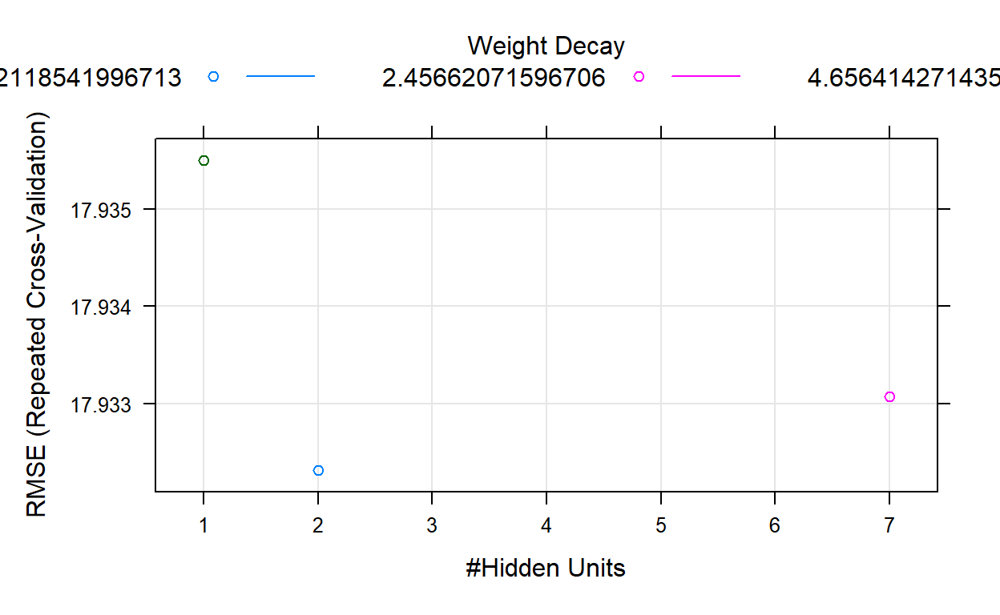
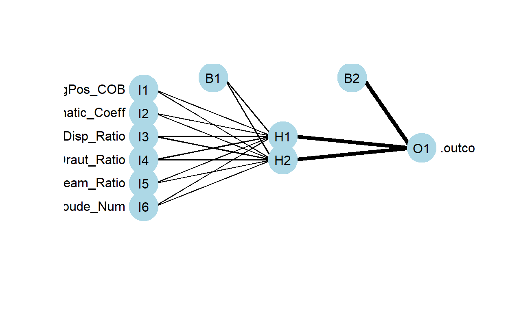
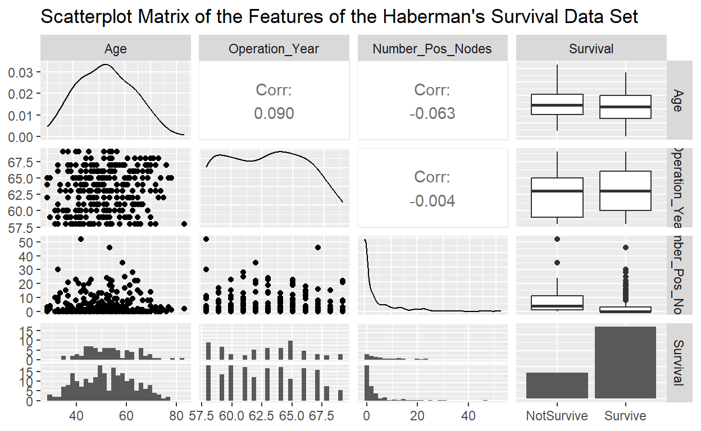
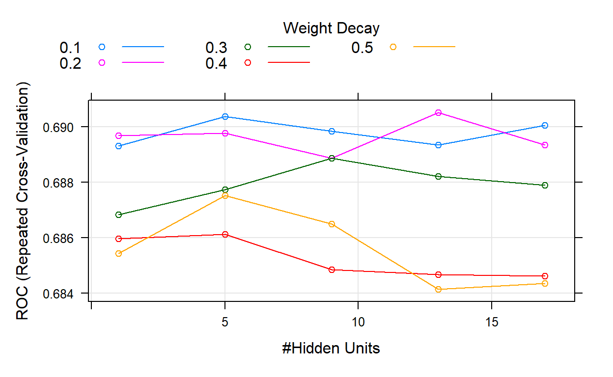
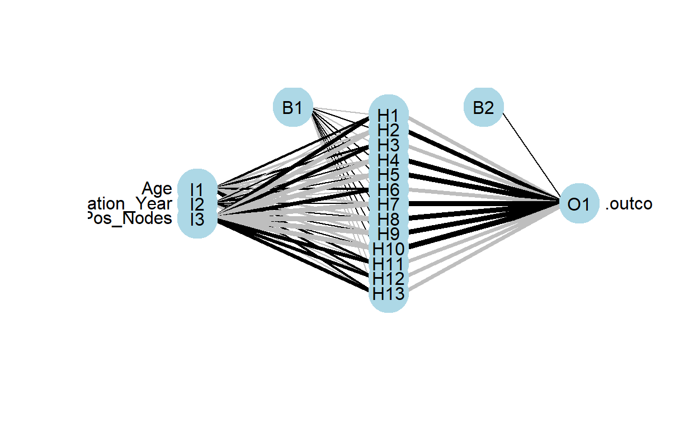
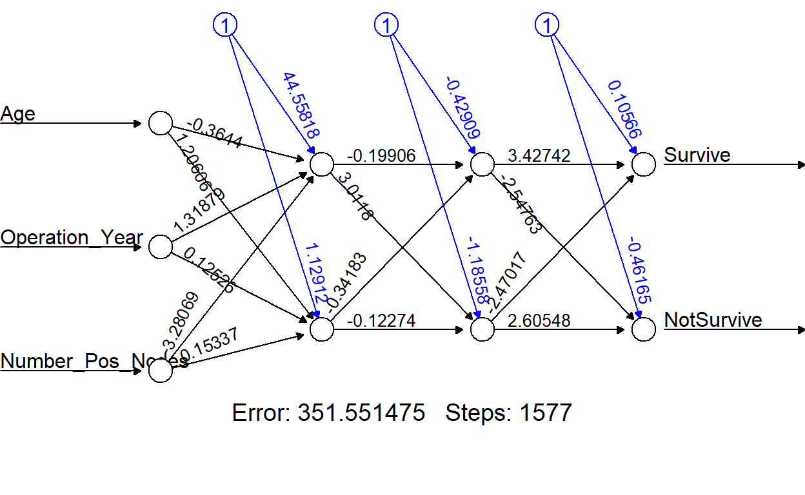
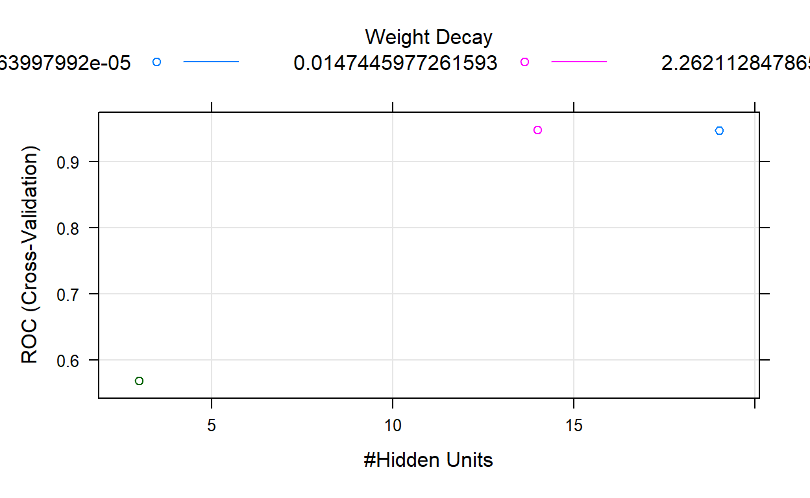
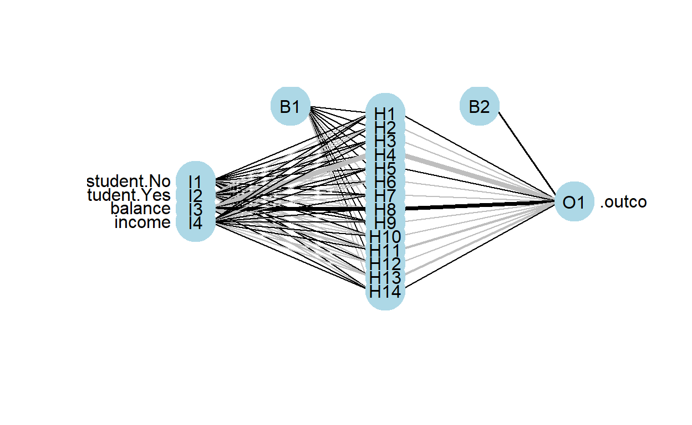

##Reminder
Before looking at the lecture note, I would like to leave a song.
If you want to listen, please click here.
Last week, we talked about
Supervised Learning
Gradient Descent Algorithm
Boruta Feature Selection Algorithm
Please install the following packages.
tidyverseneuralnetGGallynnetcaret
install.packages(c("tidyverse","neuralnet","GGally","nnet","caret"))Artificial Neural Network
Artificial neural networks (ANNs) describe a specific class of machine learning algorithms designed to acquire their own knowledge by extracting useful patterns from data. ANNs are function approximators, mapping inputs to outputs, and are composed of many interconnected computational units, called neurons. Each individual neuron possesses little intrinsic approximation capability; however, when many neurons function cohesively together, their combined effects show remarkable learning performance. This tutorial provides an introduction to ANNs and discusses a few key features to consider and will demonstrate how to apply ANNs.
Biologic Model
ANNs are engineered computational models inspired by the brain (human & animal). While some researchers used ANNs to study animal brains, most researchers view neural networks as being inspired by, not models of, neurological systems.The following figure shows the basic functional unit of the brain, a biologic neuron.

ANN neurons are simple representations of their biologic counterparts. In the biologic neuron figure please note the Dendrite, Cell body, and the Axon with the Synaptic terminals. In biologic systems, information (in the form of neuroelectric signals) flow into the neuron through the dendrites. If a sufficient number of input signals enter the neuron through the dendrites, the cell body generates a response signal and transmits it down the axon to the synaptic terminals. The specific number of input signals required for a response signal is dependent on the individual neuron. When the generated signal reaches the synaptic terminals neurotransmitters flow out of the synaptic terminals and interact with dendrites of adjoining neurons. There are three major takeaways from the biologic neuron:
The neuron only generates a signal if a sufficient number of input signals enter the neurons dendrites (all or nothing) Neurons receive inputs from many adjacent neurons upstream, and can transmit signals to many adjacent signals downstream (cumulative inputs) Each neuron has its own threshold for activation (synaptic weight).
Artifical Neuron<>
The artificial analog of the biologic neuron is shown below in the following figure. In the artificial model the inputs correspond to the dendrites, the transfer function, net input, and activation function correspond to the cell body, and the activation corresponds to the axon and synaptic terminal.

The inputs to the artificial neuron may correspond to raw data values, or in deeper architectures, may be outputs from preceding artificial neurons. The transfer function sums all the inputs together (cumulative inputs). If the summed input values reach a specified threshold, the activation function generates an output signal (all or nothing). The output signal then moves to a raw output or other neurons depending on specific ANN architecture. This basic artificial neuron is combined with multiple other artificial neurons to create an ANNs such as the ones shown in the figure below.

ANNs are often described as having an Input layer, Hidden layer, and Output layer. The input layer reads in data values from a user provided input. Within the hidden layer is where a majority of the “learning” takes place, and the output layer displays the results of the ANN. In the bottom plot of the figure above, each of the red input nodes correspond to an input vector \(\vec{x}_{i}\) Each of the black lines with correspond to a weight \(w^{(l)}_{ij}\) and describe how artificial neurons are connections to one another within the ANN. The \(i\) subscript identifies the source and the \(j\) subscript describes to which artificial neuron the weight connects the source to. The green output nodes are the output vectors \(\vec{y}_{q}\).
Examination of the figures top-left and top-right plots show two possible ANN configurations. In the top-left, we see a network with one hidden layer with \(q\) artificial neurons, \(p\) input vectors \(\vec{x}\), and generates \(q\) output vectors \(\vec{y}\). Please note the bias inputs to each hidden node, denoted by the \(b_q\). The bias term is a simple constant valued 1 to each hidden node acting akin to the grand mean in a simple linear regression. Each bias term in a ANN has its own associated weight \(w\). n the top-right ANN we have a network with two hidden layers. This network adds superscript notation to the bias terms and the weights to identify to which layer each term belongs. Weights and biases with a superscript 1 act on connecting the input layer to the first layer of artificial neurons and terms with a superscript 2 connect the output of the second hidden layer to the output vectors.
The size and structure of ANNs are only limited by the imagination of the analyst.
Activation Functions
The capability of ANNs to learn approximately any function, (given sufficient training data examples) are dependent on the appropriate selection of the Activation Function(s) present in the network. Activation functions enable the ANN to learn non-linear properties present in the data. We represent the activation function here as \(\phi(\cdot)\). The input into the activation function is the weighted sum of the input features from the preceding layer. Let \(o_j\) be the output from the jth neuron in a given layer for a network for k input vector features.
\(o_j=\phi(b_j+\sum\limits_{i=1}^p w_ix_i)\)
The output \(o_j\) can feed into the output layer of a neural network, or in deeper architectures may feed into additional hidden layers. The activation function determines if the sum of the weighted inputs plus a bias term is sufficiently large to trigger the firing of the neuron. There is not a universal best choice for the activation function, however, researchers have provided ample information regarding what activation functions work well for ANN solutions to many common problems. The choice of the activation function governs the required data scaling necessary for ANN analysis. Below we present activation functions commonly seen in may ANNs.

.
How ANNs Learn
We have described the structure of ANNs, however, we have not touched on how these networks learn. For the purposes of this discussion we assume that we have a data set of labeled observations. Data sets in which we have some features \((X)\) describing an output \((\vec{y})\) fall under machine learning techniques called Supervised Learning. To begin training our notional single-layer one-neuron neural network we initially randomly assign weights. We then run the neural network with the random weights and record the outputs generated. This is called a forward pass. Output values, in our case called \(\vec{y}\), are a function of the input values \((X)\), the random initial weights (\(\vec{w}\)) and our choice of the threshold function \((T)\)
\(\vec{\hat{y}} = f(X, \vec{w}, T)\)
Once we have our ANN output values \((\vec{\hat{y}})\) we can compare them to the data set output values \((\vec{{y}})\). To do this we use a performance function \(P\). The choice of the performance function is a choice of the analyst, we choose to use the One-Half Square Error Cost Function otherwise known as the Sum of Squared Errors (SSE).
\(P = \frac{1}{2}\|\vec{y}-\vec{\hat{y}}\|^{2}_{2}\)
Now that we have our initial performance, we need a method to adjust the weights to improve the performance. For our performance function \(P\), to maximize the performance of the one-layer, one-neuron neural network, we need to minimize the difference between ANN predicted output values \((\vec{\hat{y}})\) and the observed data set outputs \((\vec{{y}})\). Recall that our neural network is simply a function \(\vec{\hat{y}} = f(X, \vec{w}, T)\) Thus we can minimize the MSE by differentiating the performance function with respect to the weights \((w)\). Recall however, the weights in our ANN is a vector, thus we need to update each weight individually, so we require the use of the partial derivative. Additionally, we need to determine how much we want to improve. So we add a parameter \(r\) , called the learning rate parameter, which is a scalar value that controls how far we move closer to the optimum weight values. The weight updates are calculated as follows: \(\Delta \vec{w} = r*(\frac{\partial P}{\partial w_0},\frac{\partial P}{\partial w_1}, ... ,\frac{\partial P}{\partial w_q})\)
The previous equation describes how to adjust each of the weights associated with the \(q\) input features of \(X\) and the bias weight \(b_0\). We then update the weight values as prescribed by the above equation. This process is called Back-Propagation. Once the weights are updated, we can re-run the neural network with the update weight values. This entire process can be repeated a number of times until either, a set number of iterations occur, or, we reach a pre-specified performance value (minimum error rate).
The back-propagation algorithm (described in the previous paragraphs) is the fundamental process by which an ANN learns. This brief example merely summaries high level details of the procedure.
The back-propagation algorithm is the most computationally expensive component to many neural networks. Given a ANN, back-propagation requires \(O(l)\) operations for \(l\)-hidden layers, and \(O(w^2)\) perations for the number of input weights. We often describe ANNs in terms of depth and width, where the depth refers to the number of total layers, and the width refers to the number of neurons within each layer.
Prior to moving on to ANN application we must touch on one more topic, neural network hyperparameters
####ANN Hyperparameters<>
ANN hyperparameters are settings used to control how a neural network performs. We have seen examples of hyperparameters previously, for example the learning rate in back-propagation and the selection of MSE as the performance metric. Hyperparameters dictate how well neural networks are able to learn the underlying functions they approximate. Poor hyperparameter selection can lead to ANNs that fail to converge, exhibit chaotic behavior, or converge too quickly at local, not global, optimums. Hyperparameters are initially selected based on historical knowledge about the data set being analyzed and/or based on the type of analysis being conducted. The optimum values of hyperparameters are dependent on the specific data sets being analyzed, therefore, in a majority of neural network analysis, hyperparameters need to be tuned for the best performance. The No Free Lunch Theorem states that no machine learning algorithm (neural networks included) is always better at predicting new, unobserved, data points universally. When building a ANN, we are looking a building a network that performs reasonably well on a specific data set, not on all possible data sets.
The ultimate goal of an ANN is to train the network on training data, with the expectation that given new data the ANN will be able to predict their outputs with accuracy. The capability to predict new observations is called generalization. Generally, when ANNs are developed they are evaluated against one data set that has been split into a training data set and a test data set. The training data set is used to train the ANN, and the test data set is used to measure the neural networks capacity to generalize to new observations. When testing ANN hyperparameters we generally see multiple ANNs created with different hyperparameters trained on the training data set. Each of the ANNs are tested against the test data set and the ANN with the lowest test data set error is assumed to be the neural network with the best capacity to generalize to new observations.
When testing ANNs we are concerned with two types of error, under-fitting and over-fitting. An ANN exhibiting under-fitting is a neural network in which the error rate of the training data set is very high. An ANN exhibiting over-fitting has a large gap between the error rates on the training data set and the error rates on the test data set. We expect to see a slight performance decrease between the test and training data set error rates, however if this gap is large, over-fitting may be the cause. Researchers can always design a ANN with perfect performance on the training data set by increasing either the width or depth of the neural network. Adjusting these ANN hyperparameters is an adjustment of the neural networks capacity. In much the same way we can fit high-order polynomials in linear regression to perfectly match the output as a function of the regressors, ANNs can be gamed by simply adding depth to the network. An over-capacity ANN is likely to show over-fitting when tested against the test data set. ANNs are function approximators, and as approximators we are looking for a neural network that is no larger or complex than it needs to be for the required performance. Given two ANNs with equal test data set error performance, Occams razor dictates that the simplest model be selected, given no additional information.
Application 1<>
ANN Regression
Regression ANNs predict an output variable as a function of the inputs. The input features (independent variables) can be categorical or numeric types, however, for regression ANNs, we require a numeric dependent variable. If the output variable is a categorical variable (or binary) the ANN will function as a classifier.
There are awful lot of ways to construct an ANN structure in R, but
we will use caret package since it provides the opportunity
of creating NN models using different package.
To develop a supervised learning models in Caret, you must check this and this.
We require the following packages for the analysis.
We require the following packages for the analysis.
library(tidyverse)
library(nnet)
library(GGally)
library(caret)Our regression ANN will use the Yacht Hydrodynamics data set from UCIs Machine Learning Repository. The yacht data was provided by Dr. Roberto Lopez email. This data set contains data contains results from 308 full-scale experiments performed at the Delft Ship Hydromechanics Laboratory where they test 22 different hull forms. Their experiment tested the effect of variations in the hull geometry and the ship’s Froude number on the crafts residuary resistance per unit weight of displacement.
To begin we download the data from UCI.
url <- 'http://archive.ics.uci.edu/ml/machine-learning-databases/00243/yacht_hydrodynamics.data'
Yacht_Data <- read_table(file = url,
col_names = c('LongPos_COB', 'Prismatic_Coeff',
'Len_Disp_Ratio', 'Beam_Draut_Ratio',
'Length_Beam_Ratio','Froude_Num',
'Residuary_Resist')) %>%na.omit()##
## -- Column specification --------------------------------------------------------
## cols(
## LongPos_COB = col_double(),
## Prismatic_Coeff = col_double(),
## Len_Disp_Ratio = col_double(),
## Beam_Draut_Ratio = col_double(),
## Length_Beam_Ratio = col_double(),
## Froude_Num = col_double(),
## Residuary_Resist = col_double()
## )## Warning: 1 parsing failure.
## row col expected actual file
## 113 -- 7 columns 8 columns 'http://archive.ics.uci.edu/ml/machine-learning-databases/00243/yacht_hydrodynamics.data'In this instance, we omit the missing observations for practical advantages. However, you should consider more advanced techniques in your real life applications.
head(Yacht_Data)Prior to any data analysis lets take a look at the data set.
ggpairs(Yacht_Data, title = "Scatterplot Matrix of the Features of the Yacht Data Set")
Here we see an excellent summary of the variation of each feature in our data set. Draw your attention to the bottom-most strip of scatter-plots. This shows the residuary resistance as a function of the other data set features (independent experimental values). The greatest variation appears with the Froude Number feature. It will be interesting to see how this pattern appears in the subsequent regression ANNs.
Prior to regression ANN construction we first must split the Yacht
data set into test and training data sets. After that, scale each
feature to fall in the [0,1] interval. In doing so, we
will create scaler function.
# Scale the Data
scaler <- function(x){
(x - min(x)) / (max(x) - min(x))
}Then, partition your data as train and test.
# Split the data into training and test set
set.seed(123)
training.samples <- Yacht_Data$Residuary_Resist %>% createDataPartition(p = 0.8, list = FALSE) #createDataPartition helps you define train set index
train.data <- Yacht_Data[training.samples, ]
test.data <- Yacht_Data[-training.samples, ]train_data_new<- train.data%>%select(-Residuary_Resist)%>%scaler()%>%cbind(train.data$Residuary_Resist)%>%as_tibble()%>%mutate(Residuary_Resist = `train.data$Residuary_Resist`)%>%select(-`train.data$Residuary_Resist`)head(train_data_new)In above code chunks, we scale the inputs of the model with their
mean and standard deviation and then combine the response
Residuary_Resist with those scaled inputs. Here one
important reminder should be noticed. Since the data does not have any
categorical variable, we applied scaling direct. If you have a
categorical variable, you can include them to your input matrix by
One Hot Encoding. After encoding, you do not need to
scale the newly created binary features, since they are already between
0 and 1.
Why we scale the inputs?
To speed up the algorithm.
After that, apply the same procedure for the test data.
test_data_new<- test.data%>%select(-Residuary_Resist)%>%scaler()%>%cbind(test.data$Residuary_Resist)%>%as_tibble()%>%mutate(Residuary_Resist = `test.data$Residuary_Resist`)%>%select(-`test.data$Residuary_Resist`)head(test_data_new)As stated above, there are many packages to construct a feed forward
neural network in R, but we proceed with caret and its
dependencies. We use neuralnet package for our regression
problem. Here,
you can reach out the list of the packages that you can use for NN
models in R with caret.
To improve the prediction capability of your algorithm and prevent it from possible dangers like over-fitting, we need to tune the model parameters, called hyperparamter tunning. Note that the optimized parameter values for a ML algorithm can be obtained via cross-validation.
In caret, train function can be used to
evaluate, using resampling, the effect of model tuning parameters on performance
choose the optimal model across these parameters
estimate model performance from a training set
The nnet package that can be used for both regression
and classification purposes has two parameters to be tuned.
size (#Hidden Units)
decay (Weight Decay)
We can follow two possible ways, of course there are more, for hyper-parameter tuning; grid search and random search. In grid search, the algorithm tries the parameter values in the pre-defined range by user. On the other hand, the algorithm randomly pick points and improve it through the obtained result in random search.
Consider random search in this example, so define the criteria for
training via trainControl function.
tr_control<-trainControl(method = "repeatedcv", number =10,repeats = 5, search = "random")We train our network algorithm with 10 fold CV with 5 repeats and tune the parameters via random search.
set.seed(1)
nn_model <-train(Residuary_Resist ~., data =train_data_new, method = "nnet", trControl = tr_control)## # weights: 57
## initial value 76291.999276
## iter 10 value 74358.393992
## iter 20 value 74355.183301
## final value 74355.166494
## converged
## # weights: 9
## initial value 76935.767238
## iter 10 value 74421.670066
## final value 74421.378931
## converged
## # weights: 17
## initial value 77300.182737
## iter 10 value 74326.116754
## final value 74325.889171
## converged
## # weights: 57
## initial value 77180.066360
## iter 10 value 75482.724757
## iter 20 value 75474.604504
## final value 75474.554571
## converged
## # weights: 9
## initial value 77233.222455
## iter 10 value 75545.956809
## final value 75540.966522
## converged
## # weights: 17
## initial value 77033.491359
## iter 10 value 75446.950727
## final value 75445.230151
## converged
## # weights: 57
## initial value 77420.183792
## iter 10 value 74211.374193
## iter 20 value 74209.083935
## final value 74209.069007
## converged
## # weights: 9
## initial value 75401.177416
## iter 10 value 74276.335207
## final value 74275.310522
## converged
## # weights: 17
## initial value 77267.119824
## iter 10 value 74183.701176
## iter 20 value 74179.842862
## final value 74179.796273
## converged
## # weights: 57
## initial value 72704.095149
## iter 10 value 70655.841881
## final value 70654.279246
## converged
## # weights: 9
## initial value 71639.707704
## iter 10 value 70720.028065
## final value 70719.748966
## converged
## # weights: 17
## initial value 72737.467930
## iter 10 value 70632.263977
## iter 20 value 70625.245146
## iter 20 value 70625.245055
## iter 20 value 70625.245047
## final value 70625.245047
## converged
## # weights: 57
## initial value 78696.668298
## iter 10 value 75410.116361
## iter 20 value 75405.551792
## iter 30 value 75405.424837
## iter 30 value 75405.424721
## iter 30 value 75405.424714
## final value 75405.424714
## converged
## # weights: 9
## initial value 76793.994056
## iter 10 value 75474.118200
## final value 75471.886801
## converged
## # weights: 17
## initial value 78086.354278
## iter 10 value 75377.503873
## final value 75376.095586
## converged
## # weights: 57
## initial value 76042.947084
## iter 10 value 74987.105967
## iter 20 value 74938.641790
## iter 30 value 74932.644306
## iter 40 value 74932.504999
## final value 74932.500973
## converged
## # weights: 9
## initial value 77060.250501
## iter 10 value 75003.106297
## final value 74998.822685
## converged
## # weights: 17
## initial value 76680.120732
## iter 10 value 74911.986827
## iter 20 value 74903.216878
## final value 74903.215380
## converged
## # weights: 57
## initial value 74839.376197
## iter 10 value 71656.900466
## iter 20 value 71640.524794
## final value 71640.302382
## converged
## # weights: 9
## initial value 73710.333309
## iter 10 value 71709.745158
## final value 71706.132419
## converged
## # weights: 17
## initial value 74012.339406
## iter 10 value 71614.638872
## iter 20 value 71611.162307
## iter 20 value 71611.161918
## iter 20 value 71611.161906
## final value 71611.161906
## converged
## # weights: 57
## initial value 76470.967825
## iter 10 value 74526.796907
## iter 20 value 74517.268225
## final value 74516.630900
## converged
## # weights: 9
## initial value 76013.894310
## iter 10 value 74583.159149
## final value 74582.806171
## converged
## # weights: 17
## initial value 76446.419814
## iter 10 value 74490.608758
## final value 74487.386317
## converged
## # weights: 57
## initial value 73068.958317
## iter 10 value 70628.856264
## iter 20 value 70621.167104
## iter 30 value 70620.310393
## final value 70620.308137
## converged
## # weights: 9
## initial value 73471.218862
## iter 10 value 70690.246616
## final value 70685.720021
## converged
## # weights: 17
## initial value 71938.145830
## iter 10 value 70592.148721
## iter 20 value 70591.306337
## iter 20 value 70591.306019
## iter 20 value 70591.305999
## final value 70591.305999
## converged
## # weights: 57
## initial value 75320.032531
## iter 10 value 73171.801418
## final value 73170.262603
## converged
## # weights: 9
## initial value 74715.117261
## iter 10 value 73239.864756
## final value 73236.197003
## converged
## # weights: 17
## initial value 75361.030169
## iter 10 value 73141.691515
## final value 73141.098372
## converged
## # weights: 57
## initial value 76630.271856
## iter 10 value 73151.937491
## final value 73151.221623
## converged
## # weights: 9
## initial value 75229.158642
## iter 10 value 73221.029484
## final value 73217.227648
## converged
## # weights: 17
## initial value 75452.376006
## iter 10 value 73122.970549
## final value 73122.033846
## converged
## # weights: 57
## initial value 78184.499751
## iter 10 value 75211.270023
## iter 20 value 75205.043496
## final value 75204.980411
## converged
## # weights: 9
## initial value 77810.817530
## iter 10 value 75276.125963
## final value 75271.342468
## converged
## # weights: 17
## initial value 77019.827240
## iter 10 value 75177.551649
## final value 75175.669715
## converged
## # weights: 57
## initial value 78648.157297
## iter 10 value 75773.087484
## iter 20 value 75769.563790
## final value 75769.548251
## converged
## # weights: 9
## initial value 78053.916037
## iter 10 value 75847.578458
## final value 75835.958679
## converged
## # weights: 17
## initial value 76948.291172
## iter 10 value 75740.749488
## final value 75740.230235
## converged
## # weights: 57
## initial value 66709.074176
## iter 10 value 64976.884198
## iter 20 value 64973.810732
## final value 64973.806046
## converged
## # weights: 9
## initial value 66346.269422
## iter 10 value 65039.338993
## final value 65038.658631
## converged
## # weights: 17
## initial value 66988.656336
## iter 10 value 64945.199188
## final value 64944.974053
## converged
## # weights: 57
## initial value 74598.685789
## iter 10 value 72166.642616
## iter 20 value 72161.312475
## final value 72161.212735
## converged
## # weights: 9
## initial value 74821.714145
## iter 10 value 72227.685484
## final value 72227.115146
## converged
## # weights: 17
## initial value 74044.925744
## iter 10 value 72133.280805
## iter 20 value 72132.046526
## final value 72132.044504
## converged
## # weights: 57
## initial value 77373.238003
## iter 10 value 73589.639046
## final value 73589.166227
## converged
## # weights: 9
## initial value 74954.464026
## iter 10 value 73656.792287
## final value 73655.193394
## converged
## # weights: 17
## initial value 75496.790442
## iter 10 value 73561.333195
## final value 73559.966882
## converged
## # weights: 57
## initial value 79707.685176
## iter 10 value 76732.045655
## iter 20 value 76725.553663
## iter 30 value 76725.436977
## iter 30 value 76725.436707
## iter 30 value 76725.436691
## final value 76725.436691
## converged
## # weights: 9
## initial value 79036.705873
## iter 10 value 76797.401693
## final value 76792.012250
## converged
## # weights: 17
## initial value 79475.076207
## iter 10 value 76700.417758
## iter 20 value 76696.063579
## iter 20 value 76696.063356
## iter 20 value 76696.063270
## final value 76696.063270
## converged
## # weights: 57
## initial value 73279.475524
## iter 10 value 72912.259675
## final value 72912.135276
## converged
## # weights: 9
## initial value 75046.009470
## iter 10 value 72980.109981
## final value 72978.202668
## converged
## # weights: 17
## initial value 75333.351844
## iter 10 value 72884.073596
## final value 72882.923852
## converged
## # weights: 57
## initial value 75997.840274
## iter 10 value 74649.805069
## iter 20 value 74645.154685
## iter 20 value 74645.154154
## iter 20 value 74645.154008
## final value 74645.154008
## converged
## # weights: 9
## initial value 77075.639170
## iter 10 value 74714.397619
## final value 74711.138120
## converged
## # weights: 17
## initial value 76682.041076
## iter 10 value 74616.874704
## iter 20 value 74615.974585
## iter 20 value 74615.974334
## iter 20 value 74615.974326
## final value 74615.974326
## converged
## # weights: 57
## initial value 78387.939164
## iter 10 value 75847.406817
## final value 75845.821951
## converged
## # weights: 9
## initial value 78751.448718
## iter 10 value 75913.687371
## final value 75912.098448
## converged
## # weights: 17
## initial value 77216.919722
## iter 10 value 75818.045340
## final value 75816.541710
## converged
## # weights: 57
## initial value 74794.246076
## iter 10 value 72180.422805
## final value 72179.530649
## converged
## # weights: 9
## initial value 75133.875661
## iter 10 value 72249.692216
## final value 72245.461290
## converged
## # weights: 17
## initial value 75171.305428
## iter 10 value 72150.775667
## final value 72150.373896
## converged
## # weights: 57
## initial value 74700.932620
## iter 10 value 72452.988991
## iter 20 value 72448.273275
## final value 72448.268989
## converged
## # weights: 9
## initial value 75211.388905
## iter 10 value 72514.177923
## final value 72513.991726
## converged
## # weights: 17
## initial value 73620.798720
## iter 10 value 72420.982138
## final value 72419.163839
## converged
## # weights: 57
## initial value 71793.359724
## iter 10 value 69382.851537
## iter 20 value 69381.657248
## iter 20 value 69381.657019
## iter 20 value 69381.657019
## final value 69381.657019
## converged
## # weights: 9
## initial value 71458.919481
## iter 10 value 69451.145582
## final value 69447.012565
## converged
## # weights: 17
## initial value 71828.551711
## iter 10 value 69353.783512
## iter 20 value 69352.813751
## final value 69352.663279
## converged
## # weights: 57
## initial value 73948.549535
## iter 10 value 72108.281136
## iter 20 value 72105.780303
## final value 72105.774370
## converged
## # weights: 9
## initial value 73665.521650
## iter 10 value 72173.015581
## final value 72171.651707
## converged
## # weights: 17
## initial value 73535.227547
## iter 10 value 72076.799847
## final value 72076.611925
## converged
## # weights: 57
## initial value 74751.928570
## iter 10 value 72444.205445
## iter 20 value 72438.613063
## final value 72438.542714
## converged
## # weights: 9
## initial value 74338.549033
## iter 10 value 72512.711805
## final value 72504.442193
## converged
## # weights: 17
## initial value 75799.546596
## iter 10 value 72410.356383
## final value 72409.382651
## converged
## # weights: 57
## initial value 75472.524906
## iter 10 value 73154.125393
## iter 20 value 73145.182354
## iter 20 value 73145.182240
## iter 20 value 73145.182240
## final value 73145.182240
## converged
## # weights: 9
## initial value 75967.305822
## iter 10 value 73211.345994
## final value 73211.312226
## converged
## # weights: 17
## initial value 74928.182476
## iter 10 value 73120.760453
## final value 73115.954270
## converged
## # weights: 57
## initial value 78337.326546
## iter 10 value 75562.783045
## iter 20 value 75561.805251
## iter 20 value 75561.805089
## iter 20 value 75561.805089
## final value 75561.805089
## converged
## # weights: 9
## initial value 76999.587275
## iter 10 value 75628.372287
## final value 75628.191385
## converged
## # weights: 17
## initial value 77474.797490
## iter 10 value 75535.922440
## final value 75532.493161
## converged
## # weights: 57
## initial value 81157.541904
## iter 10 value 77791.991771
## iter 20 value 77778.712475
## iter 30 value 77778.035354
## final value 77778.028185
## converged
## # weights: 9
## initial value 79220.323596
## iter 10 value 77845.568339
## final value 77844.592469
## converged
## # weights: 17
## initial value 80263.101609
## iter 10 value 77757.741903
## iter 20 value 77748.744235
## final value 77748.657652
## converged
## # weights: 57
## initial value 76843.889778
## iter 10 value 73876.119312
## iter 20 value 73858.881389
## iter 30 value 73853.519955
## final value 73853.183242
## converged
## # weights: 9
## initial value 75568.051983
## iter 10 value 73920.320904
## final value 73919.387673
## converged
## # weights: 17
## initial value 76099.170751
## iter 10 value 73825.728508
## final value 73823.928763
## converged
## # weights: 57
## initial value 78961.491434
## iter 10 value 76094.822573
## iter 20 value 76087.207006
## final value 76086.521338
## converged
## # weights: 9
## initial value 77846.332516
## iter 10 value 76153.166892
## final value 76152.987004
## converged
## # weights: 17
## initial value 78410.988382
## iter 10 value 76063.753253
## iter 20 value 76058.118922
## iter 30 value 76057.210679
## final value 76057.194048
## converged
## # weights: 57
## initial value 72718.098699
## iter 10 value 71138.247972
## iter 20 value 71135.612559
## iter 20 value 71135.611873
## iter 20 value 71135.611873
## final value 71135.611873
## converged
## # weights: 9
## initial value 73334.693357
## iter 10 value 71201.402750
## final value 71201.279571
## converged
## # weights: 17
## initial value 73486.864270
## iter 10 value 71109.925676
## final value 71106.512113
## converged
## # weights: 57
## initial value 74951.795611
## iter 10 value 72757.437237
## iter 20 value 72748.242875
## final value 72748.130774
## converged
## # weights: 9
## initial value 74509.475099
## iter 10 value 72814.771303
## final value 72813.917931
## converged
## # weights: 17
## initial value 75153.657913
## iter 10 value 72719.097792
## final value 72719.015000
## converged
## # weights: 57
## initial value 78251.675775
## iter 10 value 76529.353915
## iter 20 value 76527.039523
## final value 76527.036349
## converged
## # weights: 9
## initial value 78572.749386
## iter 10 value 76594.058406
## final value 76593.468855
## converged
## # weights: 17
## initial value 79932.035165
## iter 10 value 76498.853522
## final value 76497.708688
## converged
## # weights: 57
## initial value 76898.695066
## iter 10 value 75160.881788
## iter 20 value 75157.456057
## final value 75157.445775
## converged
## # weights: 9
## initial value 77553.123996
## iter 10 value 75223.849087
## final value 75223.668336
## converged
## # weights: 17
## initial value 77375.224288
## iter 10 value 75129.404372
## final value 75128.186170
## converged
## # weights: 57
## initial value 75652.142869
## iter 10 value 73598.828179
## iter 20 value 73592.478270
## final value 73592.432363
## converged
## # weights: 9
## initial value 75028.632918
## iter 10 value 73659.009447
## final value 73658.568534
## converged
## # weights: 17
## initial value 75627.037293
## iter 10 value 73565.406162
## iter 20 value 73563.201296
## iter 20 value 73563.201118
## iter 20 value 73563.201104
## final value 73563.201104
## converged
## # weights: 57
## initial value 77006.134465
## iter 10 value 74949.449209
## iter 20 value 74945.944807
## final value 74945.936612
## converged
## # weights: 9
## initial value 77348.783285
## iter 10 value 75014.047534
## final value 75012.053761
## converged
## # weights: 17
## initial value 77304.376700
## iter 10 value 74922.321415
## iter 20 value 74916.700629
## iter 20 value 74916.700350
## iter 20 value 74916.700349
## final value 74916.700349
## converged
## # weights: 57
## initial value 73435.526134
## iter 10 value 69949.306434
## iter 20 value 69947.555837
## final value 69947.553265
## converged
## # weights: 9
## initial value 71631.008954
## iter 10 value 70014.078672
## final value 70013.215378
## converged
## # weights: 17
## initial value 72459.699752
## iter 10 value 69921.864157
## final value 69918.472811
## converged
## # weights: 57
## initial value 71586.764969
## iter 10 value 68760.287158
## iter 20 value 68744.740285
## iter 30 value 68742.478526
## final value 68742.470562
## converged
## # weights: 9
## initial value 71038.123784
## iter 10 value 68810.811398
## final value 68808.018377
## converged
## # weights: 17
## initial value 70504.242430
## iter 10 value 68716.710958
## final value 68713.414635
## converged
## # weights: 57
## initial value 75282.798606
## iter 10 value 74114.623939
## iter 20 value 74107.121884
## iter 30 value 74106.662738
## iter 30 value 74106.662033
## iter 30 value 74106.662033
## final value 74106.662033
## converged
## # weights: 9
## initial value 77315.925236
## iter 10 value 74174.596996
## final value 74172.901173
## converged
## # weights: 17
## initial value 75670.074942
## iter 10 value 74082.913504
## final value 74077.396809
## converged
## # weights: 57
## initial value 80308.244446
## iter 10 value 78078.660386
## iter 20 value 78075.218626
## final value 78075.213290
## converged
## # weights: 9
## initial value 79628.137270
## iter 10 value 78142.302806
## final value 78141.880589
## converged
## # weights: 17
## initial value 79432.797059
## iter 10 value 78046.108648
## final value 78045.815822
## converged
## # weights: 57
## initial value 72946.731040
## iter 10 value 70201.905584
## iter 20 value 70196.778599
## iter 30 value 70196.750463
## iter 30 value 70196.750137
## iter 30 value 70196.750080
## final value 70196.750080
## converged
## # weights: 9
## initial value 72547.479832
## iter 10 value 70288.105003
## final value 70262.378081
## converged
## # weights: 17
## initial value 71796.275081
## iter 10 value 70167.744603
## final value 70167.675534
## converged
## # weights: 57
## initial value 71315.698420
## iter 10 value 69081.468841
## iter 20 value 69049.811103
## iter 30 value 69041.818350
## final value 69041.790564
## converged
## # weights: 9
## initial value 71480.580095
## iter 10 value 69109.079127
## final value 69107.200405
## converged
## # weights: 17
## initial value 70514.481304
## iter 10 value 69013.223588
## final value 69012.781008
## converged
## # weights: 57
## initial value 76945.114374
## iter 10 value 74023.698288
## iter 20 value 74019.827881
## final value 74019.812969
## converged
## # weights: 9
## initial value 75402.069398
## iter 10 value 74088.375536
## final value 74085.859405
## converged
## # weights: 17
## initial value 75070.361821
## iter 10 value 73990.891339
## final value 73990.600965
## converged
## # weights: 57
## initial value 73761.950865
## iter 10 value 71702.775000
## iter 20 value 71686.281422
## iter 30 value 71684.219001
## final value 71684.198602
## converged
## # weights: 9
## initial value 73884.111393
## iter 10 value 71750.551304
## final value 71750.073861
## converged
## # weights: 17
## initial value 74370.660644
## iter 10 value 71659.632842
## iter 20 value 71655.038671
## final value 71655.034702
## converged
## # weights: 57
## initial value 76731.369421
## iter 10 value 75273.570441
## iter 20 value 75263.439506
## iter 30 value 75261.356805
## final value 75261.348267
## converged
## # weights: 9
## initial value 77579.110605
## iter 10 value 75329.993082
## final value 75327.596932
## converged
## # weights: 17
## initial value 77512.812340
## iter 10 value 75233.328594
## final value 75232.070220
## converged
## # weights: 57
## initial value 78818.482220
## iter 10 value 76630.361055
## iter 20 value 76628.357195
## final value 76628.354592
## converged
## # weights: 9
## initial value 78068.412530
## iter 10 value 76696.852527
## final value 76694.891042
## converged
## # weights: 17
## initial value 77949.111949
## iter 10 value 76599.294991
## final value 76598.999171
## converged
## # weights: 57
## initial value 78229.855778
## iter 10 value 75983.947297
## iter 20 value 75977.408265
## final value 75977.392627
## converged
## # weights: 9
## initial value 78450.371639
## iter 10 value 76045.742314
## final value 76043.554274
## converged
## # weights: 17
## initial value 78066.192993
## iter 10 value 75948.407603
## final value 75948.157610
## converged
## # weights: 57
## initial value 75614.889931
## iter 10 value 72838.708611
## iter 20 value 72832.191238
## iter 30 value 72831.471868
## final value 72831.470804
## converged
## # weights: 9
## initial value 76092.245392
## iter 10 value 72914.431729
## final value 72897.350392
## converged
## # weights: 17
## initial value 74541.885835
## iter 10 value 72803.424894
## final value 72802.328729
## converged
## # weights: 57
## initial value 78947.784070
## iter 10 value 76623.749495
## iter 20 value 76619.537670
## final value 76619.523174
## converged
## # weights: 9
## initial value 78494.368749
## iter 10 value 76686.198334
## final value 76686.105381
## converged
## # weights: 17
## initial value 79821.287360
## iter 10 value 76595.009092
## final value 76590.145122
## converged
## # weights: 57
## initial value 74623.447004
## iter 10 value 72722.221466
## iter 20 value 72717.913406
## final value 72717.850319
## converged
## # weights: 9
## initial value 74865.520961
## iter 10 value 72785.566163
## final value 72783.961268
## converged
## # weights: 17
## initial value 75280.421936
## iter 10 value 72689.431537
## final value 72688.631591
## converged
## # weights: 17
## initial value 84294.686087
## iter 10 value 81632.706939
## final value 81631.490504
## convergedYou can see the details of your model by executing model object name.
nn_model## Neural Network
##
## 248 samples
## 6 predictor
##
## No pre-processing
## Resampling: Cross-Validated (10 fold, repeated 5 times)
## Summary of sample sizes: 224, 224, 224, 221, 224, 224, ...
## Resampling results across tuning parameters:
##
## size decay RMSE Rsquared MAE
## 1 4.65641427 17.93551 0.03204874 10.01197
## 2 0.09221185 17.93231 0.03217768 10.00935
## 7 2.45662072 17.93307 0.03194351 10.00997
##
## RMSE was used to select the optimal model using the smallest value.
## The final values used for the model were size = 2 and decay = 0.09221185.nn_model$bestTune #gives the optimal parameter values.The output shows that the optimal parameters for your network are
size = 2 and decay = 0.09221185, which gives
the highest \(R^2\) and lowest \(MAE\) values used for training criteria.
You can change those metrics in your trainControl
object.
You can draw your training process across the loss function and
parameter values by plot function.
plot(nn_model)
To get the structure of your final model.
nn_model$finalModel## a 6-2-1 network with 17 weights
## inputs: LongPos_COB Prismatic_Coeff Len_Disp_Ratio Beam_Draut_Ratio Length_Beam_Ratio Froude_Num
## output(s): .outcome
## options were - decay=0.09221185You have two layers NN model where the first layer has 6 neurons and the second one has 2 neurons.
To get the visual of your model.
library(devtools)## Warning: package 'devtools' was built under R version 4.1.3## Zorunlu paket yükleniyor: usethis## Warning: package 'usethis' was built under R version 4.1.3#get a function
source_url('https://gist.githubusercontent.com/fawda123/7471137/raw/466c1474d0a505ff044412703516c34f1a4684a5/nnet_plot_update.r')## i SHA-1 hash of file is "74c80bd5ddbc17ab3ae5ece9c0ed9beb612e87ef"plot.nnet(nn_model$finalModel)## Zorunlu paket yükleniyor: scales## Warning: package 'scales' was built under R version 4.1.3##
## Attaching package: 'scales'## The following object is masked from 'package:purrr':
##
## discard## The following object is masked from 'package:readr':
##
## col_factor## Zorunlu paket yükleniyor: reshape## Warning: package 'reshape' was built under R version 4.1.3##
## Attaching package: 'reshape'## The following object is masked from 'package:dplyr':
##
## rename## The following objects are masked from 'package:tidyr':
##
## expand, smiths
The model performance on training data is already represented in
model summary. Now, calculate the model performance on the test data.
Before this, get your predictions using predict()
function.
nn_predict<-predict(nn_model$finalModel,test_data_new)Then,
paste("MAE of Model:", MAE(as.numeric(nn_predict),test_data_new$Residuary_Resist))## [1] "MAE of Model: 9.09155054929596"paste("RMSE of Model:", RMSE(as.numeric(nn_predict),test_data_new$Residuary_Resist))## [1] "RMSE of Model: 16.6848958613835"nn_model## Neural Network
##
## 248 samples
## 6 predictor
##
## No pre-processing
## Resampling: Cross-Validated (10 fold, repeated 5 times)
## Summary of sample sizes: 224, 224, 224, 221, 224, 224, ...
## Resampling results across tuning parameters:
##
## size decay RMSE Rsquared MAE
## 1 4.65641427 17.93551 0.03204874 10.01197
## 2 0.09221185 17.93231 0.03217768 10.00935
## 7 2.45662072 17.93307 0.03194351 10.00997
##
## RMSE was used to select the optimal model using the smallest value.
## The final values used for the model were size = 2 and decay = 0.09221185.summary(nn_model)## a 6-2-1 network with 17 weights
## options were - decay=0.09221185
## b->h1 i1->h1 i2->h1 i3->h1 i4->h1 i5->h1 i6->h1
## 0.66 0.17 0.36 0.63 0.57 0.52 0.35
## b->h2 i1->h2 i2->h2 i3->h2 i4->h2 i5->h2 i6->h2
## 0.66 0.17 0.36 0.62 0.57 0.52 0.35
## b->o h1->o h2->o
## 3.29 3.06 3.06Application 2<>
ANN Classification
Classification ANNs seek to classify an observation as belonging to some discrete class as a function of the inputs. The input features (independent variables) can be categorical or numeric types, however, we require a categorical feature as the dependent variable.
Data Preparation
Our classification ANN will use Haberman’s Survival data set from UCI’s Machine Learning Repository. Haberman’s data set was provided by Tjen-Sien Lim email, and contains cases from a 1958 and 1970 study conducted at the University of Chicago’s Billings Hospital on the survival of 306 patients who had undergone surgery for breast cancer. We will use this data set to predict a patients 5-year survival as a function of their age at date of operation, year of the operation, and the number of positive axillary nodes detected.
We first download the data from UCI. When this data is imported, the
Survival feature is imported as an integer, this needs to
be a categorical logical value so we will modify this feature using the
mutate() function in the dplyr package. A value of 1 in the Survival
feature indicates that the patient survived for at least 5 years after
the operation, and a value of 0 indites that the patient died within 5
years.
url <- 'http://archive.ics.uci.edu/ml/machine-learning-databases//haberman/haberman.data'
Hab_Data <- read_csv(file = url,col_names = c('Age', 'Operation_Year',
'Number_Pos_Nodes','Survival')) ## Rows: 306 Columns: 4
## -- Column specification --------------------------------------------------------
## Delimiter: ","
## dbl (4): Age, Operation_Year, Number_Pos_Nodes, Survival
##
## i Use `spec()` to retrieve the full column specification for this data.
## i Specify the column types or set `show_col_types = FALSE` to quiet this message.head(Hab_Data)dplyr::glimpse(Hab_Data)## Rows: 306
## Columns: 4
## $ Age <dbl> 30, 30, 30, 31, 31, 33, 33, 34, 34, 34, 34, 34, 34, 3~
## $ Operation_Year <dbl> 64, 62, 65, 59, 65, 58, 60, 59, 66, 58, 60, 61, 67, 6~
## $ Number_Pos_Nodes <dbl> 1, 3, 0, 2, 4, 10, 0, 0, 9, 30, 1, 10, 7, 0, 13, 0, 1~
## $ Survival <dbl> 1, 1, 1, 1, 1, 1, 1, 2, 2, 1, 1, 1, 1, 1, 1, 1, 1, 1,~We transformed our response variable for ease in the following process.
Hab_Data <- Hab_Data %>%
na.omit() %>%
mutate(Survival = ifelse(Survival == 2, "NotSurvive", "Survive"),Survival = factor(Survival))Check the proportion of your response.
prop.table(table(Hab_Data$Survival))##
## NotSurvive Survive
## 0.2647059 0.7352941To have a quick insight about the data.
ggpairs(Hab_Data, title = "Scatterplot Matrix of the Features of the Haberman's Survival Data Set")## `stat_bin()` using `bins = 30`. Pick better value with `binwidth`.
## `stat_bin()` using `bins = 30`. Pick better value with `binwidth`.
## `stat_bin()` using `bins = 30`. Pick better value with `binwidth`.
A brief examination of the data sets shows that many more patients survived at least 5 years after the operation. Of the patients that survived (bottom-subplots of the Survival row in the Scatterplot Matrix), we see many of the patients have few numbers of positive axillary nodes detected. Examination of the Age feature shows a few of the most elderly patients died within 5 years, and of the youngest patients we see increased 5-year survivability. We forego any more detailed visual inspection in favor of learning the relationships between the features using our classification ANN.
As in previous example, we scale our predictors, then partition data into train and test sets.
# Split the data into training and test set
set.seed(123)
training.samples <- Hab_Data$Survival %>% createDataPartition(p = 0.8, list = FALSE) #createDataPartition helps you define train set index
train.data <- Hab_Data[training.samples, ]
test.data <- Hab_Data[-training.samples, ]train_data_new_class<- train.data%>%select(-Survival)%>%scaler()%>%cbind(train.data$Survival)%>%as_tibble()%>%mutate(Survival = `train.data$Survival`)%>%select(-`train.data$Survival`)head(train_data_new_class)After that, follow the same steps for test data.
test_data_new_class<- test.data%>%select(-Survival)%>%scaler()%>%cbind(test.data$Survival)%>%as_tibble()%>%mutate(Survival = `test.data$Survival`)%>%select(-`test.data$Survival`)head(test_data_new_class)Check the proportion of the levels of the response variable in your both train and test data.
prop.table(table(train_data_new_class$Survival)) #train##
## NotSurvive Survive
## 0.2653061 0.7346939prop.table(table(test_data_new_class$Survival)) #test##
## NotSurvive Survive
## 0.2622951 0.7377049Since the proportions in train data, test data and raw data are almost equal, we can say that the samples are random.
Both train and test sets are prepared for the training. Now, we will build the structure. In contrast to the previous exercise, we use grid search to tune our parameters.
At first, we determine our training rules.
tr_control_for_class <- trainControl(method = "repeatedcv", number = 10, repeats = 5, classProbs = T, summaryFunction = twoClassSummary, savePredictions = T)Then, define your grid ranges for your parameters to be tuned;
size and decay.
nnetGrid <- expand.grid(size = seq(1,20,4),decay = seq(0.1,0.5,0.1))Train the algorithm.
set.seed(123)
nn_model_class <- train(Survival~.,data = train_data_new_class,method = "nnet", metric = "ROC",trControl =tr_control_for_class, tuneGrid = nnetGrid, verbose = F, savePredictions = T)## # weights: 6
## initial value 148.198952
## iter 10 value 126.958834
## iter 20 value 121.233004
## iter 30 value 120.653854
## final value 120.653731
## converged
## # weights: 26
## initial value 231.091583
## iter 10 value 124.431629
## iter 20 value 120.606975
## iter 30 value 120.572728
## iter 40 value 120.544659
## iter 50 value 120.504247
## iter 60 value 120.496517
## iter 70 value 120.494756
## final value 120.494615
## converged
## # weights: 46
## initial value 259.751611
## iter 10 value 122.639363
## iter 20 value 120.820468
## iter 30 value 120.622776
## iter 40 value 120.593657
## iter 50 value 120.553485
## iter 60 value 120.509797
## iter 70 value 120.496188
## iter 80 value 120.494487
## iter 90 value 120.493832
## iter 100 value 120.492985
## final value 120.492985
## stopped after 100 iterations
## # weights: 66
## initial value 144.458827
## iter 10 value 121.574736
## iter 20 value 120.698507
## iter 30 value 120.611421
## iter 40 value 120.556373
## iter 50 value 120.536309
## iter 60 value 120.529356
## iter 70 value 120.524123
## iter 80 value 120.520727
## iter 90 value 120.519023
## iter 100 value 120.518295
## final value 120.518295
## stopped after 100 iterations
## # weights: 86
## initial value 166.542298
## iter 10 value 122.348056
## iter 20 value 120.660953
## iter 30 value 120.576571
## iter 40 value 120.522985
## iter 50 value 120.497640
## iter 60 value 120.494026
## iter 70 value 120.492903
## iter 80 value 120.492130
## iter 90 value 120.491996
## iter 100 value 120.491811
## final value 120.491811
## stopped after 100 iterations
## # weights: 6
## initial value 183.409882
## iter 10 value 125.962245
## iter 20 value 124.635520
## final value 124.634591
## converged
## # weights: 26
## initial value 168.190800
## iter 10 value 125.236576
## iter 20 value 124.452778
## iter 30 value 124.416965
## iter 40 value 124.397753
## iter 50 value 124.383209
## iter 60 value 124.381899
## final value 124.380149
## converged
## # weights: 46
## initial value 207.711848
## iter 10 value 125.386429
## iter 20 value 124.438838
## iter 30 value 124.360802
## iter 40 value 124.343103
## iter 50 value 124.336528
## iter 60 value 124.333917
## iter 70 value 124.333147
## iter 80 value 124.333096
## iter 80 value 124.333095
## iter 80 value 124.333095
## final value 124.333095
## converged
## # weights: 66
## initial value 147.453825
## iter 10 value 125.045526
## iter 20 value 124.347238
## iter 30 value 124.313500
## iter 40 value 124.303299
## iter 50 value 124.298519
## iter 60 value 124.297952
## iter 70 value 124.297750
## final value 124.297649
## converged
## # weights: 86
## initial value 138.903105
## iter 10 value 124.345075
## iter 20 value 124.299960
## iter 30 value 124.292594
## iter 40 value 124.288279
## iter 50 value 124.282649
## iter 60 value 124.279230
## iter 70 value 124.276702
## final value 124.276591
## converged
## # weights: 6
## initial value 187.499020
## iter 10 value 126.626785
## iter 20 value 126.470861
## final value 126.470860
## converged
## # weights: 26
## initial value 190.069916
## iter 10 value 126.538485
## iter 20 value 126.380557
## iter 30 value 126.373647
## final value 126.373451
## converged
## # weights: 46
## initial value 130.660342
## iter 10 value 126.388828
## iter 20 value 126.351378
## iter 30 value 126.341616
## iter 40 value 126.338570
## iter 50 value 126.336920
## final value 126.336618
## converged
## # weights: 66
## initial value 132.799430
## iter 10 value 126.431871
## iter 20 value 126.326350
## iter 30 value 126.308354
## iter 40 value 126.307370
## iter 50 value 126.307246
## final value 126.307243
## converged
## # weights: 86
## initial value 165.605353
## iter 10 value 126.676383
## iter 20 value 126.330153
## iter 30 value 126.304552
## iter 40 value 126.301144
## iter 50 value 126.298399
## iter 60 value 126.297344
## iter 70 value 126.296328
## iter 80 value 126.295115
## final value 126.295110
## converged
## # weights: 6
## initial value 129.665201
## iter 10 value 127.058203
## final value 127.058147
## converged
## # weights: 26
## initial value 168.237639
## iter 10 value 126.930511
## iter 20 value 126.921861
## final value 126.921772
## converged
## # weights: 46
## initial value 216.044819
## iter 10 value 126.941363
## iter 20 value 126.916345
## iter 30 value 126.909702
## iter 40 value 126.908217
## iter 40 value 126.908217
## iter 40 value 126.908217
## final value 126.908217
## converged
## # weights: 66
## initial value 139.687309
## iter 10 value 126.939179
## iter 20 value 126.909829
## iter 30 value 126.906531
## iter 40 value 126.905069
## final value 126.905001
## converged
## # weights: 86
## initial value 210.286062
## iter 10 value 127.086630
## iter 20 value 126.927319
## iter 30 value 126.918618
## iter 40 value 126.906621
## iter 50 value 126.904320
## iter 60 value 126.903824
## final value 126.903781
## converged
## # weights: 6
## initial value 145.136659
## iter 10 value 127.249670
## final value 127.232880
## converged
## # weights: 26
## initial value 163.952327
## iter 10 value 127.034520
## iter 20 value 127.032105
## iter 20 value 127.032104
## iter 20 value 127.032104
## final value 127.032104
## converged
## # weights: 46
## initial value 144.815278
## iter 10 value 126.999674
## iter 20 value 126.980680
## iter 20 value 126.980680
## iter 20 value 126.980680
## final value 126.980680
## converged
## # weights: 66
## initial value 134.491739
## iter 10 value 126.961942
## iter 20 value 126.958043
## final value 126.958024
## converged
## # weights: 86
## initial value 290.340891
## iter 10 value 129.661218
## iter 20 value 127.594340
## iter 30 value 126.996295
## iter 40 value 126.948978
## final value 126.945402
## converged
## # weights: 6
## initial value 146.041637
## iter 10 value 126.941344
## iter 20 value 124.017042
## iter 30 value 123.925995
## iter 30 value 123.925994
## iter 30 value 123.925994
## final value 123.925994
## converged
## # weights: 26
## initial value 136.193782
## iter 10 value 123.545772
## iter 20 value 123.043001
## iter 30 value 123.003065
## iter 40 value 122.971523
## iter 50 value 122.964415
## iter 60 value 122.958384
## iter 70 value 122.953111
## iter 80 value 122.952244
## iter 90 value 122.952098
## final value 122.952096
## converged
## # weights: 46
## initial value 158.974068
## iter 10 value 124.268889
## iter 20 value 123.112026
## iter 30 value 123.059816
## iter 40 value 123.045076
## iter 50 value 123.031356
## iter 60 value 122.997143
## iter 70 value 122.966210
## iter 80 value 122.960055
## iter 90 value 122.954272
## iter 100 value 122.952309
## final value 122.952309
## stopped after 100 iterations
## # weights: 66
## initial value 146.889159
## iter 10 value 123.783668
## iter 20 value 123.083176
## iter 30 value 123.040885
## iter 40 value 123.031686
## iter 50 value 123.006752
## iter 60 value 122.980330
## iter 70 value 122.959298
## iter 80 value 122.955698
## iter 90 value 122.954247
## iter 100 value 122.952706
## final value 122.952706
## stopped after 100 iterations
## # weights: 86
## initial value 128.638694
## iter 10 value 123.116539
## iter 20 value 123.033805
## iter 30 value 122.980223
## iter 40 value 122.963810
## iter 50 value 122.959235
## iter 60 value 122.955811
## iter 70 value 122.952396
## iter 80 value 122.950673
## iter 90 value 122.949928
## iter 100 value 122.949789
## final value 122.949789
## stopped after 100 iterations
## # weights: 6
## initial value 128.321012
## iter 10 value 126.012259
## final value 126.001325
## converged
## # weights: 26
## initial value 136.727230
## iter 10 value 126.159017
## iter 20 value 125.915241
## iter 30 value 125.911032
## iter 40 value 125.908678
## iter 50 value 125.901063
## iter 60 value 125.892345
## iter 70 value 125.886553
## final value 125.886551
## converged
## # weights: 46
## initial value 155.198202
## iter 10 value 126.320972
## iter 20 value 125.897994
## iter 30 value 125.877327
## iter 40 value 125.856276
## iter 50 value 125.853627
## iter 60 value 125.853260
## final value 125.853162
## converged
## # weights: 66
## initial value 278.983076
## iter 10 value 127.131286
## iter 20 value 126.091191
## iter 30 value 125.902718
## iter 40 value 125.860425
## iter 50 value 125.848408
## iter 60 value 125.846571
## iter 70 value 125.839529
## iter 80 value 125.837301
## iter 90 value 125.836659
## final value 125.836625
## converged
## # weights: 86
## initial value 147.505984
## iter 10 value 125.889936
## iter 20 value 125.842139
## iter 30 value 125.830838
## iter 40 value 125.828990
## iter 50 value 125.828552
## iter 60 value 125.827700
## iter 70 value 125.827208
## final value 125.827191
## converged
## # weights: 6
## initial value 217.179725
## iter 10 value 127.011907
## iter 20 value 126.957562
## final value 126.957560
## converged
## # weights: 26
## initial value 190.678996
## iter 10 value 126.916425
## iter 20 value 126.886733
## iter 30 value 126.884324
## final value 126.883773
## converged
## # weights: 46
## initial value 131.856082
## iter 10 value 126.884317
## iter 20 value 126.881822
## iter 30 value 126.881440
## final value 126.881332
## converged
## # weights: 66
## initial value 169.141330
## iter 10 value 126.955072
## iter 20 value 126.898407
## iter 30 value 126.887122
## iter 40 value 126.881353
## iter 50 value 126.880707
## iter 60 value 126.880479
## final value 126.880189
## converged
## # weights: 86
## initial value 155.444797
## iter 10 value 126.890547
## iter 20 value 126.880883
## iter 30 value 126.879771
## iter 40 value 126.879467
## iter 50 value 126.879380
## iter 50 value 126.879379
## iter 50 value 126.879379
## final value 126.879379
## converged
## # weights: 6
## initial value 148.172164
## iter 10 value 127.184959
## final value 127.165160
## converged
## # weights: 26
## initial value 144.559853
## iter 10 value 127.014318
## iter 20 value 127.005764
## final value 127.005761
## converged
## # weights: 46
## initial value 132.228446
## iter 10 value 126.966459
## iter 20 value 126.965009
## final value 126.964999
## converged
## # weights: 66
## initial value 141.541910
## iter 10 value 126.960666
## iter 20 value 126.947068
## final value 126.946954
## converged
## # weights: 86
## initial value 254.860917
## iter 10 value 128.096589
## iter 20 value 127.144169
## iter 30 value 126.943501
## iter 40 value 126.936980
## final value 126.936867
## converged
## # weights: 6
## initial value 212.097078
## iter 10 value 127.308133
## final value 127.272464
## converged
## # weights: 26
## initial value 254.724918
## iter 10 value 127.077076
## final value 127.076826
## converged
## # weights: 46
## initial value 179.555826
## iter 10 value 127.089125
## iter 20 value 127.015635
## final value 127.015278
## converged
## # weights: 66
## initial value 138.343762
## iter 10 value 126.999943
## final value 126.985489
## converged
## # weights: 86
## initial value 153.184006
## iter 10 value 127.089449
## iter 20 value 126.968270
## iter 30 value 126.968010
## iter 30 value 126.968010
## iter 30 value 126.968010
## final value 126.968010
## converged
## # weights: 6
## initial value 145.125719
## iter 10 value 128.319331
## iter 20 value 124.235148
## final value 121.941106
## converged
## # weights: 26
## initial value 177.310488
## iter 10 value 122.142354
## iter 20 value 121.464676
## iter 30 value 121.408233
## iter 40 value 121.396199
## iter 50 value 121.392784
## final value 121.392552
## converged
## # weights: 46
## initial value 149.157790
## iter 10 value 124.585442
## iter 20 value 121.453021
## iter 30 value 121.358955
## iter 40 value 121.346380
## iter 50 value 121.343477
## iter 60 value 121.342459
## iter 70 value 121.340915
## iter 80 value 121.340513
## iter 90 value 121.340423
## final value 121.340389
## converged
## # weights: 66
## initial value 156.979020
## iter 10 value 125.398668
## iter 20 value 121.463855
## iter 30 value 121.381336
## iter 40 value 121.337962
## iter 50 value 121.323060
## iter 60 value 121.314142
## iter 70 value 121.312727
## iter 80 value 121.310523
## iter 90 value 121.309322
## iter 100 value 121.308882
## final value 121.308882
## stopped after 100 iterations
## # weights: 86
## initial value 224.937126
## iter 10 value 128.367075
## iter 20 value 121.888141
## iter 30 value 121.352889
## iter 40 value 121.320426
## iter 50 value 121.305446
## iter 60 value 121.298009
## iter 70 value 121.295809
## iter 80 value 121.293697
## iter 90 value 121.290861
## iter 100 value 121.289252
## final value 121.289252
## stopped after 100 iterations
## # weights: 6
## initial value 149.055281
## iter 10 value 128.446600
## iter 20 value 126.614440
## final value 126.101064
## converged
## # weights: 26
## initial value 186.463621
## iter 10 value 126.925707
## iter 20 value 125.730185
## iter 30 value 125.702770
## iter 40 value 125.687774
## iter 50 value 125.682845
## iter 60 value 125.676927
## final value 125.675263
## converged
## # weights: 46
## initial value 191.029606
## iter 10 value 126.394664
## iter 20 value 125.679123
## iter 30 value 125.636508
## iter 40 value 125.622581
## iter 50 value 125.619783
## iter 60 value 125.618010
## iter 70 value 125.616225
## final value 125.616152
## converged
## # weights: 66
## initial value 153.198060
## iter 10 value 126.086925
## iter 20 value 125.611137
## iter 30 value 125.588589
## iter 40 value 125.584333
## iter 50 value 125.582110
## iter 60 value 125.581830
## iter 70 value 125.581701
## final value 125.581680
## converged
## # weights: 86
## initial value 193.288464
## iter 10 value 127.095696
## iter 20 value 125.640782
## iter 30 value 125.581420
## iter 40 value 125.568516
## iter 50 value 125.562822
## iter 60 value 125.561900
## iter 70 value 125.560504
## iter 80 value 125.558474
## iter 90 value 125.557664
## iter 100 value 125.557573
## final value 125.557573
## stopped after 100 iterations
## # weights: 6
## initial value 139.454014
## iter 10 value 128.455039
## iter 20 value 127.914929
## final value 127.914867
## converged
## # weights: 26
## initial value 133.769002
## iter 10 value 127.912283
## iter 20 value 127.825756
## iter 30 value 127.823333
## iter 40 value 127.823150
## final value 127.823055
## converged
## # weights: 46
## initial value 135.621120
## iter 10 value 127.850807
## iter 20 value 127.799000
## iter 30 value 127.789421
## iter 40 value 127.786106
## final value 127.785983
## converged
## # weights: 66
## initial value 150.478968
## iter 10 value 128.161492
## iter 20 value 127.803579
## iter 30 value 127.779069
## iter 40 value 127.775032
## iter 50 value 127.771626
## iter 60 value 127.769602
## final value 127.769528
## converged
## # weights: 86
## initial value 151.449652
## iter 10 value 127.833930
## iter 20 value 127.781629
## iter 30 value 127.772094
## iter 40 value 127.764650
## iter 50 value 127.763235
## iter 60 value 127.762864
## iter 70 value 127.762706
## iter 80 value 127.762543
## final value 127.762528
## converged
## # weights: 6
## initial value 134.188417
## iter 10 value 128.411393
## final value 128.410284
## converged
## # weights: 26
## initial value 240.942115
## iter 10 value 128.280448
## iter 20 value 128.274683
## final value 128.274058
## converged
## # weights: 46
## initial value 136.562363
## iter 10 value 128.267532
## iter 20 value 128.254895
## final value 128.252428
## converged
## # weights: 66
## initial value 270.944010
## iter 10 value 128.747983
## iter 20 value 128.346664
## iter 30 value 128.249150
## iter 40 value 128.245092
## final value 128.244581
## converged
## # weights: 86
## initial value 219.049325
## iter 10 value 128.440649
## iter 20 value 128.261093
## iter 30 value 128.245947
## iter 40 value 128.240609
## final value 128.240601
## converged
## # weights: 6
## initial value 174.759565
## iter 10 value 128.577540
## final value 128.558059
## converged
## # weights: 26
## initial value 137.303467
## iter 10 value 128.372653
## final value 128.366828
## converged
## # weights: 46
## initial value 134.933730
## iter 10 value 128.320813
## final value 128.314682
## converged
## # weights: 66
## initial value 164.829161
## iter 10 value 128.353884
## iter 20 value 128.291692
## final value 128.290865
## converged
## # weights: 86
## initial value 186.928329
## iter 10 value 128.603602
## iter 20 value 128.351053
## iter 30 value 128.277325
## final value 128.277316
## converged
## # weights: 6
## initial value 166.739944
## iter 10 value 128.319597
## iter 20 value 124.529063
## iter 30 value 123.427369
## final value 123.426757
## converged
## # weights: 26
## initial value 165.733176
## iter 10 value 124.054760
## iter 20 value 123.379444
## iter 30 value 123.363648
## iter 40 value 123.313179
## iter 50 value 123.295010
## iter 60 value 123.287404
## iter 70 value 123.282980
## final value 123.282789
## converged
## # weights: 46
## initial value 128.813138
## iter 10 value 123.501157
## iter 20 value 123.392623
## iter 30 value 123.357290
## iter 40 value 123.314115
## iter 50 value 123.285425
## iter 60 value 123.282425
## iter 70 value 123.281157
## iter 80 value 123.279517
## iter 90 value 123.278188
## iter 100 value 123.277543
## final value 123.277543
## stopped after 100 iterations
## # weights: 66
## initial value 142.574131
## iter 10 value 123.623187
## iter 20 value 123.406402
## iter 30 value 123.387904
## iter 40 value 123.341358
## iter 50 value 123.287894
## iter 60 value 123.278993
## iter 70 value 123.277372
## iter 80 value 123.277029
## iter 90 value 123.276362
## iter 100 value 123.275932
## final value 123.275932
## stopped after 100 iterations
## # weights: 86
## initial value 180.171326
## iter 10 value 123.797108
## iter 20 value 123.464495
## iter 30 value 123.420021
## iter 40 value 123.389611
## iter 50 value 123.333185
## iter 60 value 123.293290
## iter 70 value 123.289140
## iter 80 value 123.287762
## iter 90 value 123.285499
## iter 100 value 123.278088
## final value 123.278088
## stopped after 100 iterations
## # weights: 6
## initial value 138.352437
## iter 10 value 127.625214
## iter 20 value 126.759801
## final value 126.759786
## converged
## # weights: 26
## initial value 162.276939
## iter 10 value 127.022804
## iter 20 value 126.604288
## iter 30 value 126.592615
## iter 40 value 126.591937
## final value 126.591730
## converged
## # weights: 46
## initial value 233.631411
## iter 10 value 127.169931
## iter 20 value 126.612879
## iter 30 value 126.588326
## iter 40 value 126.583466
## iter 50 value 126.581793
## iter 60 value 126.577932
## iter 70 value 126.575013
## iter 80 value 126.574357
## iter 90 value 126.572703
## iter 100 value 126.572438
## final value 126.572438
## stopped after 100 iterations
## # weights: 66
## initial value 263.858589
## iter 10 value 127.477796
## iter 20 value 126.669149
## iter 30 value 126.584293
## iter 40 value 126.574180
## iter 50 value 126.568639
## iter 60 value 126.565890
## iter 70 value 126.563438
## iter 80 value 126.563105
## iter 90 value 126.562200
## iter 100 value 126.560978
## final value 126.560978
## stopped after 100 iterations
## # weights: 86
## initial value 134.090561
## iter 10 value 126.594211
## iter 20 value 126.570581
## iter 30 value 126.561246
## iter 40 value 126.557020
## iter 50 value 126.555500
## iter 60 value 126.554521
## iter 70 value 126.553791
## final value 126.553786
## converged
## # weights: 6
## initial value 149.771610
## iter 10 value 128.205989
## iter 20 value 128.108908
## final value 128.108904
## converged
## # weights: 26
## initial value 189.692867
## iter 10 value 128.111263
## iter 20 value 128.085854
## iter 30 value 128.077225
## final value 128.077221
## converged
## # weights: 46
## initial value 138.700635
## iter 10 value 128.119953
## iter 20 value 128.073977
## iter 30 value 128.071517
## iter 40 value 128.067486
## iter 50 value 128.065282
## iter 60 value 128.064473
## iter 70 value 128.064223
## final value 128.064115
## converged
## # weights: 66
## initial value 136.897487
## iter 10 value 128.084465
## iter 20 value 128.067757
## iter 30 value 128.063937
## iter 40 value 128.062120
## iter 50 value 128.061881
## final value 128.061879
## converged
## # weights: 86
## initial value 170.689808
## iter 10 value 128.391004
## iter 20 value 128.090199
## iter 30 value 128.065311
## iter 40 value 128.060395
## iter 50 value 128.058883
## iter 60 value 128.058156
## iter 70 value 128.057747
## iter 80 value 128.057452
## iter 90 value 128.057313
## final value 128.057288
## converged
## # weights: 6
## initial value 145.995602
## iter 10 value 128.644929
## final value 128.445665
## converged
## # weights: 26
## initial value 170.689507
## iter 10 value 128.303332
## iter 20 value 128.302190
## iter 20 value 128.302189
## iter 20 value 128.302189
## final value 128.302189
## converged
## # weights: 46
## initial value 333.723286
## iter 10 value 128.418660
## iter 20 value 128.284719
## iter 30 value 128.271707
## final value 128.271602
## converged
## # weights: 66
## initial value 135.072985
## iter 10 value 128.262418
## iter 20 value 128.258829
## final value 128.258820
## converged
## # weights: 86
## initial value 142.819518
## iter 10 value 128.263341
## iter 20 value 128.252062
## final value 128.251871
## converged
## # weights: 6
## initial value 198.640732
## iter 10 value 128.589357
## final value 128.569539
## converged
## # weights: 26
## initial value 174.659978
## iter 10 value 128.401024
## final value 128.381052
## converged
## # weights: 46
## initial value 132.233865
## iter 10 value 128.342712
## iter 20 value 128.325994
## iter 20 value 128.325994
## iter 20 value 128.325994
## final value 128.325994
## converged
## # weights: 66
## initial value 146.542745
## iter 10 value 128.318957
## iter 20 value 128.300344
## final value 128.299966
## converged
## # weights: 86
## initial value 161.773905
## iter 10 value 128.294108
## iter 20 value 128.285115
## final value 128.284866
## converged
## # weights: 6
## initial value 151.784022
## iter 10 value 126.998519
## iter 20 value 123.617148
## iter 30 value 123.012792
## final value 123.012474
## converged
## # weights: 26
## initial value 174.790769
## iter 10 value 125.390537
## iter 20 value 123.031131
## iter 30 value 122.892696
## iter 40 value 122.880046
## iter 50 value 122.875771
## iter 60 value 122.875315
## iter 70 value 122.874505
## final value 122.874493
## converged
## # weights: 46
## initial value 128.238584
## iter 10 value 123.147671
## iter 20 value 122.941927
## iter 30 value 122.931970
## iter 40 value 122.921261
## iter 50 value 122.914738
## iter 60 value 122.905922
## iter 70 value 122.902029
## iter 80 value 122.901695
## iter 90 value 122.901631
## iter 90 value 122.901630
## iter 90 value 122.901630
## final value 122.901630
## converged
## # weights: 66
## initial value 128.495507
## iter 10 value 123.259832
## iter 20 value 122.951405
## iter 30 value 122.897090
## iter 40 value 122.880388
## iter 50 value 122.876083
## iter 60 value 122.875119
## iter 70 value 122.872809
## iter 80 value 122.872196
## iter 90 value 122.872029
## iter 100 value 122.871880
## final value 122.871880
## stopped after 100 iterations
## # weights: 86
## initial value 312.755338
## iter 10 value 126.774184
## iter 20 value 123.050792
## iter 30 value 122.970194
## iter 40 value 122.943006
## iter 50 value 122.907998
## iter 60 value 122.898265
## iter 70 value 122.892086
## iter 80 value 122.888657
## iter 90 value 122.885548
## iter 100 value 122.883318
## final value 122.883318
## stopped after 100 iterations
## # weights: 6
## initial value 129.575492
## iter 10 value 126.078235
## iter 20 value 126.006525
## iter 20 value 126.006524
## iter 20 value 126.006524
## final value 126.006524
## converged
## # weights: 26
## initial value 130.322546
## iter 10 value 126.264825
## iter 20 value 125.884001
## iter 30 value 125.876505
## iter 40 value 125.874400
## iter 50 value 125.874161
## final value 125.874022
## converged
## # weights: 46
## initial value 128.459986
## iter 10 value 126.080384
## iter 20 value 125.883404
## iter 30 value 125.859967
## iter 40 value 125.851940
## iter 50 value 125.850520
## iter 60 value 125.849605
## final value 125.849483
## converged
## # weights: 66
## initial value 153.256003
## iter 10 value 126.045381
## iter 20 value 125.866674
## iter 30 value 125.843480
## iter 40 value 125.835833
## iter 50 value 125.833749
## iter 60 value 125.833341
## iter 70 value 125.832615
## final value 125.832476
## converged
## # weights: 86
## initial value 206.939356
## iter 10 value 127.410852
## iter 20 value 125.940766
## iter 30 value 125.854831
## iter 40 value 125.833116
## iter 50 value 125.828065
## iter 60 value 125.825435
## iter 70 value 125.824059
## iter 80 value 125.823514
## final value 125.823432
## converged
## # weights: 6
## initial value 128.344221
## iter 10 value 126.959834
## final value 126.959105
## converged
## # weights: 26
## initial value 140.691651
## iter 10 value 126.900420
## iter 20 value 126.891779
## iter 30 value 126.890835
## final value 126.890674
## converged
## # weights: 46
## initial value 142.967640
## iter 10 value 126.896377
## iter 20 value 126.890750
## iter 30 value 126.889656
## iter 40 value 126.889340
## final value 126.889262
## converged
## # weights: 66
## initial value 186.391983
## iter 10 value 127.204228
## iter 20 value 126.928185
## iter 30 value 126.903466
## iter 40 value 126.890560
## iter 50 value 126.889137
## iter 60 value 126.888715
## final value 126.888570
## converged
## # weights: 86
## initial value 130.529626
## iter 10 value 126.890907
## iter 20 value 126.888768
## iter 30 value 126.888505
## final value 126.888391
## converged
## # weights: 6
## initial value 167.405855
## iter 10 value 127.164207
## final value 127.164197
## converged
## # weights: 26
## initial value 129.204492
## iter 10 value 127.007346
## final value 127.007293
## converged
## # weights: 46
## initial value 146.206544
## iter 10 value 126.967335
## final value 126.966661
## converged
## # weights: 66
## initial value 160.640795
## iter 10 value 126.989298
## iter 20 value 126.948705
## iter 30 value 126.948422
## iter 30 value 126.948421
## iter 30 value 126.948421
## final value 126.948421
## converged
## # weights: 86
## initial value 312.526843
## iter 10 value 129.998683
## iter 20 value 127.396321
## iter 30 value 127.016788
## iter 40 value 126.941313
## iter 50 value 126.938198
## final value 126.938140
## converged
## # weights: 6
## initial value 163.346396
## iter 10 value 127.311579
## final value 127.271178
## converged
## # weights: 26
## initial value 147.397561
## iter 10 value 127.087561
## iter 20 value 127.077163
## iter 20 value 127.077163
## iter 20 value 127.077163
## final value 127.077163
## converged
## # weights: 46
## initial value 177.530350
## iter 10 value 127.121982
## iter 20 value 127.016221
## final value 127.016037
## converged
## # weights: 66
## initial value 145.851486
## iter 10 value 127.019952
## iter 20 value 126.986344
## final value 126.986296
## converged
## # weights: 86
## initial value 144.151759
## iter 10 value 126.971219
## iter 20 value 126.968781
## final value 126.968776
## converged
## # weights: 6
## initial value 139.721858
## iter 10 value 125.513429
## iter 20 value 122.467484
## final value 122.467450
## converged
## # weights: 26
## initial value 158.861503
## iter 10 value 122.663686
## iter 20 value 122.407359
## iter 30 value 122.320880
## iter 40 value 122.315802
## iter 50 value 122.309004
## iter 60 value 122.307267
## iter 70 value 122.306874
## final value 122.306822
## converged
## # weights: 46
## initial value 248.621829
## iter 10 value 123.605087
## iter 20 value 122.617994
## iter 30 value 122.439968
## iter 40 value 122.382150
## iter 50 value 122.323004
## iter 60 value 122.309356
## iter 70 value 122.307164
## iter 80 value 122.302217
## iter 90 value 122.300664
## iter 100 value 122.300045
## final value 122.300045
## stopped after 100 iterations
## # weights: 66
## initial value 154.329973
## iter 10 value 123.054578
## iter 20 value 122.549618
## iter 30 value 122.492137
## iter 40 value 122.444372
## iter 50 value 122.404356
## iter 60 value 122.391175
## iter 70 value 122.367285
## iter 80 value 122.354116
## iter 90 value 122.345706
## iter 100 value 122.341504
## final value 122.341504
## stopped after 100 iterations
## # weights: 86
## initial value 228.602058
## iter 10 value 123.080702
## iter 20 value 122.473546
## iter 30 value 122.414986
## iter 40 value 122.329423
## iter 50 value 122.310698
## iter 60 value 122.305263
## iter 70 value 122.302088
## iter 80 value 122.300807
## iter 90 value 122.298305
## iter 100 value 122.296971
## final value 122.296971
## stopped after 100 iterations
## # weights: 6
## initial value 156.785842
## iter 10 value 128.286709
## iter 20 value 126.266009
## final value 126.240540
## converged
## # weights: 26
## initial value 226.593317
## iter 10 value 127.361389
## iter 20 value 126.113573
## iter 30 value 126.058126
## iter 40 value 126.046250
## iter 50 value 126.043355
## iter 60 value 126.043090
## iter 70 value 126.036696
## iter 80 value 126.031872
## iter 90 value 126.030119
## final value 126.030109
## converged
## # weights: 46
## initial value 149.562565
## iter 10 value 126.865812
## iter 20 value 126.032785
## iter 30 value 126.022004
## iter 40 value 126.017309
## iter 50 value 126.012672
## iter 60 value 126.011046
## iter 70 value 126.010603
## iter 80 value 126.010127
## iter 90 value 126.007536
## iter 100 value 126.007205
## final value 126.007205
## stopped after 100 iterations
## # weights: 66
## initial value 131.388524
## iter 10 value 126.195185
## iter 20 value 126.020629
## iter 30 value 126.004353
## iter 40 value 125.996625
## iter 50 value 125.995433
## iter 60 value 125.994645
## iter 70 value 125.994081
## iter 80 value 125.993962
## final value 125.993875
## converged
## # weights: 86
## initial value 151.740306
## iter 10 value 126.062481
## iter 20 value 126.001751
## iter 30 value 125.991055
## iter 40 value 125.986868
## iter 50 value 125.985692
## iter 60 value 125.984526
## final value 125.984371
## converged
## # weights: 6
## initial value 191.127811
## iter 10 value 128.061465
## iter 20 value 127.923576
## final value 127.923531
## converged
## # weights: 26
## initial value 140.746748
## iter 10 value 127.910376
## iter 20 value 127.871961
## iter 30 value 127.865828
## final value 127.865564
## converged
## # weights: 46
## initial value 130.584750
## iter 10 value 127.970668
## iter 20 value 127.856256
## iter 30 value 127.852367
## iter 40 value 127.850855
## iter 50 value 127.850398
## iter 60 value 127.850150
## final value 127.850104
## converged
## # weights: 66
## initial value 199.295081
## iter 10 value 128.138645
## iter 20 value 127.857560
## iter 30 value 127.844122
## iter 40 value 127.843276
## iter 50 value 127.842235
## iter 60 value 127.838409
## iter 70 value 127.837768
## iter 80 value 127.837354
## final value 127.837350
## converged
## # weights: 86
## initial value 135.053968
## iter 10 value 127.861278
## iter 20 value 127.840320
## iter 30 value 127.833673
## iter 40 value 127.831996
## iter 50 value 127.831356
## iter 60 value 127.831208
## iter 60 value 127.831207
## iter 60 value 127.831207
## final value 127.831207
## converged
## # weights: 6
## initial value 145.070118
## iter 10 value 128.427534
## iter 20 value 128.408521
## final value 128.408519
## converged
## # weights: 26
## initial value 183.897423
## iter 10 value 128.287457
## iter 20 value 128.275561
## final value 128.275323
## converged
## # weights: 46
## initial value 216.219764
## iter 10 value 128.319789
## iter 20 value 128.269722
## iter 30 value 128.253522
## final value 128.253510
## converged
## # weights: 66
## initial value 149.607612
## iter 10 value 128.276780
## iter 20 value 128.246373
## iter 30 value 128.245604
## final value 128.245415
## converged
## # weights: 86
## initial value 232.797557
## iter 10 value 129.006111
## iter 20 value 128.395320
## iter 30 value 128.266558
## iter 40 value 128.241404
## iter 50 value 128.241280
## final value 128.241268
## converged
## # weights: 6
## initial value 176.404125
## iter 10 value 128.614667
## final value 128.556654
## converged
## # weights: 26
## initial value 157.704655
## iter 10 value 128.370098
## final value 128.366848
## converged
## # weights: 46
## initial value 143.342330
## iter 10 value 128.325398
## iter 20 value 128.315063
## final value 128.314989
## converged
## # weights: 66
## initial value 149.107892
## iter 10 value 128.326891
## iter 20 value 128.291264
## final value 128.291203
## converged
## # weights: 86
## initial value 168.480781
## iter 10 value 128.322563
## iter 20 value 128.285421
## final value 128.277634
## converged
## # weights: 6
## initial value 135.948086
## iter 10 value 124.581740
## iter 20 value 123.145968
## final value 123.145724
## converged
## # weights: 26
## initial value 142.108159
## iter 10 value 123.529343
## iter 20 value 123.158083
## iter 30 value 123.125505
## iter 40 value 123.079887
## iter 50 value 123.039779
## iter 60 value 123.019925
## iter 70 value 123.003744
## iter 80 value 123.003036
## final value 123.002953
## converged
## # weights: 46
## initial value 164.886238
## iter 10 value 126.361876
## iter 20 value 123.207116
## iter 30 value 123.165341
## iter 40 value 123.135665
## iter 50 value 123.081957
## iter 60 value 123.052367
## iter 70 value 123.028399
## iter 80 value 123.010593
## iter 90 value 123.003489
## iter 100 value 122.999638
## final value 122.999638
## stopped after 100 iterations
## # weights: 66
## initial value 278.093949
## iter 10 value 125.155403
## iter 20 value 123.458928
## iter 30 value 123.205082
## iter 40 value 123.151483
## iter 50 value 123.095884
## iter 60 value 123.056683
## iter 70 value 123.032718
## iter 80 value 123.018326
## iter 90 value 123.013638
## iter 100 value 123.010779
## final value 123.010779
## stopped after 100 iterations
## # weights: 86
## initial value 129.895330
## iter 10 value 123.319996
## iter 20 value 123.133529
## iter 30 value 123.041597
## iter 40 value 123.016370
## iter 50 value 123.005811
## iter 60 value 123.000886
## iter 70 value 122.999549
## iter 80 value 122.998843
## iter 90 value 122.998055
## iter 100 value 122.997168
## final value 122.997168
## stopped after 100 iterations
## # weights: 6
## initial value 164.632283
## iter 10 value 128.256427
## iter 20 value 126.839156
## final value 126.676100
## converged
## # weights: 26
## initial value 148.643791
## iter 10 value 126.783813
## iter 20 value 126.511705
## iter 30 value 126.499569
## final value 126.499319
## converged
## # weights: 46
## initial value 147.770588
## iter 10 value 126.942129
## iter 20 value 126.477353
## iter 30 value 126.457078
## iter 40 value 126.454622
## final value 126.454299
## converged
## # weights: 66
## initial value 170.474456
## iter 10 value 128.609371
## iter 20 value 126.539595
## iter 30 value 126.449234
## iter 40 value 126.437653
## iter 50 value 126.435457
## iter 60 value 126.435070
## iter 70 value 126.434837
## iter 80 value 126.434694
## final value 126.434691
## converged
## # weights: 86
## initial value 131.187343
## iter 10 value 126.483511
## iter 20 value 126.432170
## iter 30 value 126.424204
## iter 40 value 126.421223
## iter 50 value 126.418615
## iter 60 value 126.418176
## iter 70 value 126.417874
## final value 126.417788
## converged
## # weights: 6
## initial value 182.628842
## iter 10 value 128.349705
## iter 20 value 128.088654
## final value 128.088258
## converged
## # weights: 26
## initial value 129.300590
## iter 10 value 128.072550
## iter 20 value 128.045078
## iter 30 value 128.032179
## iter 40 value 128.031894
## final value 128.031892
## converged
## # weights: 46
## initial value 248.983061
## iter 10 value 128.096064
## iter 20 value 128.019725
## iter 30 value 128.016907
## final value 128.016744
## converged
## # weights: 66
## initial value 141.421409
## iter 10 value 128.062977
## iter 20 value 128.020620
## iter 30 value 128.010002
## iter 40 value 128.007593
## iter 50 value 128.007335
## final value 128.007289
## converged
## # weights: 86
## initial value 148.976850
## iter 10 value 128.015491
## iter 20 value 128.003711
## iter 30 value 128.001156
## final value 128.000735
## converged
## # weights: 6
## initial value 131.614917
## iter 10 value 128.443501
## final value 128.443490
## converged
## # weights: 26
## initial value 151.052046
## iter 10 value 128.299059
## iter 20 value 128.295936
## final value 128.295919
## converged
## # weights: 46
## initial value 136.866831
## iter 10 value 128.278100
## iter 20 value 128.266558
## final value 128.266524
## converged
## # weights: 66
## initial value 141.103842
## iter 10 value 128.262798
## iter 20 value 128.255117
## final value 128.254798
## converged
## # weights: 86
## initial value 133.212673
## iter 10 value 128.334568
## iter 20 value 128.250946
## iter 30 value 128.248941
## iter 40 value 128.248581
## iter 40 value 128.248580
## iter 40 value 128.248580
## final value 128.248580
## converged
## # weights: 6
## initial value 130.790423
## final value 128.570270
## converged
## # weights: 26
## initial value 177.526598
## iter 10 value 128.389034
## iter 20 value 128.378686
## final value 128.378682
## converged
## # weights: 46
## initial value 165.445023
## iter 10 value 128.379660
## iter 20 value 128.324357
## final value 128.323428
## converged
## # weights: 66
## initial value 134.897447
## iter 10 value 128.299289
## iter 20 value 128.297656
## iter 20 value 128.297656
## iter 20 value 128.297656
## final value 128.297656
## converged
## # weights: 86
## initial value 221.225005
## iter 10 value 128.441014
## iter 20 value 128.314490
## iter 30 value 128.282836
## iter 30 value 128.282835
## iter 30 value 128.282835
## final value 128.282835
## converged
## # weights: 6
## initial value 162.248832
## iter 10 value 126.622723
## iter 20 value 120.967957
## iter 30 value 120.853503
## final value 120.853500
## converged
## # weights: 26
## initial value 151.685888
## iter 10 value 121.291796
## iter 20 value 120.798514
## iter 30 value 120.715661
## iter 40 value 120.699815
## iter 50 value 120.693465
## iter 60 value 120.688049
## iter 70 value 120.684827
## final value 120.684789
## converged
## # weights: 46
## initial value 159.168707
## iter 10 value 124.399651
## iter 20 value 120.904185
## iter 30 value 120.819003
## iter 40 value 120.704673
## iter 50 value 120.683189
## iter 60 value 120.679964
## iter 70 value 120.678812
## iter 80 value 120.677222
## iter 90 value 120.676655
## iter 100 value 120.675954
## final value 120.675954
## stopped after 100 iterations
## # weights: 66
## initial value 146.777317
## iter 10 value 121.894185
## iter 20 value 120.953745
## iter 30 value 120.838508
## iter 40 value 120.802294
## iter 50 value 120.794405
## iter 60 value 120.791080
## iter 70 value 120.732724
## iter 80 value 120.683746
## iter 90 value 120.674972
## iter 100 value 120.673945
## final value 120.673945
## stopped after 100 iterations
## # weights: 86
## initial value 161.502591
## iter 10 value 121.877800
## iter 20 value 120.939390
## iter 30 value 120.809292
## iter 40 value 120.763102
## iter 50 value 120.737708
## iter 60 value 120.733263
## iter 70 value 120.726492
## iter 80 value 120.724304
## iter 90 value 120.721349
## iter 100 value 120.718416
## final value 120.718416
## stopped after 100 iterations
## # weights: 6
## initial value 132.308467
## iter 10 value 126.918037
## iter 20 value 125.000012
## final value 124.880925
## converged
## # weights: 26
## initial value 151.485535
## iter 10 value 124.795087
## iter 20 value 124.676284
## iter 30 value 124.669400
## iter 40 value 124.660774
## iter 50 value 124.657386
## final value 124.657231
## converged
## # weights: 46
## initial value 129.636423
## iter 10 value 124.789179
## iter 20 value 124.642147
## iter 30 value 124.633580
## iter 40 value 124.632209
## iter 50 value 124.631880
## iter 50 value 124.631879
## iter 50 value 124.631879
## final value 124.631879
## converged
## # weights: 66
## initial value 128.967524
## iter 10 value 124.720558
## iter 20 value 124.634985
## iter 30 value 124.623699
## iter 40 value 124.619501
## iter 50 value 124.617029
## iter 60 value 124.616647
## iter 70 value 124.616015
## final value 124.615926
## converged
## # weights: 86
## initial value 130.082238
## iter 10 value 124.657073
## iter 20 value 124.616959
## iter 30 value 124.610175
## iter 40 value 124.609024
## iter 50 value 124.608179
## iter 60 value 124.607774
## iter 60 value 124.607772
## iter 60 value 124.607772
## final value 124.607772
## converged
## # weights: 6
## initial value 156.265026
## iter 10 value 127.102740
## iter 20 value 126.609223
## final value 126.609169
## converged
## # weights: 26
## initial value 155.794803
## iter 10 value 126.607902
## iter 20 value 126.552927
## iter 30 value 126.547414
## iter 40 value 126.547011
## final value 126.546937
## converged
## # weights: 46
## initial value 148.954820
## iter 10 value 126.769767
## iter 20 value 126.544989
## iter 30 value 126.536408
## iter 40 value 126.532463
## iter 50 value 126.530748
## iter 60 value 126.530236
## final value 126.530144
## converged
## # weights: 66
## initial value 132.481551
## iter 10 value 126.597096
## iter 20 value 126.538604
## iter 30 value 126.526430
## iter 40 value 126.519303
## iter 50 value 126.517003
## iter 60 value 126.516670
## final value 126.516631
## converged
## # weights: 86
## initial value 143.326185
## iter 10 value 126.663456
## iter 20 value 126.525445
## iter 30 value 126.515944
## iter 40 value 126.513124
## iter 50 value 126.511518
## iter 60 value 126.510909
## final value 126.510590
## converged
## # weights: 6
## initial value 191.675975
## iter 10 value 127.093314
## final value 127.092471
## converged
## # weights: 26
## initial value 173.804576
## iter 10 value 126.960068
## iter 20 value 126.953261
## final value 126.953090
## converged
## # weights: 46
## initial value 165.143953
## iter 10 value 126.996552
## iter 20 value 126.935640
## iter 30 value 126.929640
## final value 126.929457
## converged
## # weights: 66
## initial value 158.130007
## iter 10 value 126.937743
## iter 20 value 126.920668
## final value 126.920545
## converged
## # weights: 86
## initial value 131.880149
## iter 10 value 126.930363
## iter 20 value 126.916084
## iter 30 value 126.915950
## final value 126.915943
## converged
## # weights: 6
## initial value 159.389061
## iter 10 value 127.260845
## final value 127.242365
## converged
## # weights: 26
## initial value 146.248618
## iter 10 value 127.047887
## final value 127.046282
## converged
## # weights: 46
## initial value 176.104034
## iter 10 value 127.020796
## iter 20 value 126.995367
## final value 126.992265
## converged
## # weights: 66
## initial value 165.881902
## iter 10 value 127.039307
## iter 20 value 126.967771
## final value 126.967406
## converged
## # weights: 86
## initial value 159.225848
## iter 10 value 126.997559
## iter 20 value 126.955362
## final value 126.953201
## converged
## # weights: 6
## initial value 166.085495
## iter 10 value 128.322689
## iter 20 value 125.063024
## iter 30 value 124.769921
## final value 124.769901
## converged
## # weights: 26
## initial value 143.714923
## iter 10 value 124.379586
## iter 20 value 123.922055
## iter 30 value 123.851641
## iter 40 value 123.830555
## iter 50 value 123.810774
## iter 60 value 123.805881
## iter 70 value 123.801991
## iter 80 value 123.800862
## iter 90 value 123.800760
## final value 123.800748
## converged
## # weights: 46
## initial value 177.933012
## iter 10 value 127.835170
## iter 20 value 123.882029
## iter 30 value 123.870017
## iter 40 value 123.828489
## iter 50 value 123.808898
## iter 60 value 123.806479
## iter 70 value 123.803365
## iter 80 value 123.801031
## iter 90 value 123.800584
## final value 123.800350
## converged
## # weights: 66
## initial value 234.778736
## iter 10 value 127.982708
## iter 20 value 124.438252
## iter 30 value 124.036204
## iter 40 value 123.861154
## iter 50 value 123.829686
## iter 60 value 123.814743
## iter 70 value 123.806303
## iter 80 value 123.804387
## iter 90 value 123.802029
## iter 100 value 123.801048
## final value 123.801048
## stopped after 100 iterations
## # weights: 86
## initial value 213.069811
## iter 10 value 125.367229
## iter 20 value 123.914192
## iter 30 value 123.868975
## iter 40 value 123.859936
## iter 50 value 123.846212
## iter 60 value 123.824237
## iter 70 value 123.817956
## iter 80 value 123.814831
## iter 90 value 123.811600
## iter 100 value 123.808778
## final value 123.808778
## stopped after 100 iterations
## # weights: 6
## initial value 197.317737
## iter 10 value 127.905926
## iter 20 value 127.011280
## final value 127.011275
## converged
## # weights: 26
## initial value 141.983333
## iter 10 value 127.332106
## iter 20 value 126.891926
## iter 30 value 126.868866
## iter 40 value 126.860457
## iter 50 value 126.855878
## iter 60 value 126.852389
## final value 126.851564
## converged
## # weights: 46
## initial value 129.769631
## iter 10 value 126.911341
## iter 20 value 126.849760
## iter 30 value 126.824377
## iter 40 value 126.817989
## iter 50 value 126.817376
## iter 60 value 126.817261
## final value 126.817194
## converged
## # weights: 66
## initial value 158.622888
## iter 10 value 127.108405
## iter 20 value 126.828547
## iter 30 value 126.806587
## iter 40 value 126.800683
## iter 50 value 126.798652
## final value 126.798310
## converged
## # weights: 86
## initial value 131.279110
## iter 10 value 126.847883
## iter 20 value 126.800079
## iter 30 value 126.792849
## iter 40 value 126.790869
## iter 50 value 126.789924
## iter 60 value 126.789174
## final value 126.789089
## converged
## # weights: 6
## initial value 128.631355
## iter 10 value 128.179454
## final value 128.179426
## converged
## # weights: 26
## initial value 152.409886
## iter 10 value 128.160664
## iter 20 value 128.133876
## iter 30 value 128.128506
## iter 40 value 128.126881
## final value 128.126686
## converged
## # weights: 46
## initial value 162.490689
## iter 10 value 128.291687
## iter 20 value 128.131959
## iter 30 value 128.122725
## iter 40 value 128.118475
## iter 50 value 128.118262
## iter 60 value 128.116995
## final value 128.116906
## converged
## # weights: 66
## initial value 147.362389
## iter 10 value 128.168966
## iter 20 value 128.121751
## iter 30 value 128.115187
## iter 40 value 128.112017
## iter 50 value 128.111544
## final value 128.111500
## converged
## # weights: 86
## initial value 133.770978
## iter 10 value 128.125865
## iter 20 value 128.112517
## iter 30 value 128.111334
## iter 40 value 128.111216
## final value 128.111188
## converged
## # weights: 6
## initial value 164.495863
## iter 10 value 128.551160
## iter 20 value 128.460898
## iter 20 value 128.460898
## iter 20 value 128.460898
## final value 128.460898
## converged
## # weights: 26
## initial value 146.480468
## iter 10 value 128.311769
## iter 20 value 128.309749
## final value 128.309747
## converged
## # weights: 46
## initial value 272.492550
## iter 10 value 128.409113
## iter 20 value 128.296282
## iter 30 value 128.276013
## final value 128.275998
## converged
## # weights: 66
## initial value 147.297886
## iter 10 value 128.335389
## iter 20 value 128.266550
## iter 30 value 128.261871
## final value 128.261864
## converged
## # weights: 86
## initial value 159.763614
## iter 10 value 128.318966
## iter 20 value 128.275297
## iter 30 value 128.254285
## final value 128.254185
## converged
## # weights: 6
## initial value 157.866277
## iter 10 value 128.623805
## final value 128.577129
## converged
## # weights: 26
## initial value 178.557850
## iter 10 value 128.386377
## final value 128.386370
## converged
## # weights: 46
## initial value 132.751664
## iter 10 value 128.338949
## final value 128.329369
## converged
## # weights: 66
## initial value 209.144978
## iter 10 value 128.998007
## iter 20 value 128.371725
## iter 30 value 128.302382
## final value 128.302377
## converged
## # weights: 86
## initial value 135.732193
## iter 10 value 128.289594
## iter 20 value 128.286731
## final value 128.286725
## converged
## # weights: 6
## initial value 145.456581
## iter 10 value 126.584131
## iter 20 value 122.622977
## final value 122.614870
## converged
## # weights: 26
## initial value 249.058191
## iter 10 value 122.076820
## iter 20 value 121.601979
## iter 30 value 121.506835
## iter 40 value 121.495878
## iter 50 value 121.489138
## iter 60 value 121.487622
## final value 121.487339
## converged
## # weights: 46
## initial value 178.117711
## iter 10 value 122.985924
## iter 20 value 121.772387
## iter 30 value 121.600518
## iter 40 value 121.527308
## iter 50 value 121.497243
## iter 60 value 121.489876
## iter 70 value 121.485742
## iter 80 value 121.482521
## iter 90 value 121.481429
## iter 100 value 121.480218
## final value 121.480218
## stopped after 100 iterations
## # weights: 66
## initial value 129.867691
## iter 10 value 121.889717
## iter 20 value 121.733427
## iter 30 value 121.669204
## iter 40 value 121.651138
## iter 50 value 121.583102
## iter 60 value 121.494785
## iter 70 value 121.487042
## iter 80 value 121.484964
## iter 90 value 121.483301
## iter 100 value 121.479731
## final value 121.479731
## stopped after 100 iterations
## # weights: 86
## initial value 263.575245
## iter 10 value 123.302530
## iter 20 value 121.851941
## iter 30 value 121.769170
## iter 40 value 121.663621
## iter 50 value 121.561723
## iter 60 value 121.524361
## iter 70 value 121.500912
## iter 80 value 121.489101
## iter 90 value 121.484853
## iter 100 value 121.479649
## final value 121.479649
## stopped after 100 iterations
## # weights: 6
## initial value 140.790248
## iter 10 value 127.043588
## iter 20 value 125.414762
## final value 125.398847
## converged
## # weights: 26
## initial value 183.755368
## iter 10 value 125.601213
## iter 20 value 125.288684
## iter 30 value 125.279722
## iter 40 value 125.275349
## iter 50 value 125.274503
## iter 60 value 125.269308
## iter 70 value 125.257899
## iter 80 value 125.257677
## final value 125.257616
## converged
## # weights: 46
## initial value 133.844625
## iter 10 value 125.554314
## iter 20 value 125.251235
## iter 30 value 125.233600
## iter 40 value 125.225791
## iter 50 value 125.224481
## iter 60 value 125.224217
## final value 125.224096
## converged
## # weights: 66
## initial value 157.627450
## iter 10 value 125.998264
## iter 20 value 125.248906
## iter 30 value 125.225163
## iter 40 value 125.217222
## iter 50 value 125.214261
## iter 60 value 125.209849
## iter 70 value 125.207076
## iter 80 value 125.206773
## final value 125.206769
## converged
## # weights: 86
## initial value 132.896951
## iter 10 value 125.299227
## iter 20 value 125.212558
## iter 30 value 125.195081
## iter 40 value 125.189798
## iter 50 value 125.188383
## final value 125.188369
## converged
## # weights: 6
## initial value 135.744504
## iter 10 value 126.876108
## final value 126.816173
## converged
## # weights: 26
## initial value 133.175132
## iter 10 value 126.812955
## iter 20 value 126.789664
## iter 30 value 126.757915
## final value 126.757513
## converged
## # weights: 46
## initial value 184.697993
## iter 10 value 126.906656
## iter 20 value 126.761882
## iter 30 value 126.746627
## iter 40 value 126.745169
## final value 126.745134
## converged
## # weights: 66
## initial value 160.528944
## iter 10 value 126.889810
## iter 20 value 126.755847
## iter 30 value 126.742568
## iter 40 value 126.737684
## iter 50 value 126.735386
## iter 60 value 126.734297
## final value 126.734257
## converged
## # weights: 86
## initial value 156.477314
## iter 10 value 126.756059
## iter 20 value 126.736873
## iter 30 value 126.733028
## iter 40 value 126.731795
## iter 50 value 126.731468
## iter 60 value 126.730491
## iter 70 value 126.730213
## iter 80 value 126.729601
## final value 126.729531
## converged
## # weights: 6
## initial value 141.454227
## iter 10 value 127.157399
## final value 127.138238
## converged
## # weights: 26
## initial value 135.406892
## iter 10 value 126.980183
## final value 126.979997
## converged
## # weights: 46
## initial value 158.765571
## iter 10 value 127.060220
## iter 20 value 126.949282
## iter 30 value 126.946317
## final value 126.946313
## converged
## # weights: 66
## initial value 135.928000
## iter 10 value 126.934191
## final value 126.932653
## converged
## # weights: 86
## initial value 154.580304
## iter 10 value 127.160469
## iter 20 value 126.930162
## iter 30 value 126.926178
## iter 40 value 126.925358
## final value 126.925343
## converged
## # weights: 6
## initial value 135.501949
## iter 10 value 127.270007
## final value 127.261442
## converged
## # weights: 26
## initial value 148.373157
## iter 10 value 127.073999
## final value 127.062352
## converged
## # weights: 46
## initial value 160.609715
## iter 10 value 127.193508
## iter 20 value 127.021830
## final value 127.003517
## converged
## # weights: 66
## initial value 324.368000
## iter 10 value 127.328226
## iter 20 value 126.981595
## final value 126.975919
## converged
## # weights: 86
## initial value 135.397715
## iter 10 value 126.967843
## iter 20 value 126.960089
## final value 126.960014
## converged
## # weights: 6
## initial value 199.287436
## iter 10 value 128.182713
## iter 20 value 122.892575
## iter 30 value 122.642506
## final value 122.642502
## converged
## # weights: 26
## initial value 129.756478
## iter 10 value 123.179723
## iter 20 value 122.549548
## iter 30 value 122.519729
## iter 40 value 122.487987
## iter 50 value 122.480133
## iter 60 value 122.477868
## iter 70 value 122.476464
## iter 80 value 122.475599
## iter 90 value 122.474145
## final value 122.473972
## converged
## # weights: 46
## initial value 133.220793
## iter 10 value 123.136202
## iter 20 value 122.558950
## iter 30 value 122.549024
## iter 40 value 122.517321
## iter 50 value 122.493771
## iter 60 value 122.486168
## iter 70 value 122.481438
## iter 80 value 122.476975
## iter 90 value 122.474584
## iter 100 value 122.473640
## final value 122.473640
## stopped after 100 iterations
## # weights: 66
## initial value 147.957752
## iter 10 value 122.663939
## iter 20 value 122.559197
## iter 30 value 122.553886
## iter 40 value 122.540897
## iter 50 value 122.531612
## iter 60 value 122.527176
## iter 70 value 122.525728
## iter 80 value 122.521142
## iter 90 value 122.493082
## iter 100 value 122.479335
## final value 122.479335
## stopped after 100 iterations
## # weights: 86
## initial value 166.309689
## iter 10 value 123.266852
## iter 20 value 122.564418
## iter 30 value 122.548552
## iter 40 value 122.531986
## iter 50 value 122.521060
## iter 60 value 122.502687
## iter 70 value 122.485175
## iter 80 value 122.481461
## iter 90 value 122.480341
## iter 100 value 122.479534
## final value 122.479534
## stopped after 100 iterations
## # weights: 6
## initial value 155.343863
## iter 10 value 128.284737
## iter 20 value 126.328391
## final value 126.328382
## converged
## # weights: 26
## initial value 198.341607
## iter 10 value 126.359006
## iter 20 value 126.138142
## iter 30 value 126.102687
## iter 40 value 126.094979
## iter 50 value 126.091666
## iter 60 value 126.090875
## final value 126.090739
## converged
## # weights: 46
## initial value 151.294231
## iter 10 value 126.496728
## iter 20 value 126.066428
## iter 30 value 126.046158
## iter 40 value 126.044727
## iter 50 value 126.044483
## final value 126.044478
## converged
## # weights: 66
## initial value 133.073212
## iter 10 value 126.140032
## iter 20 value 126.039755
## iter 30 value 126.017872
## iter 40 value 126.015312
## iter 50 value 126.015160
## final value 126.015157
## converged
## # weights: 86
## initial value 290.611950
## iter 10 value 127.144281
## iter 20 value 126.244047
## iter 30 value 126.053344
## iter 40 value 125.999860
## iter 50 value 125.995004
## final value 125.994866
## converged
## # weights: 6
## initial value 170.259290
## iter 10 value 128.277344
## iter 20 value 127.946495
## final value 127.946016
## converged
## # weights: 26
## initial value 275.515985
## iter 10 value 128.052319
## iter 20 value 127.896339
## iter 30 value 127.881117
## iter 40 value 127.874190
## final value 127.873010
## converged
## # weights: 46
## initial value 247.475785
## iter 10 value 128.023921
## iter 20 value 127.862922
## iter 30 value 127.841767
## iter 40 value 127.839303
## iter 50 value 127.838272
## iter 60 value 127.833185
## final value 127.831526
## converged
## # weights: 66
## initial value 133.714745
## iter 10 value 127.882565
## iter 20 value 127.833271
## iter 30 value 127.822259
## iter 40 value 127.817407
## iter 50 value 127.816210
## final value 127.816174
## converged
## # weights: 86
## initial value 154.912285
## iter 10 value 128.013830
## iter 20 value 127.835707
## iter 30 value 127.814160
## iter 40 value 127.807658
## iter 50 value 127.804772
## iter 60 value 127.804576
## final value 127.804462
## converged
## # weights: 6
## initial value 188.272315
## iter 10 value 128.413871
## final value 128.412572
## converged
## # weights: 26
## initial value 144.992817
## iter 10 value 128.288837
## iter 20 value 128.270558
## final value 128.270415
## converged
## # weights: 46
## initial value 196.480438
## iter 10 value 128.298546
## iter 20 value 128.255892
## iter 30 value 128.249382
## final value 128.249201
## converged
## # weights: 66
## initial value 134.554572
## iter 10 value 128.251250
## iter 20 value 128.242033
## final value 128.242009
## converged
## # weights: 86
## initial value 154.927341
## iter 10 value 128.362393
## iter 20 value 128.251206
## iter 30 value 128.248815
## iter 40 value 128.239280
## final value 128.238508
## converged
## # weights: 6
## initial value 140.743707
## iter 10 value 128.573668
## final value 128.559700
## converged
## # weights: 26
## initial value 170.983582
## iter 10 value 128.371387
## final value 128.365740
## converged
## # weights: 46
## initial value 173.871278
## iter 10 value 128.329540
## iter 20 value 128.313913
## final value 128.313225
## converged
## # weights: 66
## initial value 323.377535
## iter 10 value 129.867530
## iter 20 value 128.360922
## iter 30 value 128.289577
## final value 128.289495
## converged
## # weights: 86
## initial value 286.129879
## iter 10 value 132.523624
## iter 20 value 129.047323
## iter 30 value 128.364046
## iter 40 value 128.282328
## iter 50 value 128.276116
## final value 128.276092
## converged
## # weights: 6
## initial value 134.678849
## iter 10 value 127.570885
## iter 20 value 124.008903
## final value 124.007698
## converged
## # weights: 26
## initial value 246.053663
## iter 10 value 124.746455
## iter 20 value 123.778614
## iter 30 value 123.770198
## iter 40 value 123.766850
## iter 50 value 123.764197
## final value 123.763996
## converged
## # weights: 46
## initial value 152.680541
## iter 10 value 125.045879
## iter 20 value 123.813134
## iter 30 value 123.766616
## iter 40 value 123.755670
## iter 50 value 123.746367
## iter 60 value 123.742944
## iter 70 value 123.740819
## iter 80 value 123.740742
## final value 123.740526
## converged
## # weights: 66
## initial value 223.961172
## iter 10 value 125.546336
## iter 20 value 124.072672
## iter 30 value 123.804635
## iter 40 value 123.755908
## iter 50 value 123.747096
## iter 60 value 123.736661
## iter 70 value 123.730379
## iter 80 value 123.725347
## iter 90 value 123.723771
## iter 100 value 123.722984
## final value 123.722984
## stopped after 100 iterations
## # weights: 86
## initial value 258.816498
## iter 10 value 128.116138
## iter 20 value 124.024040
## iter 30 value 123.758617
## iter 40 value 123.743177
## iter 50 value 123.723246
## iter 60 value 123.719895
## iter 70 value 123.716352
## iter 80 value 123.714239
## iter 90 value 123.711455
## iter 100 value 123.710481
## final value 123.710481
## stopped after 100 iterations
## # weights: 6
## initial value 172.279663
## iter 10 value 128.398881
## iter 20 value 127.312781
## final value 127.276311
## converged
## # weights: 26
## initial value 134.867892
## iter 10 value 127.344914
## iter 20 value 127.135477
## iter 30 value 127.119152
## iter 40 value 127.117074
## final value 127.116741
## converged
## # weights: 46
## initial value 195.751294
## iter 10 value 127.560725
## iter 20 value 127.165280
## iter 30 value 127.097633
## iter 40 value 127.085753
## iter 50 value 127.084041
## iter 60 value 127.083818
## iter 70 value 127.083606
## final value 127.083516
## converged
## # weights: 66
## initial value 131.949104
## iter 10 value 127.361392
## iter 20 value 127.087520
## iter 30 value 127.075221
## iter 40 value 127.062802
## iter 50 value 127.060233
## iter 60 value 127.059840
## iter 70 value 127.059594
## iter 80 value 127.059454
## iter 80 value 127.059454
## iter 80 value 127.059454
## final value 127.059454
## converged
## # weights: 86
## initial value 134.832027
## iter 10 value 127.346921
## iter 20 value 127.078737
## iter 30 value 127.063173
## iter 40 value 127.056983
## iter 50 value 127.053461
## iter 60 value 127.050004
## iter 70 value 127.046570
## iter 80 value 127.045886
## final value 127.045829
## converged
## # weights: 6
## initial value 135.466049
## iter 10 value 128.297349
## final value 128.289505
## converged
## # weights: 26
## initial value 139.127388
## iter 10 value 128.216253
## iter 20 value 128.215036
## final value 128.215015
## converged
## # weights: 46
## initial value 171.816694
## iter 10 value 128.318305
## iter 20 value 128.231917
## iter 30 value 128.214153
## iter 40 value 128.213913
## iter 50 value 128.213412
## iter 60 value 128.213212
## iter 70 value 128.213099
## iter 70 value 128.213099
## iter 70 value 128.213099
## final value 128.213099
## converged
## # weights: 66
## initial value 148.128306
## iter 10 value 128.381716
## iter 20 value 128.221952
## iter 30 value 128.212619
## iter 40 value 128.212101
## iter 50 value 128.211959
## final value 128.211853
## converged
## # weights: 86
## initial value 132.568681
## iter 10 value 128.216145
## iter 20 value 128.211863
## iter 30 value 128.211322
## iter 40 value 128.211046
## final value 128.210950
## converged
## # weights: 6
## initial value 207.546205
## iter 10 value 128.539667
## final value 128.486281
## converged
## # weights: 26
## initial value 162.168191
## iter 10 value 128.334783
## iter 20 value 128.331198
## final value 128.331192
## converged
## # weights: 46
## initial value 150.693138
## iter 10 value 128.292861
## final value 128.291130
## converged
## # weights: 66
## initial value 287.546327
## iter 10 value 128.639361
## iter 20 value 128.326116
## iter 30 value 128.273511
## final value 128.273341
## converged
## # weights: 86
## initial value 133.373877
## iter 10 value 128.283030
## iter 20 value 128.264032
## final value 128.263383
## converged
## # weights: 6
## initial value 140.216017
## iter 10 value 128.607375
## final value 128.588944
## converged
## # weights: 26
## initial value 149.144010
## iter 10 value 128.406895
## final value 128.399368
## converged
## # weights: 46
## initial value 174.485152
## iter 10 value 128.669560
## iter 20 value 128.355009
## final value 128.339416
## converged
## # weights: 66
## initial value 234.892840
## iter 10 value 129.157984
## iter 20 value 128.346330
## iter 30 value 128.310417
## final value 128.310369
## converged
## # weights: 86
## initial value 160.119592
## iter 10 value 128.373848
## iter 20 value 128.294134
## final value 128.293317
## converged
## # weights: 6
## initial value 144.925968
## iter 10 value 126.586164
## iter 20 value 121.469339
## final value 121.457364
## converged
## # weights: 26
## initial value 171.377895
## iter 10 value 122.265040
## iter 20 value 121.300035
## iter 30 value 121.284174
## iter 40 value 121.259124
## iter 50 value 121.258615
## final value 121.258493
## converged
## # weights: 46
## initial value 137.527194
## iter 10 value 121.394186
## iter 20 value 121.308164
## iter 30 value 121.304256
## iter 40 value 121.299965
## iter 50 value 121.291649
## iter 60 value 121.278540
## iter 70 value 121.258177
## iter 80 value 121.255179
## iter 90 value 121.254523
## final value 121.254490
## converged
## # weights: 66
## initial value 196.618089
## iter 10 value 126.634082
## iter 20 value 121.440320
## iter 30 value 121.318994
## iter 40 value 121.312574
## iter 50 value 121.295278
## iter 60 value 121.288759
## iter 70 value 121.269073
## iter 80 value 121.261540
## iter 90 value 121.259768
## iter 100 value 121.258157
## final value 121.258157
## stopped after 100 iterations
## # weights: 86
## initial value 189.420157
## iter 10 value 121.784489
## iter 20 value 121.314261
## iter 30 value 121.304688
## iter 40 value 121.300764
## iter 50 value 121.274505
## iter 60 value 121.258865
## iter 70 value 121.251408
## iter 80 value 121.250784
## iter 90 value 121.250391
## iter 100 value 121.250293
## final value 121.250293
## stopped after 100 iterations
## # weights: 6
## initial value 160.207121
## iter 10 value 127.059979
## iter 20 value 125.193548
## final value 125.116108
## converged
## # weights: 26
## initial value 128.887133
## iter 10 value 125.218315
## iter 20 value 124.917405
## iter 30 value 124.895725
## iter 40 value 124.888236
## iter 50 value 124.886628
## iter 60 value 124.885983
## final value 124.885503
## converged
## # weights: 46
## initial value 159.704783
## iter 10 value 126.130615
## iter 20 value 124.882044
## iter 30 value 124.856406
## iter 40 value 124.843975
## iter 50 value 124.840402
## iter 60 value 124.837537
## iter 70 value 124.830372
## iter 80 value 124.829026
## iter 90 value 124.828859
## iter 90 value 124.828858
## iter 90 value 124.828858
## final value 124.828858
## converged
## # weights: 66
## initial value 165.157879
## iter 10 value 125.892885
## iter 20 value 124.856664
## iter 30 value 124.810720
## iter 40 value 124.803157
## iter 50 value 124.802607
## iter 60 value 124.802467
## final value 124.802331
## converged
## # weights: 86
## initial value 145.707252
## iter 10 value 124.851766
## iter 20 value 124.813419
## iter 30 value 124.800428
## iter 40 value 124.795133
## iter 50 value 124.791756
## iter 60 value 124.791060
## iter 70 value 124.788739
## iter 80 value 124.788443
## final value 124.788441
## converged
## # weights: 6
## initial value 127.285270
## iter 10 value 126.700388
## final value 126.680316
## converged
## # weights: 26
## initial value 280.205193
## iter 10 value 126.779037
## iter 20 value 126.649183
## iter 30 value 126.631807
## iter 40 value 126.621787
## final value 126.619974
## converged
## # weights: 46
## initial value 206.439048
## iter 10 value 126.731117
## iter 20 value 126.609583
## iter 30 value 126.594699
## iter 40 value 126.593620
## iter 50 value 126.589307
## iter 60 value 126.588008
## iter 70 value 126.587440
## final value 126.587223
## converged
## # weights: 66
## initial value 134.492310
## iter 10 value 126.607907
## iter 20 value 126.581576
## iter 30 value 126.576962
## iter 40 value 126.575610
## iter 50 value 126.575380
## final value 126.575357
## converged
## # weights: 86
## initial value 292.925138
## iter 10 value 127.620145
## iter 20 value 126.777256
## iter 30 value 126.580747
## iter 40 value 126.569417
## iter 50 value 126.566815
## final value 126.566461
## converged
## # weights: 6
## initial value 183.271364
## iter 10 value 127.138344
## final value 127.106772
## converged
## # weights: 26
## initial value 160.393778
## iter 10 value 126.961368
## iter 20 value 126.958730
## final value 126.958728
## converged
## # weights: 46
## initial value 136.075526
## iter 10 value 126.934738
## iter 20 value 126.932481
## final value 126.932463
## converged
## # weights: 66
## initial value 135.006259
## iter 10 value 126.931076
## iter 20 value 126.922564
## final value 126.922560
## converged
## # weights: 86
## initial value 134.470174
## iter 10 value 126.925064
## iter 20 value 126.917818
## iter 30 value 126.917456
## final value 126.917449
## converged
## # weights: 6
## initial value 181.746242
## iter 10 value 127.341258
## final value 127.248431
## converged
## # weights: 26
## initial value 131.310508
## iter 10 value 127.053444
## final value 127.050077
## converged
## # weights: 46
## initial value 134.109307
## iter 10 value 126.995899
## final value 126.994565
## converged
## # weights: 66
## initial value 137.830581
## iter 10 value 126.977102
## iter 20 value 126.969046
## final value 126.969010
## converged
## # weights: 86
## initial value 138.971344
## iter 10 value 126.971614
## iter 20 value 126.954542
## final value 126.954420
## converged
## # weights: 6
## initial value 141.675398
## iter 10 value 126.604413
## iter 20 value 121.990123
## final value 121.941371
## converged
## # weights: 26
## initial value 230.324999
## iter 10 value 125.176162
## iter 20 value 121.971532
## iter 30 value 121.871922
## iter 40 value 121.796690
## iter 50 value 121.783572
## iter 60 value 121.773925
## iter 70 value 121.763348
## iter 80 value 121.762928
## final value 121.762891
## converged
## # weights: 46
## initial value 148.435166
## iter 10 value 122.220923
## iter 20 value 121.945194
## iter 30 value 121.848479
## iter 40 value 121.789456
## iter 50 value 121.771447
## iter 60 value 121.766996
## iter 70 value 121.764748
## iter 80 value 121.758288
## iter 90 value 121.755597
## final value 121.754753
## converged
## # weights: 66
## initial value 166.429555
## iter 10 value 125.007607
## iter 20 value 121.988359
## iter 30 value 121.941028
## iter 40 value 121.851421
## iter 50 value 121.788364
## iter 60 value 121.779561
## iter 70 value 121.772895
## iter 80 value 121.765934
## iter 90 value 121.760260
## iter 100 value 121.757505
## final value 121.757505
## stopped after 100 iterations
## # weights: 86
## initial value 145.534400
## iter 10 value 122.234443
## iter 20 value 121.914059
## iter 30 value 121.831080
## iter 40 value 121.781706
## iter 50 value 121.765614
## iter 60 value 121.756642
## iter 70 value 121.753469
## iter 80 value 121.751262
## iter 90 value 121.750463
## iter 100 value 121.749759
## final value 121.749759
## stopped after 100 iterations
## # weights: 6
## initial value 225.128421
## iter 10 value 128.548758
## iter 20 value 126.083334
## final value 125.992273
## converged
## # weights: 26
## initial value 162.088716
## iter 10 value 125.993971
## iter 20 value 125.758075
## iter 30 value 125.754058
## iter 40 value 125.752354
## iter 50 value 125.751307
## final value 125.751300
## converged
## # weights: 46
## initial value 241.716029
## iter 10 value 126.399251
## iter 20 value 125.774874
## iter 30 value 125.738390
## iter 40 value 125.735181
## iter 50 value 125.734303
## final value 125.733382
## converged
## # weights: 66
## initial value 184.145524
## iter 10 value 127.910470
## iter 20 value 125.813730
## iter 30 value 125.745170
## iter 40 value 125.727257
## iter 50 value 125.717786
## iter 60 value 125.713739
## iter 70 value 125.709130
## iter 80 value 125.707960
## iter 90 value 125.707026
## final value 125.706773
## converged
## # weights: 86
## initial value 133.839100
## iter 10 value 125.798204
## iter 20 value 125.714995
## iter 30 value 125.703900
## iter 40 value 125.699090
## iter 50 value 125.696159
## iter 60 value 125.695221
## iter 70 value 125.694494
## iter 80 value 125.693669
## final value 125.693596
## converged
## # weights: 6
## initial value 179.475043
## iter 10 value 128.217199
## final value 127.832305
## converged
## # weights: 26
## initial value 155.727451
## iter 10 value 127.812216
## iter 20 value 127.756685
## iter 30 value 127.755758
## final value 127.755580
## converged
## # weights: 46
## initial value 135.437103
## iter 10 value 127.891177
## iter 20 value 127.738864
## iter 30 value 127.727205
## iter 40 value 127.726584
## iter 50 value 127.726472
## iter 50 value 127.726471
## iter 50 value 127.726471
## final value 127.726471
## converged
## # weights: 66
## initial value 136.412876
## iter 10 value 127.760632
## iter 20 value 127.726813
## iter 30 value 127.716444
## iter 40 value 127.714588
## final value 127.714329
## converged
## # weights: 86
## initial value 196.452324
## iter 10 value 128.251192
## iter 20 value 127.727707
## iter 30 value 127.714629
## iter 40 value 127.710357
## iter 50 value 127.707634
## iter 60 value 127.705978
## final value 127.705939
## converged
## # weights: 6
## initial value 131.051713
## iter 10 value 128.389176
## final value 128.389168
## converged
## # weights: 26
## initial value 140.710399
## iter 10 value 128.269050
## iter 20 value 128.261609
## final value 128.261607
## converged
## # weights: 46
## initial value 174.760216
## iter 10 value 128.287784
## iter 20 value 128.261259
## iter 30 value 128.245282
## iter 40 value 128.244571
## final value 128.244555
## converged
## # weights: 66
## initial value 161.333611
## iter 10 value 128.294619
## iter 20 value 128.241340
## iter 30 value 128.238930
## final value 128.238915
## converged
## # weights: 86
## initial value 170.742882
## iter 10 value 128.346988
## iter 20 value 128.236870
## iter 30 value 128.236321
## final value 128.236308
## converged
## # weights: 6
## initial value 136.864814
## iter 10 value 128.550784
## iter 10 value 128.550783
## iter 10 value 128.550783
## final value 128.550783
## converged
## # weights: 26
## initial value 145.789001
## iter 10 value 128.371464
## final value 128.360185
## converged
## # weights: 46
## initial value 134.748542
## iter 10 value 128.399229
## iter 20 value 128.309909
## final value 128.309838
## converged
## # weights: 66
## initial value 144.400323
## iter 10 value 128.295164
## iter 20 value 128.287224
## final value 128.287118
## converged
## # weights: 86
## initial value 221.160210
## iter 10 value 129.062672
## iter 20 value 128.422414
## iter 30 value 128.276448
## iter 40 value 128.274279
## final value 128.274276
## converged
## # weights: 6
## initial value 137.973093
## iter 10 value 126.822483
## iter 20 value 121.220111
## final value 121.214880
## converged
## # weights: 26
## initial value 196.771200
## iter 10 value 121.831677
## iter 20 value 121.243830
## iter 30 value 121.131267
## iter 40 value 121.105067
## iter 50 value 121.077356
## iter 60 value 121.065406
## iter 70 value 121.058977
## iter 80 value 121.058637
## final value 121.058627
## converged
## # weights: 46
## initial value 130.982643
## iter 10 value 121.286644
## iter 20 value 121.164797
## iter 30 value 121.076601
## iter 40 value 121.062051
## iter 50 value 121.059112
## iter 60 value 121.054324
## iter 70 value 121.052827
## iter 80 value 121.052621
## final value 121.052592
## converged
## # weights: 66
## initial value 160.613086
## iter 10 value 124.113083
## iter 20 value 121.335801
## iter 30 value 121.255690
## iter 40 value 121.246658
## iter 50 value 121.186697
## iter 60 value 121.121597
## iter 70 value 121.081217
## iter 80 value 121.067187
## iter 90 value 121.062834
## iter 100 value 121.060734
## final value 121.060734
## stopped after 100 iterations
## # weights: 86
## initial value 396.264561
## iter 10 value 124.953537
## iter 20 value 121.543681
## iter 30 value 121.327274
## iter 40 value 121.243498
## iter 50 value 121.184256
## iter 60 value 121.141763
## iter 70 value 121.121744
## iter 80 value 121.102014
## iter 90 value 121.077056
## iter 100 value 121.061756
## final value 121.061756
## stopped after 100 iterations
## # weights: 6
## initial value 199.666294
## iter 10 value 126.805946
## iter 20 value 125.022074
## final value 124.994941
## converged
## # weights: 26
## initial value 166.893288
## iter 10 value 125.181035
## iter 20 value 124.802336
## iter 30 value 124.795400
## iter 40 value 124.793704
## iter 50 value 124.793593
## final value 124.793523
## converged
## # weights: 46
## initial value 227.270251
## iter 10 value 125.692550
## iter 20 value 124.846667
## iter 30 value 124.761950
## iter 40 value 124.757185
## iter 50 value 124.755925
## iter 60 value 124.753394
## iter 70 value 124.752970
## final value 124.752968
## converged
## # weights: 66
## initial value 171.915885
## iter 10 value 126.420316
## iter 20 value 124.780045
## iter 30 value 124.754049
## iter 40 value 124.744702
## iter 50 value 124.739749
## iter 60 value 124.738157
## iter 70 value 124.737290
## iter 80 value 124.737216
## iter 80 value 124.737215
## iter 80 value 124.737215
## final value 124.737215
## converged
## # weights: 86
## initial value 250.826413
## iter 10 value 126.240777
## iter 20 value 124.865095
## iter 30 value 124.740514
## iter 40 value 124.731642
## iter 50 value 124.726995
## iter 60 value 124.724764
## iter 70 value 124.723825
## iter 80 value 124.723624
## final value 124.723620
## converged
## # weights: 6
## initial value 156.586364
## iter 10 value 126.981961
## iter 20 value 126.634835
## final value 126.634805
## converged
## # weights: 26
## initial value 242.689548
## iter 10 value 126.681884
## iter 20 value 126.602267
## iter 30 value 126.581235
## iter 40 value 126.577747
## iter 50 value 126.574321
## iter 60 value 126.573468
## final value 126.573427
## converged
## # weights: 46
## initial value 203.832002
## iter 10 value 126.735318
## iter 20 value 126.577767
## iter 30 value 126.564443
## iter 40 value 126.559860
## iter 50 value 126.557816
## iter 60 value 126.557409
## iter 70 value 126.557058
## iter 80 value 126.556074
## final value 126.556033
## converged
## # weights: 66
## initial value 130.655027
## iter 10 value 126.622869
## iter 20 value 126.553391
## iter 30 value 126.547187
## iter 40 value 126.544831
## iter 50 value 126.542897
## final value 126.542833
## converged
## # weights: 86
## initial value 139.314396
## iter 10 value 126.637274
## iter 20 value 126.552591
## iter 30 value 126.543929
## iter 40 value 126.539305
## iter 50 value 126.537564
## iter 60 value 126.536610
## final value 126.536571
## converged
## # weights: 6
## initial value 175.030031
## iter 10 value 127.097314
## final value 127.097015
## converged
## # weights: 26
## initial value 154.211401
## iter 10 value 126.971724
## iter 20 value 126.954561
## final value 126.954549
## converged
## # weights: 46
## initial value 136.955369
## iter 10 value 126.941351
## iter 20 value 126.930738
## final value 126.930129
## converged
## # weights: 66
## initial value 132.856375
## iter 10 value 126.928895
## iter 20 value 126.921272
## final value 126.920956
## converged
## # weights: 86
## initial value 194.841744
## iter 10 value 127.066040
## iter 20 value 126.960498
## iter 30 value 126.917205
## iter 40 value 126.916238
## final value 126.916235
## converged
## # weights: 6
## initial value 170.011956
## iter 10 value 127.455224
## final value 127.244328
## converged
## # weights: 26
## initial value 134.943472
## iter 10 value 127.047692
## final value 127.047351
## converged
## # weights: 46
## initial value 133.398423
## iter 10 value 127.006437
## iter 20 value 126.992849
## iter 20 value 126.992849
## iter 20 value 126.992849
## final value 126.992849
## converged
## # weights: 66
## initial value 133.386099
## iter 10 value 126.971120
## iter 20 value 126.967807
## final value 126.967783
## converged
## # weights: 86
## initial value 133.164863
## iter 10 value 126.954405
## final value 126.953472
## converged
## # weights: 6
## initial value 197.906637
## iter 10 value 126.850120
## iter 20 value 122.187937
## final value 122.103327
## converged
## # weights: 26
## initial value 128.005914
## iter 10 value 122.338406
## iter 20 value 122.035503
## iter 30 value 122.006110
## iter 40 value 121.976040
## iter 50 value 121.965281
## iter 60 value 121.962994
## iter 70 value 121.960595
## final value 121.960581
## converged
## # weights: 46
## initial value 127.421052
## iter 10 value 122.298878
## iter 20 value 122.014651
## iter 30 value 121.975665
## iter 40 value 121.963194
## iter 50 value 121.961357
## iter 60 value 121.960196
## iter 70 value 121.959543
## iter 80 value 121.958784
## iter 90 value 121.958674
## final value 121.958601
## converged
## # weights: 66
## initial value 138.706561
## iter 10 value 122.157019
## iter 20 value 122.054758
## iter 30 value 122.039951
## iter 40 value 121.980713
## iter 50 value 121.967607
## iter 60 value 121.963702
## iter 70 value 121.961721
## iter 80 value 121.960572
## iter 90 value 121.958635
## iter 100 value 121.957922
## final value 121.957922
## stopped after 100 iterations
## # weights: 86
## initial value 132.628626
## iter 10 value 122.106496
## iter 20 value 122.026658
## iter 30 value 121.979981
## iter 40 value 121.963584
## iter 50 value 121.960423
## iter 60 value 121.959439
## iter 70 value 121.958944
## iter 80 value 121.958242
## iter 90 value 121.957965
## iter 100 value 121.957703
## final value 121.957703
## stopped after 100 iterations
## # weights: 6
## initial value 144.580157
## iter 10 value 125.611466
## final value 125.425431
## converged
## # weights: 26
## initial value 206.551695
## iter 10 value 125.583348
## iter 20 value 125.319250
## iter 30 value 125.303116
## iter 40 value 125.266588
## iter 50 value 125.261648
## iter 60 value 125.258600
## iter 70 value 125.253960
## iter 70 value 125.253959
## iter 70 value 125.253959
## final value 125.253959
## converged
## # weights: 46
## initial value 132.967038
## iter 10 value 125.329081
## iter 20 value 125.244911
## iter 30 value 125.219542
## iter 40 value 125.213982
## iter 50 value 125.212072
## iter 60 value 125.211934
## final value 125.211927
## converged
## # weights: 66
## initial value 213.499336
## iter 10 value 126.261694
## iter 20 value 125.407810
## iter 30 value 125.231418
## iter 40 value 125.209039
## iter 50 value 125.200883
## iter 60 value 125.197938
## iter 70 value 125.196388
## iter 80 value 125.195476
## iter 90 value 125.195103
## final value 125.195097
## converged
## # weights: 86
## initial value 348.395661
## iter 10 value 126.383826
## iter 20 value 125.488274
## iter 30 value 125.230742
## iter 40 value 125.203840
## iter 50 value 125.194369
## iter 60 value 125.189990
## iter 70 value 125.186595
## iter 80 value 125.185408
## iter 90 value 125.184842
## iter 100 value 125.184535
## final value 125.184535
## stopped after 100 iterations
## # weights: 6
## initial value 131.436653
## iter 10 value 126.816123
## final value 126.775911
## converged
## # weights: 26
## initial value 146.198023
## iter 10 value 126.811885
## iter 20 value 126.742183
## iter 30 value 126.729572
## iter 40 value 126.726066
## iter 50 value 126.724323
## final value 126.724302
## converged
## # weights: 46
## initial value 137.527227
## iter 10 value 126.735149
## iter 20 value 126.714072
## iter 30 value 126.711960
## iter 40 value 126.710989
## final value 126.710981
## converged
## # weights: 66
## initial value 145.295400
## iter 10 value 126.752380
## iter 20 value 126.710437
## iter 30 value 126.705463
## iter 40 value 126.704786
## final value 126.704754
## converged
## # weights: 86
## initial value 223.495910
## iter 10 value 127.165038
## iter 20 value 126.753659
## iter 30 value 126.706540
## iter 40 value 126.701716
## iter 50 value 126.699513
## iter 60 value 126.698800
## final value 126.698792
## converged
## # weights: 6
## initial value 158.827832
## iter 10 value 127.340010
## iter 20 value 127.125498
## iter 20 value 127.125497
## iter 20 value 127.125497
## final value 127.125497
## converged
## # weights: 26
## initial value 128.662602
## iter 10 value 126.977228
## final value 126.974016
## converged
## # weights: 46
## initial value 146.237798
## iter 10 value 126.960322
## iter 20 value 126.943268
## final value 126.942939
## converged
## # weights: 66
## initial value 144.163459
## iter 10 value 126.944271
## iter 20 value 126.930476
## iter 30 value 126.930345
## final value 126.930343
## converged
## # weights: 86
## initial value 205.375678
## iter 10 value 127.490130
## iter 20 value 127.077975
## iter 30 value 126.942616
## iter 40 value 126.924663
## final value 126.923609
## converged
## # weights: 6
## initial value 132.454912
## iter 10 value 127.254939
## iter 10 value 127.254938
## iter 10 value 127.254938
## final value 127.254938
## converged
## # weights: 26
## initial value 258.799153
## iter 10 value 127.058848
## final value 127.058000
## converged
## # weights: 46
## initial value 165.449582
## iter 10 value 127.136855
## iter 20 value 127.002296
## final value 127.000831
## converged
## # weights: 66
## initial value 146.783998
## iter 10 value 126.989557
## iter 20 value 126.974054
## final value 126.974034
## converged
## # weights: 86
## initial value 185.639260
## iter 10 value 127.079873
## iter 20 value 126.962760
## final value 126.958579
## converged
## # weights: 6
## initial value 184.622883
## iter 10 value 128.319786
## iter 20 value 124.065370
## iter 30 value 122.720805
## final value 122.720120
## converged
## # weights: 26
## initial value 162.866062
## iter 10 value 122.762933
## iter 20 value 122.607495
## iter 30 value 122.584547
## iter 40 value 122.566295
## iter 50 value 122.557020
## iter 60 value 122.554450
## final value 122.554261
## converged
## # weights: 46
## initial value 281.459852
## iter 10 value 124.078081
## iter 20 value 122.824268
## iter 30 value 122.721470
## iter 40 value 122.601290
## iter 50 value 122.575394
## iter 60 value 122.565712
## iter 70 value 122.562542
## iter 80 value 122.557400
## iter 90 value 122.548072
## iter 100 value 122.545995
## final value 122.545995
## stopped after 100 iterations
## # weights: 66
## initial value 218.167525
## iter 10 value 128.046173
## iter 20 value 122.807249
## iter 30 value 122.774386
## iter 40 value 122.697472
## iter 50 value 122.683667
## iter 60 value 122.670759
## iter 70 value 122.558666
## iter 80 value 122.545394
## iter 90 value 122.543730
## iter 100 value 122.543204
## final value 122.543204
## stopped after 100 iterations
## # weights: 86
## initial value 191.164726
## iter 10 value 124.120687
## iter 20 value 122.841601
## iter 30 value 122.753679
## iter 40 value 122.696430
## iter 50 value 122.655244
## iter 60 value 122.571206
## iter 70 value 122.553968
## iter 80 value 122.546501
## iter 90 value 122.543846
## iter 100 value 122.542548
## final value 122.542548
## stopped after 100 iterations
## # weights: 6
## initial value 142.117020
## iter 10 value 128.272414
## iter 20 value 126.539948
## final value 126.534951
## converged
## # weights: 26
## initial value 141.826661
## iter 10 value 126.505002
## iter 20 value 126.352900
## iter 30 value 126.337299
## iter 40 value 126.332058
## iter 50 value 126.331845
## iter 50 value 126.331844
## iter 50 value 126.331844
## final value 126.331844
## converged
## # weights: 46
## initial value 163.967376
## iter 10 value 126.854895
## iter 20 value 126.361460
## iter 30 value 126.332863
## iter 40 value 126.322322
## iter 50 value 126.318088
## iter 60 value 126.313263
## iter 70 value 126.311731
## iter 80 value 126.310668
## iter 90 value 126.310321
## final value 126.310298
## converged
## # weights: 66
## initial value 168.979743
## iter 10 value 127.551282
## iter 20 value 126.317686
## iter 30 value 126.302322
## iter 40 value 126.297059
## iter 50 value 126.296096
## final value 126.295852
## converged
## # weights: 86
## initial value 161.129465
## iter 10 value 126.734675
## iter 20 value 126.305152
## iter 30 value 126.294702
## iter 40 value 126.291368
## iter 50 value 126.290166
## iter 60 value 126.289011
## iter 70 value 126.287990
## final value 126.287988
## converged
## # weights: 6
## initial value 209.831605
## iter 10 value 128.289948
## iter 20 value 128.054755
## final value 128.053615
## converged
## # weights: 26
## initial value 137.197917
## iter 10 value 128.041063
## iter 20 value 128.017538
## iter 30 value 128.015213
## final value 128.014342
## converged
## # weights: 46
## initial value 227.423073
## iter 10 value 128.214455
## iter 20 value 128.015107
## iter 30 value 128.001877
## iter 40 value 127.998241
## iter 50 value 127.997865
## final value 127.997804
## converged
## # weights: 66
## initial value 132.779462
## iter 10 value 128.040024
## iter 20 value 128.001812
## iter 30 value 127.995585
## iter 40 value 127.993033
## iter 50 value 127.991954
## iter 60 value 127.991729
## final value 127.991724
## converged
## # weights: 86
## initial value 168.772375
## iter 10 value 128.040175
## iter 20 value 127.994912
## iter 30 value 127.990501
## iter 40 value 127.990005
## iter 50 value 127.989717
## iter 60 value 127.989167
## iter 70 value 127.988331
## final value 127.988157
## converged
## # weights: 6
## initial value 134.958140
## iter 10 value 128.435988
## final value 128.435429
## converged
## # weights: 26
## initial value 145.803963
## iter 10 value 128.308933
## iter 20 value 128.295129
## final value 128.295099
## converged
## # weights: 46
## initial value 146.199170
## iter 10 value 128.269850
## iter 20 value 128.266878
## final value 128.266871
## converged
## # weights: 66
## initial value 228.548558
## iter 10 value 129.110595
## iter 20 value 128.376486
## iter 30 value 128.259657
## iter 40 value 128.255492
## final value 128.255323
## converged
## # weights: 86
## initial value 133.501258
## iter 10 value 128.272566
## iter 20 value 128.249154
## final value 128.249105
## converged
## # weights: 6
## initial value 159.423277
## iter 10 value 128.567768
## final value 128.565565
## converged
## # weights: 26
## initial value 166.942945
## iter 10 value 128.383224
## final value 128.377060
## converged
## # weights: 46
## initial value 133.098806
## iter 10 value 128.334774
## final value 128.322988
## converged
## # weights: 66
## initial value 212.522316
## iter 10 value 129.536182
## iter 20 value 128.493388
## iter 30 value 128.299945
## final value 128.297604
## converged
## # weights: 86
## initial value 136.338071
## iter 10 value 128.294324
## iter 20 value 128.283108
## final value 128.282931
## converged
## # weights: 6
## initial value 163.567918
## iter 10 value 128.189838
## iter 20 value 123.848396
## final value 123.838550
## converged
## # weights: 26
## initial value 170.272776
## iter 10 value 125.306706
## iter 20 value 123.813059
## iter 30 value 123.807226
## iter 40 value 123.752981
## iter 50 value 123.722754
## iter 60 value 123.713804
## iter 70 value 123.711677
## iter 80 value 123.711523
## final value 123.711499
## converged
## # weights: 46
## initial value 146.059203
## iter 10 value 124.932460
## iter 20 value 123.842253
## iter 30 value 123.826598
## iter 40 value 123.809968
## iter 50 value 123.795253
## iter 60 value 123.742671
## iter 70 value 123.730354
## iter 80 value 123.723314
## iter 90 value 123.715733
## iter 100 value 123.709285
## final value 123.709285
## stopped after 100 iterations
## # weights: 66
## initial value 129.811364
## iter 10 value 124.097243
## iter 20 value 123.790938
## iter 30 value 123.724315
## iter 40 value 123.715168
## iter 50 value 123.712550
## iter 60 value 123.710023
## iter 70 value 123.706070
## iter 80 value 123.705772
## final value 123.705722
## converged
## # weights: 86
## initial value 145.317908
## iter 10 value 124.005819
## iter 20 value 123.874311
## iter 30 value 123.843065
## iter 40 value 123.794697
## iter 50 value 123.770701
## iter 60 value 123.750018
## iter 70 value 123.740629
## iter 80 value 123.734539
## iter 90 value 123.732030
## iter 100 value 123.730732
## final value 123.730732
## stopped after 100 iterations
## # weights: 6
## initial value 149.028647
## iter 10 value 128.461154
## iter 20 value 127.194498
## iter 30 value 127.058562
## iter 30 value 127.058562
## iter 30 value 127.058562
## final value 127.058562
## converged
## # weights: 26
## initial value 233.867861
## iter 10 value 127.333124
## iter 20 value 126.932723
## iter 30 value 126.924358
## iter 40 value 126.918576
## iter 50 value 126.917869
## final value 126.917856
## converged
## # weights: 46
## initial value 130.783842
## iter 10 value 126.986946
## iter 20 value 126.907589
## iter 30 value 126.887293
## iter 40 value 126.884538
## iter 50 value 126.883865
## iter 60 value 126.883418
## final value 126.883225
## converged
## # weights: 66
## initial value 203.543089
## iter 10 value 128.176051
## iter 20 value 126.933263
## iter 30 value 126.872691
## iter 40 value 126.864596
## iter 50 value 126.862953
## final value 126.862403
## converged
## # weights: 86
## initial value 145.232223
## iter 10 value 126.946177
## iter 20 value 126.878140
## iter 30 value 126.860476
## iter 40 value 126.856893
## iter 50 value 126.853336
## iter 60 value 126.851683
## iter 70 value 126.851207
## iter 80 value 126.851000
## iter 90 value 126.850806
## final value 126.850793
## converged
## # weights: 6
## initial value 149.418313
## iter 10 value 128.499565
## iter 20 value 128.211301
## final value 128.210382
## converged
## # weights: 26
## initial value 130.787320
## iter 10 value 128.169821
## iter 20 value 128.159879
## iter 30 value 128.156276
## final value 128.156157
## converged
## # weights: 46
## initial value 146.001920
## iter 10 value 128.162032
## iter 20 value 128.152447
## iter 30 value 128.148635
## iter 40 value 128.147890
## final value 128.147820
## converged
## # weights: 66
## initial value 380.570321
## iter 10 value 128.583696
## iter 20 value 128.236861
## iter 30 value 128.151018
## iter 40 value 128.146187
## iter 50 value 128.145166
## iter 60 value 128.144996
## iter 70 value 128.144937
## iter 70 value 128.144936
## iter 70 value 128.144936
## final value 128.144936
## converged
## # weights: 86
## initial value 197.619712
## iter 10 value 128.295820
## iter 20 value 128.151183
## iter 30 value 128.147144
## iter 40 value 128.144080
## iter 50 value 128.142786
## iter 60 value 128.142410
## iter 70 value 128.142254
## iter 80 value 128.141688
## iter 90 value 128.141597
## final value 128.141453
## converged
## # weights: 6
## initial value 139.743914
## iter 10 value 128.531298
## final value 128.468630
## converged
## # weights: 26
## initial value 133.468705
## iter 10 value 128.321671
## iter 20 value 128.315817
## final value 128.315805
## converged
## # weights: 46
## initial value 132.281556
## iter 10 value 128.282727
## iter 20 value 128.280203
## final value 128.280184
## converged
## # weights: 66
## initial value 256.104538
## iter 10 value 128.761787
## iter 20 value 128.313581
## iter 30 value 128.265939
## iter 40 value 128.265018
## final value 128.265008
## converged
## # weights: 86
## initial value 142.006978
## iter 10 value 128.279832
## iter 20 value 128.256979
## iter 30 value 128.256693
## final value 128.256690
## converged
## # weights: 6
## initial value 159.714679
## iter 10 value 128.580657
## final value 128.580648
## converged
## # weights: 26
## initial value 184.312624
## iter 10 value 128.397005
## final value 128.390019
## converged
## # weights: 46
## initial value 169.446961
## iter 10 value 128.385776
## iter 20 value 128.332143
## iter 20 value 128.332142
## iter 20 value 128.332142
## final value 128.332142
## converged
## # weights: 66
## initial value 222.647551
## iter 10 value 129.151800
## iter 20 value 128.393859
## iter 30 value 128.305573
## final value 128.304563
## converged
## # weights: 86
## initial value 161.058266
## iter 10 value 128.344834
## iter 20 value 128.288724
## final value 128.288518
## converged
## # weights: 6
## initial value 140.737169
## iter 10 value 127.009469
## iter 20 value 125.989808
## iter 30 value 121.132275
## final value 121.120089
## converged
## # weights: 26
## initial value 215.693572
## iter 10 value 123.226850
## iter 20 value 121.344175
## iter 30 value 121.179197
## iter 40 value 121.118907
## iter 50 value 121.108608
## iter 60 value 121.102305
## iter 70 value 121.028531
## iter 80 value 120.979660
## iter 90 value 120.973563
## iter 100 value 120.971028
## final value 120.971028
## stopped after 100 iterations
## # weights: 46
## initial value 156.953202
## iter 10 value 121.668558
## iter 20 value 121.149269
## iter 30 value 121.042922
## iter 40 value 120.975252
## iter 50 value 120.967077
## iter 60 value 120.964934
## iter 70 value 120.963948
## iter 80 value 120.961141
## iter 90 value 120.960435
## final value 120.960382
## converged
## # weights: 66
## initial value 171.076977
## iter 10 value 126.368571
## iter 20 value 121.162024
## iter 30 value 121.073649
## iter 40 value 121.024922
## iter 50 value 120.988795
## iter 60 value 120.966394
## iter 70 value 120.958907
## iter 80 value 120.958291
## iter 90 value 120.958056
## iter 100 value 120.957843
## final value 120.957843
## stopped after 100 iterations
## # weights: 86
## initial value 129.294213
## iter 10 value 121.266543
## iter 20 value 121.194364
## iter 30 value 121.091179
## iter 40 value 121.020094
## iter 50 value 121.011207
## iter 60 value 121.008163
## iter 70 value 121.004241
## iter 80 value 121.000927
## iter 90 value 120.998196
## iter 100 value 120.997882
## final value 120.997882
## stopped after 100 iterations
## # weights: 6
## initial value 142.179137
## iter 10 value 127.126374
## iter 20 value 126.186673
## final value 126.164533
## converged
## # weights: 26
## initial value 160.109918
## iter 10 value 125.295989
## iter 20 value 124.818905
## iter 30 value 124.788831
## iter 40 value 124.779779
## iter 50 value 124.779088
## iter 60 value 124.778295
## final value 124.777730
## converged
## # weights: 46
## initial value 157.642411
## iter 10 value 125.509795
## iter 20 value 124.810010
## iter 30 value 124.766930
## iter 40 value 124.755162
## iter 50 value 124.752379
## iter 60 value 124.751756
## final value 124.751679
## converged
## # weights: 66
## initial value 193.740735
## iter 10 value 125.961423
## iter 20 value 124.891405
## iter 30 value 124.773840
## iter 40 value 124.763994
## iter 50 value 124.751504
## iter 60 value 124.746246
## iter 70 value 124.741674
## iter 80 value 124.740570
## iter 90 value 124.739733
## iter 100 value 124.738788
## final value 124.738788
## stopped after 100 iterations
## # weights: 86
## initial value 132.837399
## iter 10 value 124.785365
## iter 20 value 124.745086
## iter 30 value 124.732038
## iter 40 value 124.727762
## iter 50 value 124.726922
## iter 60 value 124.725198
## iter 70 value 124.724965
## iter 80 value 124.724914
## final value 124.724793
## converged
## # weights: 6
## initial value 158.622393
## iter 10 value 127.025781
## iter 20 value 126.637652
## final value 126.637521
## converged
## # weights: 26
## initial value 174.429487
## iter 10 value 126.686974
## iter 20 value 126.588721
## iter 30 value 126.587142
## iter 40 value 126.584961
## iter 50 value 126.582644
## final value 126.582242
## converged
## # weights: 46
## initial value 196.002456
## iter 10 value 126.748083
## iter 20 value 126.589248
## iter 30 value 126.571686
## iter 40 value 126.568576
## iter 50 value 126.568105
## final value 126.568079
## converged
## # weights: 66
## initial value 172.151524
## iter 10 value 126.793171
## iter 20 value 126.572192
## iter 30 value 126.560463
## iter 40 value 126.556633
## iter 50 value 126.556240
## iter 60 value 126.555845
## iter 70 value 126.555504
## final value 126.555484
## converged
## # weights: 86
## initial value 132.221626
## iter 10 value 126.571627
## iter 20 value 126.555361
## iter 30 value 126.553435
## iter 40 value 126.552305
## iter 50 value 126.551148
## iter 60 value 126.550495
## iter 70 value 126.550207
## final value 126.550144
## converged
## # weights: 6
## initial value 135.668048
## iter 10 value 127.097888
## final value 127.097310
## converged
## # weights: 26
## initial value 146.023473
## iter 10 value 126.965702
## iter 20 value 126.957238
## final value 126.957180
## converged
## # weights: 46
## initial value 143.113520
## iter 10 value 126.960466
## iter 20 value 126.935079
## iter 30 value 126.932268
## final value 126.932266
## converged
## # weights: 66
## initial value 138.400711
## iter 10 value 126.940377
## iter 20 value 126.923610
## iter 30 value 126.922646
## final value 126.922637
## converged
## # weights: 86
## initial value 211.845571
## iter 10 value 127.165873
## iter 20 value 126.924120
## iter 30 value 126.921676
## iter 40 value 126.917851
## final value 126.917600
## converged
## # weights: 6
## initial value 160.351039
## iter 10 value 127.244341
## final value 127.243639
## converged
## # weights: 26
## initial value 137.162742
## iter 10 value 127.049011
## final value 127.048192
## converged
## # weights: 46
## initial value 131.551610
## iter 10 value 126.994898
## final value 126.993843
## converged
## # weights: 66
## initial value 153.177447
## iter 10 value 127.005357
## iter 20 value 126.970266
## final value 126.968696
## converged
## # weights: 86
## initial value 165.055080
## iter 10 value 126.987159
## iter 20 value 126.958691
## final value 126.954280
## converged
## # weights: 6
## initial value 138.957229
## iter 10 value 126.846167
## iter 20 value 123.202894
## final value 123.189457
## converged
## # weights: 26
## initial value 128.174071
## iter 10 value 124.360973
## iter 20 value 123.360409
## iter 30 value 123.148628
## iter 40 value 123.125545
## iter 50 value 123.112493
## iter 60 value 123.093709
## iter 70 value 123.090370
## iter 80 value 123.090095
## final value 123.090049
## converged
## # weights: 46
## initial value 128.775578
## iter 10 value 123.496291
## iter 20 value 123.166215
## iter 30 value 123.107606
## iter 40 value 123.093788
## iter 50 value 123.090835
## iter 60 value 123.089297
## iter 70 value 123.087655
## iter 80 value 123.087426
## iter 90 value 123.087319
## final value 123.087292
## converged
## # weights: 66
## initial value 129.123829
## iter 10 value 123.379922
## iter 20 value 123.195211
## iter 30 value 123.178999
## iter 40 value 123.116124
## iter 50 value 123.097517
## iter 60 value 123.094209
## iter 70 value 123.092597
## iter 80 value 123.089739
## iter 90 value 123.088801
## iter 100 value 123.088275
## final value 123.088275
## stopped after 100 iterations
## # weights: 86
## initial value 131.854683
## iter 10 value 123.270370
## iter 20 value 123.188069
## iter 30 value 123.176482
## iter 40 value 123.148378
## iter 50 value 123.110932
## iter 60 value 123.100112
## iter 70 value 123.094326
## iter 80 value 123.089815
## iter 90 value 123.087180
## iter 100 value 123.086520
## final value 123.086520
## stopped after 100 iterations
## # weights: 6
## initial value 170.798418
## iter 10 value 126.540727
## iter 20 value 126.042953
## final value 126.042937
## converged
## # weights: 26
## initial value 128.191270
## iter 10 value 126.105299
## iter 20 value 125.960339
## iter 30 value 125.950706
## iter 40 value 125.946635
## iter 50 value 125.945324
## final value 125.945322
## converged
## # weights: 46
## initial value 133.679110
## iter 10 value 126.053760
## iter 20 value 125.946368
## iter 30 value 125.942704
## iter 40 value 125.933096
## iter 50 value 125.930045
## iter 60 value 125.925479
## iter 70 value 125.920198
## iter 80 value 125.919178
## iter 90 value 125.918696
## final value 125.918656
## converged
## # weights: 66
## initial value 137.601538
## iter 10 value 126.199757
## iter 20 value 125.926298
## iter 30 value 125.920239
## iter 40 value 125.913894
## iter 50 value 125.903111
## iter 60 value 125.901795
## iter 70 value 125.901392
## final value 125.901324
## converged
## # weights: 86
## initial value 128.764978
## iter 10 value 125.918939
## iter 20 value 125.895256
## iter 30 value 125.891007
## iter 40 value 125.890870
## final value 125.890864
## converged
## # weights: 6
## initial value 181.491490
## iter 10 value 127.168536
## iter 20 value 126.966539
## iter 20 value 126.966539
## iter 20 value 126.966539
## final value 126.966539
## converged
## # weights: 26
## initial value 150.079302
## iter 10 value 126.891711
## iter 20 value 126.888515
## final value 126.888289
## converged
## # weights: 46
## initial value 165.989110
## iter 10 value 126.905679
## iter 20 value 126.888519
## iter 30 value 126.886740
## iter 40 value 126.886406
## final value 126.886377
## converged
## # weights: 66
## initial value 165.354707
## iter 10 value 126.888523
## iter 20 value 126.886442
## iter 30 value 126.885693
## final value 126.885522
## converged
## # weights: 86
## initial value 132.080600
## iter 10 value 126.887060
## iter 20 value 126.885864
## iter 30 value 126.885475
## iter 40 value 126.885184
## iter 50 value 126.884985
## final value 126.884903
## converged
## # weights: 6
## initial value 165.211502
## iter 10 value 127.167727
## final value 127.167415
## converged
## # weights: 26
## initial value 168.966271
## iter 10 value 127.010114
## final value 127.007568
## converged
## # weights: 46
## initial value 221.519288
## iter 10 value 127.088537
## iter 20 value 126.992372
## iter 30 value 126.966249
## iter 30 value 126.966248
## iter 30 value 126.966248
## final value 126.966248
## converged
## # weights: 66
## initial value 138.153175
## iter 10 value 126.980639
## iter 20 value 126.948313
## final value 126.947888
## converged
## # weights: 86
## initial value 143.960741
## iter 10 value 126.942267
## iter 20 value 126.937853
## final value 126.937610
## converged
## # weights: 6
## initial value 128.252410
## final value 127.273657
## converged
## # weights: 26
## initial value 196.199387
## iter 10 value 127.078261
## final value 127.077997
## converged
## # weights: 46
## initial value 143.407078
## iter 10 value 127.026090
## iter 20 value 127.016148
## final value 127.016144
## converged
## # weights: 66
## initial value 193.207352
## iter 10 value 127.932907
## iter 20 value 127.015725
## iter 30 value 126.986361
## final value 126.986162
## converged
## # weights: 86
## initial value 166.853008
## iter 10 value 126.975371
## iter 20 value 126.968940
## final value 126.968557
## converged
## # weights: 6
## initial value 146.892345
## iter 10 value 125.450840
## iter 20 value 119.726255
## final value 119.725639
## converged
## # weights: 26
## initial value 137.379806
## iter 10 value 120.557903
## iter 20 value 119.385703
## iter 30 value 119.358544
## iter 40 value 119.352274
## iter 50 value 119.346742
## iter 60 value 119.346005
## iter 70 value 119.342835
## iter 80 value 119.342301
## iter 90 value 119.342267
## final value 119.342248
## converged
## # weights: 46
## initial value 206.483870
## iter 10 value 122.482780
## iter 20 value 119.550377
## iter 30 value 119.327882
## iter 40 value 119.323111
## iter 50 value 119.318505
## iter 60 value 119.316480
## iter 70 value 119.313791
## iter 80 value 119.308523
## iter 90 value 119.304898
## iter 100 value 119.303436
## final value 119.303436
## stopped after 100 iterations
## # weights: 66
## initial value 318.759953
## iter 10 value 121.618366
## iter 20 value 119.670824
## iter 30 value 119.320570
## iter 40 value 119.307205
## iter 50 value 119.299133
## iter 60 value 119.291806
## iter 70 value 119.289239
## iter 80 value 119.285908
## iter 90 value 119.283143
## iter 100 value 119.282633
## final value 119.282633
## stopped after 100 iterations
## # weights: 86
## initial value 181.958948
## iter 10 value 119.768475
## iter 20 value 119.332399
## iter 30 value 119.312380
## iter 40 value 119.295056
## iter 50 value 119.285289
## iter 60 value 119.283158
## iter 70 value 119.279040
## iter 80 value 119.277395
## iter 90 value 119.275643
## iter 100 value 119.274762
## final value 119.274762
## stopped after 100 iterations
## # weights: 6
## initial value 134.651001
## iter 10 value 126.206336
## iter 20 value 124.202563
## final value 124.202552
## converged
## # weights: 26
## initial value 132.971162
## iter 10 value 124.024038
## iter 20 value 123.787596
## iter 30 value 123.774300
## iter 40 value 123.773193
## iter 50 value 123.772778
## final value 123.772776
## converged
## # weights: 46
## initial value 140.633099
## iter 10 value 124.401392
## iter 20 value 123.754356
## iter 30 value 123.730477
## iter 40 value 123.724944
## iter 50 value 123.724244
## iter 60 value 123.723358
## final value 123.723250
## converged
## # weights: 66
## initial value 200.787900
## iter 10 value 128.941536
## iter 20 value 123.879944
## iter 30 value 123.711231
## iter 40 value 123.694256
## iter 50 value 123.692450
## final value 123.692140
## converged
## # weights: 86
## initial value 136.327515
## iter 10 value 123.796132
## iter 20 value 123.710269
## iter 30 value 123.687572
## iter 40 value 123.680198
## iter 50 value 123.676170
## iter 60 value 123.673709
## iter 70 value 123.672264
## iter 80 value 123.672140
## final value 123.672008
## converged
## # weights: 6
## initial value 173.714199
## iter 10 value 126.508271
## iter 20 value 126.346369
## final value 126.346341
## converged
## # weights: 26
## initial value 141.636696
## iter 10 value 126.493254
## iter 20 value 126.229799
## iter 30 value 126.226376
## iter 40 value 126.226306
## final value 126.226302
## converged
## # weights: 46
## initial value 322.837856
## iter 10 value 126.634793
## iter 20 value 126.200860
## iter 30 value 126.193012
## iter 40 value 126.191729
## iter 50 value 126.181171
## iter 60 value 126.178680
## final value 126.178676
## converged
## # weights: 66
## initial value 179.722126
## iter 10 value 127.151024
## iter 20 value 126.412403
## iter 30 value 126.199336
## iter 40 value 126.181030
## iter 50 value 126.172524
## iter 60 value 126.168456
## iter 70 value 126.164879
## iter 80 value 126.160847
## iter 90 value 126.160566
## final value 126.160489
## converged
## # weights: 86
## initial value 214.241128
## iter 10 value 127.419340
## iter 20 value 126.249478
## iter 30 value 126.163422
## iter 40 value 126.151435
## iter 50 value 126.149316
## iter 60 value 126.148924
## iter 60 value 126.148922
## iter 60 value 126.148922
## final value 126.148922
## converged
## # weights: 6
## initial value 186.732813
## iter 10 value 127.061221
## final value 127.036195
## converged
## # weights: 26
## initial value 146.538679
## iter 10 value 126.924205
## iter 20 value 126.920277
## final value 126.919957
## converged
## # weights: 46
## initial value 130.134926
## iter 10 value 126.917697
## iter 20 value 126.908823
## final value 126.908790
## converged
## # weights: 66
## initial value 144.176808
## iter 10 value 126.916909
## iter 20 value 126.908125
## iter 30 value 126.906200
## iter 40 value 126.905799
## iter 40 value 126.905799
## iter 40 value 126.905799
## final value 126.905799
## converged
## # weights: 86
## initial value 132.798890
## iter 10 value 126.929314
## iter 20 value 126.906155
## iter 30 value 126.905524
## iter 40 value 126.904582
## final value 126.904533
## converged
## # weights: 6
## initial value 200.415695
## iter 10 value 127.326930
## iter 20 value 127.224553
## iter 20 value 127.224553
## iter 20 value 127.224553
## final value 127.224553
## converged
## # weights: 26
## initial value 201.444437
## iter 10 value 127.083556
## iter 20 value 127.029618
## final value 127.029607
## converged
## # weights: 46
## initial value 196.370649
## iter 10 value 127.050226
## iter 20 value 126.982470
## final value 126.980027
## converged
## # weights: 66
## initial value 147.980033
## iter 10 value 126.977454
## iter 20 value 126.958327
## final value 126.957925
## converged
## # weights: 86
## initial value 171.739624
## iter 10 value 127.118008
## iter 20 value 127.010830
## iter 30 value 126.945629
## final value 126.945503
## converged
## # weights: 6
## initial value 137.120229
## iter 10 value 124.075169
## iter 20 value 123.089079
## iter 20 value 123.089079
## final value 123.089079
## converged
## # weights: 26
## initial value 151.472431
## iter 10 value 124.010042
## iter 20 value 122.070000
## iter 30 value 122.028720
## iter 40 value 122.005539
## iter 50 value 121.996691
## iter 60 value 121.988538
## iter 70 value 121.987839
## iter 70 value 121.987838
## iter 70 value 121.987838
## final value 121.987838
## converged
## # weights: 46
## initial value 148.703883
## iter 10 value 123.053527
## iter 20 value 122.151070
## iter 30 value 122.104451
## iter 40 value 122.081033
## iter 50 value 122.038057
## iter 60 value 121.988574
## iter 70 value 121.983249
## iter 80 value 121.981610
## iter 90 value 121.981202
## final value 121.980525
## converged
## # weights: 66
## initial value 159.912675
## iter 10 value 125.765509
## iter 20 value 122.263888
## iter 30 value 122.193614
## iter 40 value 122.080484
## iter 50 value 122.019447
## iter 60 value 121.988606
## iter 70 value 121.984552
## iter 80 value 121.982545
## iter 90 value 121.980308
## iter 100 value 121.979096
## final value 121.979096
## stopped after 100 iterations
## # weights: 86
## initial value 152.469348
## iter 10 value 122.489906
## iter 20 value 122.207400
## iter 30 value 122.182690
## iter 40 value 122.139168
## iter 50 value 122.108178
## iter 60 value 122.079094
## iter 70 value 122.008650
## iter 80 value 122.001385
## iter 90 value 121.996954
## iter 100 value 121.990413
## final value 121.990413
## stopped after 100 iterations
## # weights: 6
## initial value 158.163338
## iter 10 value 126.741726
## iter 20 value 126.164598
## final value 126.164591
## converged
## # weights: 26
## initial value 175.478583
## iter 10 value 126.453725
## iter 20 value 125.970802
## iter 30 value 125.952444
## iter 40 value 125.938139
## iter 50 value 125.936154
## iter 60 value 125.935091
## iter 70 value 125.933881
## iter 70 value 125.933880
## iter 70 value 125.933880
## final value 125.933880
## converged
## # weights: 46
## initial value 199.607135
## iter 10 value 127.013364
## iter 20 value 125.933803
## iter 30 value 125.915474
## iter 40 value 125.907634
## iter 50 value 125.907099
## iter 60 value 125.906649
## iter 70 value 125.906293
## final value 125.906129
## converged
## # weights: 66
## initial value 130.619488
## iter 10 value 126.062483
## iter 20 value 125.911686
## iter 30 value 125.898989
## iter 40 value 125.894195
## iter 50 value 125.890200
## iter 60 value 125.887290
## final value 125.886722
## converged
## # weights: 86
## initial value 150.556735
## iter 10 value 126.514194
## iter 20 value 125.910247
## iter 30 value 125.891225
## iter 40 value 125.885823
## iter 50 value 125.881171
## iter 60 value 125.878340
## iter 70 value 125.877626
## iter 80 value 125.876156
## iter 90 value 125.875410
## final value 125.875406
## converged
## # weights: 6
## initial value 196.236017
## iter 10 value 128.233615
## iter 20 value 127.915067
## final value 127.909979
## converged
## # weights: 26
## initial value 204.231748
## iter 10 value 127.938738
## iter 20 value 127.847000
## iter 30 value 127.842466
## iter 40 value 127.841996
## final value 127.841973
## converged
## # weights: 46
## initial value 132.706031
## iter 10 value 127.866065
## iter 20 value 127.823652
## iter 30 value 127.818805
## final value 127.818212
## converged
## # weights: 66
## initial value 175.165876
## iter 10 value 128.848198
## iter 20 value 127.848039
## iter 30 value 127.815011
## iter 40 value 127.808469
## iter 50 value 127.807287
## final value 127.807229
## converged
## # weights: 86
## initial value 195.042465
## iter 10 value 127.987539
## iter 20 value 127.820656
## iter 30 value 127.811658
## iter 40 value 127.808193
## iter 50 value 127.806075
## iter 60 value 127.804797
## iter 70 value 127.803556
## iter 80 value 127.800792
## iter 90 value 127.800313
## final value 127.800254
## converged
## # weights: 6
## initial value 129.092166
## iter 10 value 128.406560
## iter 10 value 128.406559
## iter 10 value 128.406559
## final value 128.406559
## converged
## # weights: 26
## initial value 168.586426
## iter 10 value 128.277188
## final value 128.273212
## converged
## # weights: 46
## initial value 168.570633
## iter 10 value 128.396394
## iter 20 value 128.270878
## iter 30 value 128.252156
## final value 128.252052
## converged
## # weights: 66
## initial value 165.057871
## iter 10 value 128.311521
## iter 20 value 128.254712
## iter 30 value 128.245883
## final value 128.244341
## converged
## # weights: 86
## initial value 157.400777
## iter 10 value 128.302380
## iter 20 value 128.241317
## iter 30 value 128.240451
## final value 128.240430
## converged
## # weights: 6
## initial value 175.329027
## iter 10 value 128.561532
## final value 128.556267
## converged
## # weights: 26
## initial value 220.564628
## iter 10 value 128.368428
## iter 20 value 128.365966
## iter 20 value 128.365965
## iter 20 value 128.365965
## final value 128.365965
## converged
## # weights: 46
## initial value 136.747309
## iter 10 value 128.322930
## final value 128.314225
## converged
## # weights: 66
## initial value 134.965876
## iter 10 value 128.302486
## iter 20 value 128.290577
## final value 128.290571
## converged
## # weights: 86
## initial value 276.617360
## iter 10 value 130.619046
## iter 20 value 128.453467
## iter 30 value 128.284426
## iter 40 value 128.277126
## final value 128.277104
## converged
## # weights: 6
## initial value 138.404442
## iter 10 value 126.730160
## iter 20 value 121.437562
## final value 121.346423
## converged
## # weights: 26
## initial value 128.833146
## iter 10 value 121.582774
## iter 20 value 121.319362
## iter 30 value 121.229172
## iter 40 value 121.213266
## iter 50 value 121.195166
## iter 60 value 121.183756
## iter 70 value 121.178148
## iter 80 value 121.178014
## final value 121.178007
## converged
## # weights: 46
## initial value 129.950644
## iter 10 value 121.737173
## iter 20 value 121.321096
## iter 30 value 121.225644
## iter 40 value 121.209401
## iter 50 value 121.192343
## iter 60 value 121.180222
## iter 70 value 121.176061
## iter 80 value 121.175027
## iter 90 value 121.174342
## iter 100 value 121.172942
## final value 121.172942
## stopped after 100 iterations
## # weights: 66
## initial value 129.318074
## iter 10 value 121.918510
## iter 20 value 121.368284
## iter 30 value 121.312869
## iter 40 value 121.204115
## iter 50 value 121.177587
## iter 60 value 121.172571
## iter 70 value 121.171790
## iter 80 value 121.171628
## iter 90 value 121.171168
## iter 100 value 121.170643
## final value 121.170643
## stopped after 100 iterations
## # weights: 86
## initial value 187.222617
## iter 10 value 122.243334
## iter 20 value 121.375694
## iter 30 value 121.323827
## iter 40 value 121.250281
## iter 50 value 121.227822
## iter 60 value 121.215839
## iter 70 value 121.210460
## iter 80 value 121.206823
## iter 90 value 121.203887
## iter 100 value 121.199670
## final value 121.199670
## stopped after 100 iterations
## # weights: 6
## initial value 172.359575
## iter 10 value 125.793361
## iter 20 value 125.164305
## iter 20 value 125.164305
## iter 20 value 125.164305
## final value 125.164305
## converged
## # weights: 26
## initial value 215.031358
## iter 10 value 125.605564
## iter 20 value 125.021031
## iter 30 value 124.978262
## iter 40 value 124.968355
## iter 50 value 124.963698
## iter 60 value 124.958783
## iter 70 value 124.955504
## final value 124.955481
## converged
## # weights: 46
## initial value 230.682415
## iter 10 value 125.511407
## iter 20 value 124.977345
## iter 30 value 124.942485
## iter 40 value 124.935561
## iter 50 value 124.934377
## iter 60 value 124.931419
## iter 70 value 124.924889
## iter 80 value 124.924461
## iter 90 value 124.923069
## iter 100 value 124.921243
## final value 124.921243
## stopped after 100 iterations
## # weights: 66
## initial value 172.838290
## iter 10 value 126.474147
## iter 20 value 124.946495
## iter 30 value 124.918510
## iter 40 value 124.910743
## iter 50 value 124.902099
## iter 60 value 124.900604
## iter 70 value 124.900406
## final value 124.900401
## converged
## # weights: 86
## initial value 193.123617
## iter 10 value 128.067481
## iter 20 value 125.241660
## iter 30 value 124.987652
## iter 40 value 124.929022
## iter 50 value 124.905910
## iter 60 value 124.900664
## iter 70 value 124.894576
## iter 80 value 124.890627
## iter 90 value 124.889615
## iter 100 value 124.888812
## final value 124.888812
## stopped after 100 iterations
## # weights: 6
## initial value 186.172874
## iter 10 value 126.805480
## iter 20 value 126.718179
## final value 126.718147
## converged
## # weights: 26
## initial value 135.300288
## iter 10 value 126.710319
## iter 20 value 126.672875
## iter 30 value 126.667883
## iter 40 value 126.667512
## final value 126.667349
## converged
## # weights: 46
## initial value 152.065698
## iter 10 value 126.732768
## iter 20 value 126.651309
## iter 30 value 126.644863
## iter 40 value 126.642888
## iter 50 value 126.642180
## final value 126.642178
## converged
## # weights: 66
## initial value 201.982176
## iter 10 value 127.003440
## iter 20 value 126.677816
## iter 30 value 126.642023
## iter 40 value 126.634422
## iter 50 value 126.632483
## final value 126.632333
## converged
## # weights: 86
## initial value 199.195906
## iter 10 value 127.557075
## iter 20 value 126.685728
## iter 30 value 126.636132
## iter 40 value 126.630477
## iter 50 value 126.628277
## iter 60 value 126.627999
## iter 70 value 126.627118
## final value 126.626137
## converged
## # weights: 6
## initial value 165.311210
## iter 10 value 127.305382
## iter 20 value 127.116318
## iter 20 value 127.116317
## iter 20 value 127.116317
## final value 127.116317
## converged
## # weights: 26
## initial value 200.003952
## iter 10 value 126.979827
## iter 20 value 126.967227
## final value 126.966861
## converged
## # weights: 46
## initial value 169.840338
## iter 10 value 126.959331
## iter 20 value 126.938507
## iter 30 value 126.938125
## final value 126.938100
## converged
## # weights: 66
## initial value 131.727844
## iter 10 value 126.951442
## iter 20 value 126.927033
## iter 30 value 126.926764
## final value 126.926760
## converged
## # weights: 86
## initial value 153.711696
## iter 10 value 126.990962
## iter 20 value 126.922870
## iter 30 value 126.920816
## final value 126.920780
## converged
## # weights: 6
## initial value 185.236225
## iter 10 value 127.350643
## final value 127.251747
## converged
## # weights: 26
## initial value 227.462417
## iter 10 value 127.067213
## iter 20 value 127.054262
## final value 127.054257
## converged
## # weights: 46
## initial value 134.275204
## iter 10 value 127.003278
## iter 20 value 126.997911
## final value 126.997909
## converged
## # weights: 66
## initial value 166.431132
## iter 10 value 127.192495
## iter 20 value 127.014272
## iter 30 value 126.971707
## final value 126.971705
## converged
## # weights: 86
## initial value 137.672332
## iter 10 value 126.960593
## iter 20 value 126.956661
## final value 126.956657
## converged
## # weights: 6
## initial value 163.594687
## iter 10 value 128.292769
## iter 20 value 125.102963
## iter 30 value 125.025273
## iter 30 value 125.025273
## iter 30 value 125.025273
## final value 125.025273
## converged
## # weights: 26
## initial value 183.986180
## iter 10 value 125.534608
## iter 20 value 124.992967
## iter 30 value 124.959032
## iter 40 value 124.940857
## iter 50 value 124.935795
## iter 60 value 124.932421
## iter 70 value 124.931620
## final value 124.931582
## converged
## # weights: 46
## initial value 129.598655
## iter 10 value 125.983932
## iter 20 value 125.068331
## iter 30 value 124.998494
## iter 40 value 124.985354
## iter 50 value 124.964215
## iter 60 value 124.950914
## iter 70 value 124.943031
## iter 80 value 124.934054
## iter 90 value 124.929646
## final value 124.929222
## converged
## # weights: 66
## initial value 225.420905
## iter 10 value 128.436592
## iter 20 value 125.396124
## iter 30 value 125.052050
## iter 40 value 124.987193
## iter 50 value 124.962957
## iter 60 value 124.942200
## iter 70 value 124.938223
## iter 80 value 124.933751
## iter 90 value 124.930711
## iter 100 value 124.928785
## final value 124.928785
## stopped after 100 iterations
## # weights: 86
## initial value 223.341470
## iter 10 value 125.311500
## iter 20 value 125.033633
## iter 30 value 125.019129
## iter 40 value 125.007767
## iter 50 value 124.992830
## iter 60 value 124.986710
## iter 70 value 124.978794
## iter 80 value 124.972706
## iter 90 value 124.969651
## iter 100 value 124.963470
## final value 124.963470
## stopped after 100 iterations
## # weights: 6
## initial value 186.900736
## iter 10 value 128.383680
## iter 20 value 127.601907
## final value 127.590650
## converged
## # weights: 26
## initial value 132.315013
## iter 10 value 127.732186
## iter 20 value 127.548423
## iter 30 value 127.523925
## iter 40 value 127.517075
## iter 50 value 127.516793
## final value 127.516741
## converged
## # weights: 46
## initial value 131.463170
## iter 10 value 127.559081
## iter 20 value 127.511675
## iter 30 value 127.501238
## iter 40 value 127.498735
## iter 50 value 127.496877
## iter 60 value 127.496668
## iter 70 value 127.496485
## iter 70 value 127.496485
## iter 70 value 127.496485
## final value 127.496485
## converged
## # weights: 66
## initial value 143.287817
## iter 10 value 127.718854
## iter 20 value 127.501927
## iter 30 value 127.492801
## iter 40 value 127.489840
## iter 50 value 127.489131
## iter 60 value 127.487978
## iter 70 value 127.486870
## final value 127.486582
## converged
## # weights: 86
## initial value 360.721410
## iter 10 value 129.128695
## iter 20 value 127.647412
## iter 30 value 127.533424
## iter 40 value 127.497857
## iter 50 value 127.489628
## iter 60 value 127.484740
## iter 70 value 127.482706
## iter 80 value 127.481388
## iter 90 value 127.480805
## iter 100 value 127.480254
## final value 127.480254
## stopped after 100 iterations
## # weights: 6
## initial value 171.682399
## iter 10 value 128.433165
## iter 20 value 128.334206
## final value 128.334195
## converged
## # weights: 26
## initial value 242.867936
## iter 10 value 128.247535
## iter 20 value 128.243876
## final value 128.243874
## converged
## # weights: 46
## initial value 163.044113
## iter 10 value 128.288520
## iter 20 value 128.235760
## iter 30 value 128.234496
## iter 30 value 128.234495
## iter 30 value 128.234495
## final value 128.234495
## converged
## # weights: 66
## initial value 147.507013
## iter 10 value 128.261695
## iter 20 value 128.232333
## iter 30 value 128.231973
## final value 128.231959
## converged
## # weights: 86
## initial value 160.070224
## iter 10 value 128.238899
## iter 20 value 128.231759
## iter 30 value 128.231277
## iter 40 value 128.230954
## final value 128.230870
## converged
## # weights: 6
## initial value 132.845519
## iter 10 value 128.496504
## final value 128.494966
## converged
## # weights: 26
## initial value 212.873998
## iter 10 value 128.342205
## final value 128.341606
## converged
## # weights: 46
## initial value 144.180018
## iter 10 value 128.309139
## iter 20 value 128.299248
## final value 128.299244
## converged
## # weights: 66
## initial value 132.603389
## iter 10 value 128.287660
## final value 128.279786
## converged
## # weights: 86
## initial value 138.135098
## iter 10 value 128.269393
## iter 20 value 128.268714
## final value 128.268686
## converged
## # weights: 6
## initial value 166.307327
## iter 10 value 128.606428
## final value 128.592554
## converged
## # weights: 26
## initial value 147.937601
## iter 10 value 128.406331
## final value 128.405321
## converged
## # weights: 46
## initial value 202.964786
## iter 10 value 128.541630
## iter 20 value 128.347557
## final value 128.344583
## converged
## # weights: 66
## initial value 135.082237
## iter 10 value 128.328935
## iter 20 value 128.314728
## final value 128.314712
## converged
## # weights: 86
## initial value 139.477623
## iter 10 value 128.303969
## iter 20 value 128.297017
## final value 128.297016
## converged
## # weights: 6
## initial value 176.954419
## iter 10 value 127.767989
## iter 20 value 122.571276
## final value 122.202961
## converged
## # weights: 26
## initial value 152.113584
## iter 10 value 122.449443
## iter 20 value 122.173952
## iter 30 value 122.107753
## iter 40 value 122.064699
## iter 50 value 122.050305
## iter 60 value 122.047473
## iter 70 value 122.043998
## final value 122.043921
## converged
## # weights: 46
## initial value 142.057939
## iter 10 value 122.853525
## iter 20 value 122.183852
## iter 30 value 122.073429
## iter 40 value 122.052023
## iter 50 value 122.048385
## iter 60 value 122.043753
## iter 70 value 122.042127
## iter 80 value 122.041399
## iter 90 value 122.041135
## final value 122.041056
## converged
## # weights: 66
## initial value 154.974972
## iter 10 value 125.203444
## iter 20 value 122.237492
## iter 30 value 122.212104
## iter 40 value 122.171629
## iter 50 value 122.121718
## iter 60 value 122.090459
## iter 70 value 122.083637
## iter 80 value 122.080520
## iter 90 value 122.078600
## iter 100 value 122.077064
## final value 122.077064
## stopped after 100 iterations
## # weights: 86
## initial value 197.282838
## iter 10 value 123.199726
## iter 20 value 122.206404
## iter 30 value 122.167300
## iter 40 value 122.085991
## iter 50 value 122.067380
## iter 60 value 122.060252
## iter 70 value 122.049476
## iter 80 value 122.044840
## iter 90 value 122.041275
## iter 100 value 122.039377
## final value 122.039377
## stopped after 100 iterations
## # weights: 6
## initial value 179.940295
## iter 10 value 128.418621
## iter 20 value 126.290249
## iter 30 value 126.167875
## final value 126.167872
## converged
## # weights: 26
## initial value 162.838410
## iter 10 value 126.291581
## iter 20 value 125.987998
## iter 30 value 125.955563
## iter 40 value 125.933829
## iter 50 value 125.931450
## final value 125.931225
## converged
## # weights: 46
## initial value 160.608918
## iter 10 value 126.696115
## iter 20 value 125.910082
## iter 30 value 125.893295
## iter 40 value 125.887712
## iter 50 value 125.886390
## iter 60 value 125.885970
## final value 125.885967
## converged
## # weights: 66
## initial value 199.115060
## iter 10 value 128.983378
## iter 20 value 126.224944
## iter 30 value 125.967591
## iter 40 value 125.896146
## iter 50 value 125.882938
## iter 60 value 125.874014
## iter 70 value 125.869314
## iter 80 value 125.864707
## iter 90 value 125.863514
## iter 100 value 125.862892
## final value 125.862892
## stopped after 100 iterations
## # weights: 86
## initial value 239.588940
## iter 10 value 133.339092
## iter 20 value 126.451240
## iter 30 value 125.985652
## iter 40 value 125.905524
## iter 50 value 125.878822
## iter 60 value 125.855861
## iter 70 value 125.849734
## iter 80 value 125.842904
## iter 90 value 125.840809
## iter 100 value 125.839673
## final value 125.839673
## stopped after 100 iterations
## # weights: 6
## initial value 227.458597
## iter 10 value 128.620830
## iter 20 value 127.921923
## final value 127.901193
## converged
## # weights: 26
## initial value 196.967320
## iter 10 value 127.941685
## iter 20 value 127.834474
## iter 30 value 127.823695
## final value 127.823532
## converged
## # weights: 46
## initial value 244.679986
## iter 10 value 127.922756
## iter 20 value 127.797905
## iter 30 value 127.793652
## iter 40 value 127.792465
## iter 50 value 127.792240
## iter 50 value 127.792240
## iter 50 value 127.792240
## final value 127.792240
## converged
## # weights: 66
## initial value 141.355754
## iter 10 value 127.796474
## iter 20 value 127.780652
## iter 30 value 127.774215
## iter 40 value 127.772398
## iter 50 value 127.772117
## final value 127.772039
## converged
## # weights: 86
## initial value 191.615647
## iter 10 value 127.962867
## iter 20 value 127.795123
## iter 30 value 127.772247
## iter 40 value 127.767106
## iter 50 value 127.766462
## iter 60 value 127.764373
## iter 70 value 127.763998
## iter 80 value 127.763380
## iter 90 value 127.762837
## final value 127.762758
## converged
## # weights: 6
## initial value 139.420749
## iter 10 value 128.412237
## final value 128.404139
## converged
## # weights: 26
## initial value 140.605295
## iter 10 value 128.277004
## iter 20 value 128.268059
## final value 128.267849
## converged
## # weights: 46
## initial value 165.099291
## iter 10 value 128.338521
## iter 20 value 128.282064
## iter 30 value 128.255867
## iter 40 value 128.248102
## final value 128.248080
## converged
## # weights: 66
## initial value 190.954249
## iter 10 value 128.489755
## iter 20 value 128.317392
## iter 30 value 128.252571
## iter 40 value 128.241589
## final value 128.241343
## converged
## # weights: 86
## initial value 141.779033
## iter 10 value 128.250089
## iter 20 value 128.239049
## iter 30 value 128.238329
## final value 128.238041
## converged
## # weights: 6
## initial value 141.274210
## iter 10 value 128.557829
## final value 128.556311
## converged
## # weights: 26
## initial value 209.612206
## iter 10 value 128.379483
## final value 128.363949
## converged
## # weights: 46
## initial value 255.635062
## iter 10 value 128.594919
## iter 20 value 128.320932
## iter 30 value 128.312267
## iter 30 value 128.312267
## iter 30 value 128.312267
## final value 128.312267
## converged
## # weights: 66
## initial value 135.484819
## iter 10 value 128.321785
## iter 20 value 128.289406
## final value 128.288884
## converged
## # weights: 86
## initial value 185.353075
## iter 10 value 128.580847
## iter 20 value 128.316155
## iter 30 value 128.275664
## final value 128.275656
## converged
## # weights: 6
## initial value 175.143505
## iter 10 value 126.643451
## iter 20 value 123.090513
## final value 123.079973
## converged
## # weights: 26
## initial value 128.225524
## iter 10 value 124.720816
## iter 20 value 123.010576
## iter 30 value 122.949618
## iter 40 value 122.947350
## iter 50 value 122.942753
## iter 60 value 122.940972
## iter 70 value 122.940310
## final value 122.939868
## converged
## # weights: 46
## initial value 148.048910
## iter 10 value 124.425860
## iter 20 value 122.938702
## iter 30 value 122.926954
## iter 40 value 122.926291
## iter 50 value 122.925372
## iter 60 value 122.924639
## iter 70 value 122.924186
## iter 80 value 122.924041
## iter 90 value 122.923701
## final value 122.923691
## converged
## # weights: 66
## initial value 132.865838
## iter 10 value 123.019801
## iter 20 value 122.922056
## iter 30 value 122.916059
## iter 40 value 122.911875
## iter 50 value 122.909276
## iter 60 value 122.908841
## iter 70 value 122.908535
## iter 70 value 122.908534
## iter 70 value 122.908533
## final value 122.908533
## converged
## # weights: 86
## initial value 204.837596
## iter 10 value 123.774105
## iter 20 value 122.938752
## iter 30 value 122.920301
## iter 40 value 122.916523
## iter 50 value 122.912495
## iter 60 value 122.911574
## iter 70 value 122.909266
## iter 80 value 122.907407
## iter 90 value 122.905128
## iter 100 value 122.904681
## final value 122.904681
## stopped after 100 iterations
## # weights: 6
## initial value 157.209978
## iter 10 value 126.660918
## iter 20 value 125.847604
## final value 125.847540
## converged
## # weights: 26
## initial value 179.911562
## iter 10 value 125.977149
## iter 20 value 125.753169
## iter 30 value 125.700347
## iter 40 value 125.696840
## iter 50 value 125.696494
## final value 125.696460
## converged
## # weights: 46
## initial value 243.527031
## iter 10 value 126.015763
## iter 20 value 125.728782
## iter 30 value 125.678895
## iter 40 value 125.668198
## iter 50 value 125.663224
## iter 60 value 125.654516
## iter 70 value 125.652793
## final value 125.652504
## converged
## # weights: 66
## initial value 144.424953
## iter 10 value 126.095346
## iter 20 value 125.684878
## iter 30 value 125.662694
## iter 40 value 125.651157
## iter 50 value 125.648628
## iter 60 value 125.644117
## iter 70 value 125.634458
## iter 80 value 125.630790
## iter 90 value 125.629973
## final value 125.629863
## converged
## # weights: 86
## initial value 161.484172
## iter 10 value 125.874727
## iter 20 value 125.638668
## iter 30 value 125.617889
## iter 40 value 125.616048
## iter 50 value 125.615633
## iter 60 value 125.615395
## iter 70 value 125.615245
## final value 125.615034
## converged
## # weights: 6
## initial value 132.338528
## iter 10 value 126.916852
## final value 126.892039
## converged
## # weights: 26
## initial value 138.913293
## iter 10 value 126.837433
## iter 20 value 126.827411
## iter 30 value 126.824266
## final value 126.823921
## converged
## # weights: 46
## initial value 140.649590
## iter 10 value 126.842650
## iter 20 value 126.825673
## iter 30 value 126.817841
## iter 40 value 126.815425
## iter 50 value 126.814939
## final value 126.814910
## converged
## # weights: 66
## initial value 195.242130
## iter 10 value 126.943249
## iter 20 value 126.817914
## iter 30 value 126.812406
## iter 40 value 126.809128
## iter 50 value 126.808499
## final value 126.808395
## converged
## # weights: 86
## initial value 147.358979
## iter 10 value 126.844359
## iter 20 value 126.808108
## iter 30 value 126.806365
## iter 40 value 126.805540
## iter 50 value 126.805019
## final value 126.804891
## converged
## # weights: 6
## initial value 232.425007
## iter 10 value 127.241698
## final value 127.150141
## converged
## # weights: 26
## initial value 154.933913
## iter 10 value 126.990347
## iter 20 value 126.989736
## iter 20 value 126.989735
## iter 20 value 126.989735
## final value 126.989735
## converged
## # weights: 46
## initial value 130.549813
## iter 10 value 126.962810
## iter 20 value 126.953009
## final value 126.952971
## converged
## # weights: 66
## initial value 137.752205
## iter 10 value 126.940207
## final value 126.937595
## converged
## # weights: 86
## initial value 287.648650
## iter 10 value 127.349295
## iter 20 value 127.017289
## iter 30 value 126.930841
## final value 126.929264
## converged
## # weights: 6
## initial value 153.963010
## iter 10 value 127.278789
## final value 127.266240
## converged
## # weights: 26
## initial value 215.930712
## iter 10 value 127.070928
## final value 127.067794
## converged
## # weights: 46
## initial value 135.508824
## iter 10 value 127.012553
## final value 127.007709
## converged
## # weights: 66
## initial value 193.491225
## iter 10 value 128.024487
## iter 20 value 127.013160
## iter 30 value 126.979442
## final value 126.979237
## converged
## # weights: 86
## initial value 135.686499
## iter 10 value 127.010037
## iter 20 value 126.963077
## final value 126.962742
## converged
## # weights: 6
## initial value 159.059194
## iter 10 value 121.827381
## iter 20 value 120.468628
## final value 120.468582
## converged
## # weights: 26
## initial value 136.847232
## iter 10 value 120.538008
## iter 20 value 120.348518
## iter 30 value 120.290590
## iter 40 value 120.285999
## iter 50 value 120.283414
## iter 60 value 120.281360
## iter 70 value 120.280139
## final value 120.280131
## converged
## # weights: 46
## initial value 187.414797
## iter 10 value 125.999511
## iter 20 value 120.557028
## iter 30 value 120.438422
## iter 40 value 120.371405
## iter 50 value 120.328849
## iter 60 value 120.302260
## iter 70 value 120.290941
## iter 80 value 120.282696
## iter 90 value 120.279263
## iter 100 value 120.276093
## final value 120.276093
## stopped after 100 iterations
## # weights: 66
## initial value 128.558180
## iter 10 value 120.693760
## iter 20 value 120.510543
## iter 30 value 120.461022
## iter 40 value 120.393109
## iter 50 value 120.342942
## iter 60 value 120.328471
## iter 70 value 120.325733
## iter 80 value 120.323300
## iter 90 value 120.321538
## iter 100 value 120.319255
## final value 120.319255
## stopped after 100 iterations
## # weights: 86
## initial value 169.451975
## iter 10 value 125.005070
## iter 20 value 120.565594
## iter 30 value 120.526218
## iter 40 value 120.520215
## iter 50 value 120.417645
## iter 60 value 120.314693
## iter 70 value 120.293181
## iter 80 value 120.283681
## iter 90 value 120.279975
## iter 100 value 120.277545
## final value 120.277545
## stopped after 100 iterations
## # weights: 6
## initial value 150.263067
## iter 10 value 127.065387
## iter 20 value 124.690278
## final value 124.629625
## converged
## # weights: 26
## initial value 176.096505
## iter 10 value 125.402695
## iter 20 value 124.420364
## iter 30 value 124.386996
## iter 40 value 124.379638
## iter 50 value 124.378462
## final value 124.378226
## converged
## # weights: 46
## initial value 200.768751
## iter 10 value 125.301322
## iter 20 value 124.380912
## iter 30 value 124.366986
## iter 40 value 124.363036
## iter 50 value 124.360173
## iter 60 value 124.352974
## iter 70 value 124.348396
## iter 80 value 124.346336
## iter 90 value 124.343336
## final value 124.343157
## converged
## # weights: 66
## initial value 158.822789
## iter 10 value 125.684642
## iter 20 value 124.353317
## iter 30 value 124.337759
## iter 40 value 124.323932
## iter 50 value 124.321379
## iter 60 value 124.321026
## iter 70 value 124.320693
## final value 124.320684
## converged
## # weights: 86
## initial value 154.544217
## iter 10 value 124.503573
## iter 20 value 124.322346
## iter 30 value 124.305338
## iter 40 value 124.301886
## iter 50 value 124.301564
## final value 124.301542
## converged
## # weights: 6
## initial value 182.092792
## iter 10 value 127.085349
## iter 20 value 126.503859
## final value 126.503255
## converged
## # weights: 26
## initial value 134.087514
## iter 10 value 126.583445
## iter 20 value 126.429988
## iter 30 value 126.420424
## iter 40 value 126.419398
## iter 50 value 126.419080
## iter 50 value 126.419080
## iter 50 value 126.419080
## final value 126.419080
## converged
## # weights: 46
## initial value 141.729606
## iter 10 value 126.567258
## iter 20 value 126.401502
## iter 30 value 126.385800
## iter 40 value 126.383969
## iter 50 value 126.383818
## final value 126.383816
## converged
## # weights: 66
## initial value 174.633887
## iter 10 value 126.938780
## iter 20 value 126.388776
## iter 30 value 126.374770
## iter 40 value 126.369647
## iter 50 value 126.368754
## final value 126.368712
## converged
## # weights: 86
## initial value 131.329515
## iter 10 value 126.389656
## iter 20 value 126.365940
## iter 30 value 126.361022
## iter 40 value 126.358159
## iter 50 value 126.357774
## final value 126.357687
## converged
## # weights: 6
## initial value 131.291932
## iter 10 value 127.069460
## final value 127.069442
## converged
## # weights: 26
## initial value 145.613564
## iter 10 value 126.960971
## iter 20 value 126.935188
## final value 126.934739
## converged
## # weights: 46
## initial value 138.921596
## iter 10 value 126.923923
## iter 20 value 126.917228
## iter 30 value 126.917181
## final value 126.917168
## converged
## # weights: 66
## initial value 168.794182
## iter 10 value 127.008884
## iter 20 value 126.918221
## iter 30 value 126.912395
## iter 40 value 126.911550
## iter 40 value 126.911550
## iter 40 value 126.911550
## final value 126.911550
## converged
## # weights: 86
## initial value 145.589761
## iter 10 value 126.950917
## iter 20 value 126.912057
## iter 30 value 126.911027
## iter 40 value 126.908998
## final value 126.908893
## converged
## # weights: 6
## initial value 138.793965
## iter 10 value 127.307087
## final value 127.235688
## converged
## # weights: 26
## initial value 266.822216
## iter 10 value 127.055903
## iter 20 value 127.037642
## final value 127.037625
## converged
## # weights: 46
## initial value 187.320047
## iter 10 value 127.248644
## iter 20 value 126.998634
## iter 30 value 126.985355
## final value 126.985353
## converged
## # weights: 66
## initial value 164.265433
## iter 10 value 127.069385
## iter 20 value 126.963524
## iter 30 value 126.961852
## iter 30 value 126.961851
## iter 30 value 126.961851
## final value 126.961851
## converged
## # weights: 86
## initial value 133.469114
## iter 10 value 127.012744
## iter 20 value 126.948602
## final value 126.948600
## converged
## # weights: 6
## initial value 183.999772
## iter 10 value 128.220532
## iter 20 value 124.748194
## final value 124.689939
## converged
## # weights: 26
## initial value 165.516973
## iter 10 value 126.251323
## iter 20 value 124.833988
## iter 30 value 124.658731
## iter 40 value 124.603899
## iter 50 value 124.592529
## iter 60 value 124.587515
## iter 70 value 124.587229
## final value 124.587206
## converged
## # weights: 46
## initial value 166.174310
## iter 10 value 125.427366
## iter 20 value 124.722899
## iter 30 value 124.679438
## iter 40 value 124.630318
## iter 50 value 124.600809
## iter 60 value 124.592449
## iter 70 value 124.589535
## iter 80 value 124.585777
## iter 90 value 124.584813
## iter 100 value 124.583844
## final value 124.583844
## stopped after 100 iterations
## # weights: 66
## initial value 162.359591
## iter 10 value 127.217486
## iter 20 value 124.800122
## iter 30 value 124.735299
## iter 40 value 124.720556
## iter 50 value 124.663362
## iter 60 value 124.608266
## iter 70 value 124.597692
## iter 80 value 124.592369
## iter 90 value 124.589413
## iter 100 value 124.588254
## final value 124.588254
## stopped after 100 iterations
## # weights: 86
## initial value 141.531614
## iter 10 value 124.792305
## iter 20 value 124.716460
## iter 30 value 124.638506
## iter 40 value 124.623766
## iter 50 value 124.619440
## iter 60 value 124.613785
## iter 70 value 124.611040
## iter 80 value 124.610225
## iter 90 value 124.609683
## iter 100 value 124.608195
## final value 124.608195
## stopped after 100 iterations
## # weights: 6
## initial value 170.484779
## iter 10 value 128.378297
## iter 20 value 127.498413
## final value 127.498182
## converged
## # weights: 26
## initial value 174.022382
## iter 10 value 127.961921
## iter 20 value 127.503085
## iter 30 value 127.431880
## iter 40 value 127.428594
## iter 50 value 127.422553
## final value 127.422369
## converged
## # weights: 46
## initial value 131.551505
## iter 10 value 127.545453
## iter 20 value 127.413863
## iter 30 value 127.401198
## iter 40 value 127.396103
## iter 50 value 127.394901
## iter 60 value 127.394723
## final value 127.394721
## converged
## # weights: 66
## initial value 136.026125
## iter 10 value 127.514868
## iter 20 value 127.407261
## iter 30 value 127.390126
## iter 40 value 127.386372
## iter 50 value 127.384451
## iter 60 value 127.382128
## iter 70 value 127.381524
## iter 80 value 127.380998
## final value 127.380798
## converged
## # weights: 86
## initial value 159.732654
## iter 10 value 127.520902
## iter 20 value 127.401627
## iter 30 value 127.382738
## iter 40 value 127.377520
## iter 50 value 127.374673
## iter 60 value 127.373676
## iter 70 value 127.372346
## final value 127.372090
## converged
## # weights: 6
## initial value 148.060580
## iter 10 value 128.330724
## final value 128.323449
## converged
## # weights: 26
## initial value 150.064282
## iter 10 value 128.240969
## iter 20 value 128.234539
## final value 128.233851
## converged
## # weights: 46
## initial value 163.687675
## iter 10 value 128.261589
## iter 20 value 128.231024
## iter 30 value 128.229350
## iter 40 value 128.228841
## iter 50 value 128.228138
## final value 128.227840
## converged
## # weights: 66
## initial value 205.135233
## iter 10 value 128.631478
## iter 20 value 128.293526
## iter 30 value 128.251436
## iter 40 value 128.231309
## iter 50 value 128.227977
## iter 60 value 128.227497
## iter 70 value 128.227261
## final value 128.227198
## converged
## # weights: 86
## initial value 155.874614
## iter 10 value 128.250744
## iter 20 value 128.227851
## iter 30 value 128.227334
## iter 40 value 128.227255
## iter 40 value 128.227255
## iter 40 value 128.227255
## final value 128.227255
## converged
## # weights: 6
## initial value 142.701254
## iter 10 value 128.580859
## final value 128.493552
## converged
## # weights: 26
## initial value 164.758390
## iter 10 value 128.346302
## iter 20 value 128.338354
## iter 20 value 128.338354
## iter 20 value 128.338354
## final value 128.338354
## converged
## # weights: 46
## initial value 153.914855
## iter 10 value 128.305210
## iter 20 value 128.296518
## final value 128.296399
## converged
## # weights: 66
## initial value 213.961373
## iter 10 value 129.247550
## iter 20 value 128.423119
## iter 30 value 128.280770
## iter 40 value 128.277431
## final value 128.277416
## converged
## # weights: 86
## initial value 191.110837
## iter 10 value 128.725449
## iter 20 value 128.363663
## iter 30 value 128.269297
## final value 128.266685
## converged
## # weights: 6
## initial value 138.556009
## iter 10 value 128.599582
## final value 128.592470
## converged
## # weights: 26
## initial value 168.443017
## iter 10 value 128.410482
## final value 128.403743
## converged
## # weights: 46
## initial value 134.482086
## iter 10 value 128.349214
## final value 128.342922
## converged
## # weights: 66
## initial value 331.046104
## iter 10 value 129.656402
## iter 20 value 128.428833
## iter 30 value 128.313530
## final value 128.313207
## converged
## # weights: 86
## initial value 167.087461
## iter 10 value 128.344494
## iter 20 value 128.298718
## final value 128.295682
## converged
## # weights: 6
## initial value 139.406121
## iter 10 value 125.165298
## iter 20 value 122.313787
## final value 122.313148
## converged
## # weights: 26
## initial value 207.172990
## iter 10 value 124.200659
## iter 20 value 121.398355
## iter 30 value 121.293441
## iter 40 value 121.257797
## iter 50 value 121.246152
## iter 60 value 121.217067
## iter 70 value 121.173255
## iter 80 value 121.172855
## iter 90 value 121.172748
## final value 121.172729
## converged
## # weights: 46
## initial value 202.136848
## iter 10 value 122.188010
## iter 20 value 121.458779
## iter 30 value 121.292689
## iter 40 value 121.222404
## iter 50 value 121.181263
## iter 60 value 121.173241
## iter 70 value 121.169485
## iter 80 value 121.167091
## iter 90 value 121.165189
## iter 100 value 121.162836
## final value 121.162836
## stopped after 100 iterations
## # weights: 66
## initial value 243.198582
## iter 10 value 128.017366
## iter 20 value 121.777104
## iter 30 value 121.451458
## iter 40 value 121.319687
## iter 50 value 121.276720
## iter 60 value 121.199414
## iter 70 value 121.166598
## iter 80 value 121.162841
## iter 90 value 121.160481
## iter 100 value 121.159700
## final value 121.159700
## stopped after 100 iterations
## # weights: 86
## initial value 177.003572
## iter 10 value 122.013050
## iter 20 value 121.416129
## iter 30 value 121.344861
## iter 40 value 121.196283
## iter 50 value 121.169105
## iter 60 value 121.165905
## iter 70 value 121.163474
## iter 80 value 121.160654
## iter 90 value 121.158308
## iter 100 value 121.156403
## final value 121.156403
## stopped after 100 iterations
## # weights: 6
## initial value 165.104811
## iter 10 value 128.265983
## iter 20 value 125.860776
## final value 125.814654
## converged
## # weights: 26
## initial value 135.160040
## iter 10 value 125.822299
## iter 20 value 125.567167
## iter 30 value 125.558238
## iter 40 value 125.551386
## iter 50 value 125.550471
## final value 125.550438
## converged
## # weights: 46
## initial value 189.309159
## iter 10 value 126.564676
## iter 20 value 125.536078
## iter 30 value 125.522370
## iter 40 value 125.517534
## iter 50 value 125.516513
## iter 60 value 125.515621
## iter 70 value 125.514558
## iter 80 value 125.513952
## iter 90 value 125.512520
## final value 125.512518
## converged
## # weights: 66
## initial value 169.253184
## iter 10 value 127.463328
## iter 20 value 125.561405
## iter 30 value 125.523307
## iter 40 value 125.511945
## iter 50 value 125.507638
## iter 60 value 125.503404
## iter 70 value 125.500421
## iter 80 value 125.498372
## iter 90 value 125.497259
## iter 100 value 125.496876
## final value 125.496876
## stopped after 100 iterations
## # weights: 86
## initial value 239.146297
## iter 10 value 125.976589
## iter 20 value 125.513694
## iter 30 value 125.503834
## iter 40 value 125.496677
## iter 50 value 125.490368
## iter 60 value 125.487411
## iter 70 value 125.486986
## iter 80 value 125.486767
## iter 90 value 125.486566
## iter 100 value 125.486037
## final value 125.486037
## stopped after 100 iterations
## # weights: 6
## initial value 153.299124
## iter 10 value 128.422329
## iter 20 value 127.794787
## final value 127.793220
## converged
## # weights: 26
## initial value 242.345704
## iter 10 value 127.973764
## iter 20 value 127.728458
## iter 30 value 127.712993
## iter 40 value 127.710166
## iter 50 value 127.708654
## final value 127.707574
## converged
## # weights: 46
## initial value 196.740290
## iter 10 value 127.972816
## iter 20 value 127.712783
## iter 30 value 127.691671
## iter 40 value 127.687745
## iter 50 value 127.686667
## iter 60 value 127.686367
## final value 127.686215
## converged
## # weights: 66
## initial value 134.461649
## iter 10 value 127.731062
## iter 20 value 127.674225
## iter 30 value 127.670970
## iter 40 value 127.670444
## iter 50 value 127.670287
## final value 127.670194
## converged
## # weights: 86
## initial value 302.703137
## iter 10 value 128.936477
## iter 20 value 127.685689
## iter 30 value 127.669844
## iter 40 value 127.664882
## iter 50 value 127.660521
## iter 60 value 127.659889
## iter 70 value 127.659381
## final value 127.659272
## converged
## # weights: 6
## initial value 168.647208
## iter 10 value 128.422296
## iter 20 value 128.382829
## iter 20 value 128.382829
## iter 20 value 128.382829
## final value 128.382829
## converged
## # weights: 26
## initial value 139.119257
## iter 10 value 128.263246
## iter 20 value 128.260756
## final value 128.260731
## converged
## # weights: 46
## initial value 143.758373
## iter 10 value 128.259171
## iter 20 value 128.246971
## iter 30 value 128.244478
## final value 128.244464
## converged
## # weights: 66
## initial value 132.739791
## iter 10 value 128.250427
## iter 20 value 128.239236
## iter 30 value 128.238992
## final value 128.238968
## converged
## # weights: 86
## initial value 255.866316
## iter 10 value 129.020426
## iter 20 value 128.378265
## iter 30 value 128.251009
## iter 40 value 128.236314
## final value 128.236286
## converged
## # weights: 6
## initial value 171.879194
## iter 10 value 128.564681
## final value 128.548141
## converged
## # weights: 26
## initial value 163.136053
## iter 10 value 128.364590
## iter 20 value 128.359235
## final value 128.359232
## converged
## # weights: 46
## initial value 134.068384
## iter 10 value 128.311075
## iter 20 value 128.309491
## final value 128.309488
## converged
## # weights: 66
## initial value 210.748172
## iter 10 value 128.847454
## iter 20 value 128.343056
## iter 30 value 128.287492
## final value 128.286974
## converged
## # weights: 86
## initial value 142.161145
## iter 10 value 128.308905
## iter 20 value 128.274410
## final value 128.274215
## converged
## # weights: 6
## initial value 128.666486
## iter 10 value 123.495333
## final value 123.477116
## converged
## # weights: 26
## initial value 143.197962
## iter 10 value 124.118021
## iter 20 value 123.409289
## iter 30 value 123.396952
## iter 40 value 123.395540
## iter 50 value 123.390186
## iter 60 value 123.383248
## iter 70 value 123.371794
## iter 80 value 123.368755
## iter 90 value 123.367595
## iter 100 value 123.367453
## final value 123.367453
## stopped after 100 iterations
## # weights: 46
## initial value 166.725460
## iter 10 value 123.915115
## iter 20 value 123.420055
## iter 30 value 123.384473
## iter 40 value 123.375336
## iter 50 value 123.368847
## iter 60 value 123.368249
## iter 70 value 123.367489
## iter 80 value 123.367245
## iter 90 value 123.367085
## final value 123.366984
## converged
## # weights: 66
## initial value 141.203518
## iter 10 value 123.519007
## iter 20 value 123.406148
## iter 30 value 123.399380
## iter 40 value 123.397619
## iter 50 value 123.392219
## iter 60 value 123.383151
## iter 70 value 123.373959
## iter 80 value 123.369336
## iter 90 value 123.367498
## iter 100 value 123.366846
## final value 123.366846
## stopped after 100 iterations
## # weights: 86
## initial value 128.937159
## iter 10 value 123.514657
## iter 20 value 123.396525
## iter 30 value 123.394970
## iter 40 value 123.390108
## iter 50 value 123.388248
## iter 60 value 123.381496
## iter 70 value 123.368504
## iter 80 value 123.367179
## iter 90 value 123.366693
## iter 100 value 123.366619
## final value 123.366619
## stopped after 100 iterations
## # weights: 6
## initial value 149.494728
## iter 10 value 127.153334
## iter 20 value 127.033662
## final value 127.029573
## converged
## # weights: 26
## initial value 140.385329
## iter 10 value 126.189225
## iter 20 value 126.031879
## iter 30 value 126.011428
## iter 40 value 126.005855
## iter 50 value 126.005411
## final value 126.005392
## converged
## # weights: 46
## initial value 132.089015
## iter 10 value 126.150789
## iter 20 value 125.997435
## iter 30 value 125.990530
## iter 40 value 125.988573
## iter 50 value 125.987345
## iter 60 value 125.987063
## final value 125.986697
## converged
## # weights: 66
## initial value 166.695556
## iter 10 value 126.858101
## iter 20 value 126.047932
## iter 30 value 125.983046
## iter 40 value 125.974464
## iter 50 value 125.970986
## iter 60 value 125.967513
## iter 70 value 125.966892
## iter 80 value 125.966558
## final value 125.966448
## converged
## # weights: 86
## initial value 252.794156
## iter 10 value 127.460162
## iter 20 value 126.102458
## iter 30 value 126.009368
## iter 40 value 125.972616
## iter 50 value 125.961830
## iter 60 value 125.958716
## iter 70 value 125.958403
## final value 125.958382
## converged
## # weights: 6
## initial value 176.255517
## iter 10 value 127.080217
## iter 20 value 126.972891
## iter 20 value 126.972891
## iter 20 value 126.972891
## final value 126.972891
## converged
## # weights: 26
## initial value 174.426086
## iter 10 value 126.907452
## iter 20 value 126.896466
## iter 30 value 126.895090
## final value 126.894841
## converged
## # weights: 46
## initial value 136.158472
## iter 10 value 126.895754
## iter 20 value 126.893362
## final value 126.893311
## converged
## # weights: 66
## initial value 170.815972
## iter 10 value 126.985669
## iter 20 value 126.899634
## iter 30 value 126.892990
## iter 40 value 126.892657
## iter 50 value 126.892570
## final value 126.892564
## converged
## # weights: 86
## initial value 131.260338
## iter 10 value 126.896074
## iter 20 value 126.892758
## iter 30 value 126.892436
## final value 126.892322
## converged
## # weights: 6
## initial value 181.019432
## iter 10 value 127.239012
## final value 127.167539
## converged
## # weights: 26
## initial value 175.958774
## iter 10 value 127.015227
## iter 20 value 127.009248
## iter 20 value 127.009248
## iter 20 value 127.009248
## final value 127.009248
## converged
## # weights: 46
## initial value 132.210925
## iter 10 value 126.968588
## iter 20 value 126.967806
## iter 20 value 126.967805
## iter 20 value 126.967805
## final value 126.967805
## converged
## # weights: 66
## initial value 202.465197
## iter 10 value 127.413660
## iter 20 value 127.019461
## iter 30 value 126.949223
## final value 126.949205
## converged
## # weights: 86
## initial value 238.949631
## iter 10 value 127.930093
## iter 20 value 127.084171
## iter 30 value 126.943102
## iter 40 value 126.938742
## final value 126.938737
## converged
## # weights: 6
## initial value 127.887761
## iter 10 value 127.273162
## iter 10 value 127.273161
## iter 10 value 127.273161
## final value 127.273161
## converged
## # weights: 26
## initial value 172.841210
## iter 10 value 127.085342
## final value 127.078626
## converged
## # weights: 46
## initial value 131.248280
## iter 10 value 127.028273
## final value 127.016957
## converged
## # weights: 66
## initial value 167.496302
## iter 10 value 127.143059
## iter 20 value 126.990015
## final value 126.986940
## converged
## # weights: 86
## initial value 313.493327
## iter 10 value 130.470478
## iter 20 value 127.545012
## iter 30 value 127.011695
## iter 40 value 126.969819
## final value 126.969263
## converged
## # weights: 6
## initial value 152.296656
## iter 10 value 126.794122
## iter 20 value 123.880250
## iter 30 value 123.461766
## final value 123.461739
## converged
## # weights: 26
## initial value 167.479170
## iter 10 value 124.183820
## iter 20 value 123.337603
## iter 30 value 123.325911
## iter 40 value 123.323493
## iter 50 value 123.321320
## iter 60 value 123.320324
## iter 70 value 123.318061
## iter 80 value 123.317599
## final value 123.317253
## converged
## # weights: 46
## initial value 192.628584
## iter 10 value 123.845550
## iter 20 value 123.399055
## iter 30 value 123.320802
## iter 40 value 123.316592
## iter 50 value 123.315524
## iter 60 value 123.309514
## iter 70 value 123.308384
## iter 80 value 123.305821
## iter 90 value 123.303871
## iter 100 value 123.303527
## final value 123.303527
## stopped after 100 iterations
## # weights: 66
## initial value 131.476373
## iter 10 value 123.382957
## iter 20 value 123.305714
## iter 30 value 123.300822
## iter 40 value 123.293676
## iter 50 value 123.292223
## iter 60 value 123.290335
## iter 70 value 123.289518
## iter 80 value 123.289320
## iter 90 value 123.289136
## iter 90 value 123.289134
## iter 90 value 123.289134
## final value 123.289134
## converged
## # weights: 86
## initial value 148.026093
## iter 10 value 123.903431
## iter 20 value 123.299587
## iter 30 value 123.291007
## iter 40 value 123.286942
## iter 50 value 123.283546
## iter 60 value 123.282543
## iter 70 value 123.282205
## iter 80 value 123.281885
## iter 90 value 123.281745
## final value 123.281664
## converged
## # weights: 6
## initial value 128.020402
## iter 10 value 126.258479
## final value 126.098895
## converged
## # weights: 26
## initial value 138.821690
## iter 10 value 126.186605
## iter 20 value 125.987347
## iter 30 value 125.974442
## iter 40 value 125.973258
## final value 125.972510
## converged
## # weights: 46
## initial value 130.434845
## iter 10 value 126.022489
## iter 20 value 125.948303
## iter 30 value 125.936915
## iter 40 value 125.934461
## final value 125.934196
## converged
## # weights: 66
## initial value 196.484738
## iter 10 value 126.523606
## iter 20 value 126.007576
## iter 30 value 125.950801
## iter 40 value 125.943297
## iter 50 value 125.930157
## iter 60 value 125.926509
## iter 70 value 125.926058
## final value 125.926055
## converged
## # weights: 86
## initial value 251.521008
## iter 10 value 127.307723
## iter 20 value 126.006020
## iter 30 value 125.924071
## iter 40 value 125.914548
## iter 50 value 125.913554
## final value 125.913410
## converged
## # weights: 6
## initial value 155.602175
## iter 10 value 127.216733
## iter 20 value 126.969698
## final value 126.967784
## converged
## # weights: 26
## initial value 180.886126
## iter 10 value 126.899724
## iter 20 value 126.889501
## iter 30 value 126.885350
## final value 126.885294
## converged
## # weights: 46
## initial value 129.422497
## iter 10 value 126.887612
## iter 20 value 126.884488
## iter 30 value 126.883685
## iter 40 value 126.883238
## final value 126.883180
## converged
## # weights: 66
## initial value 137.794621
## iter 10 value 126.884593
## iter 20 value 126.882991
## iter 30 value 126.882319
## iter 40 value 126.882112
## iter 50 value 126.881916
## iter 60 value 126.881481
## final value 126.881446
## converged
## # weights: 86
## initial value 243.250662
## iter 10 value 127.058246
## iter 20 value 126.886410
## iter 30 value 126.883643
## iter 40 value 126.882149
## iter 50 value 126.881333
## iter 60 value 126.881077
## iter 70 value 126.880888
## final value 126.880766
## converged
## # weights: 6
## initial value 143.569591
## iter 10 value 127.168622
## final value 127.167177
## converged
## # weights: 26
## initial value 163.718574
## iter 10 value 127.008875
## iter 20 value 127.006523
## final value 127.006520
## converged
## # weights: 46
## initial value 185.745470
## iter 10 value 127.122732
## iter 20 value 126.989850
## iter 30 value 126.965280
## final value 126.965277
## converged
## # weights: 66
## initial value 133.203979
## iter 10 value 126.949158
## final value 126.947071
## converged
## # weights: 86
## initial value 131.468733
## iter 10 value 126.967730
## iter 20 value 126.936942
## final value 126.936917
## converged
## # weights: 6
## initial value 135.970073
## iter 10 value 127.273725
## iter 10 value 127.273725
## iter 10 value 127.273725
## final value 127.273725
## converged
## # weights: 26
## initial value 134.952928
## iter 10 value 127.077775
## final value 127.077514
## converged
## # weights: 46
## initial value 144.431566
## iter 10 value 127.019083
## final value 127.015597
## converged
## # weights: 66
## initial value 178.648541
## iter 10 value 127.832275
## iter 20 value 127.010042
## iter 30 value 126.986005
## final value 126.985656
## converged
## # weights: 86
## initial value 150.659058
## iter 10 value 126.971468
## iter 20 value 126.968135
## final value 126.968104
## converged
## # weights: 6
## initial value 157.365223
## iter 10 value 127.010541
## iter 20 value 124.866865
## iter 30 value 123.349648
## final value 123.349386
## converged
## # weights: 26
## initial value 220.405049
## iter 10 value 123.108884
## iter 20 value 122.359053
## iter 30 value 122.297124
## iter 40 value 122.283646
## iter 50 value 122.281778
## final value 122.281669
## converged
## # weights: 46
## initial value 197.819553
## iter 10 value 123.558662
## iter 20 value 122.389405
## iter 30 value 122.314143
## iter 40 value 122.303326
## iter 50 value 122.297196
## iter 60 value 122.289730
## iter 70 value 122.282183
## iter 80 value 122.278137
## iter 90 value 122.276876
## iter 100 value 122.275872
## final value 122.275872
## stopped after 100 iterations
## # weights: 66
## initial value 149.544740
## iter 10 value 123.261055
## iter 20 value 122.481180
## iter 30 value 122.353081
## iter 40 value 122.296397
## iter 50 value 122.284974
## iter 60 value 122.282843
## iter 70 value 122.278179
## iter 80 value 122.274897
## iter 90 value 122.273723
## iter 100 value 122.273513
## final value 122.273513
## stopped after 100 iterations
## # weights: 86
## initial value 215.407851
## iter 10 value 123.701972
## iter 20 value 122.522095
## iter 30 value 122.460053
## iter 40 value 122.403198
## iter 50 value 122.356751
## iter 60 value 122.344774
## iter 70 value 122.339935
## iter 80 value 122.334717
## iter 90 value 122.329114
## iter 100 value 122.327252
## final value 122.327252
## stopped after 100 iterations
## # weights: 6
## initial value 150.866739
## iter 10 value 127.017499
## iter 20 value 125.760930
## final value 125.758797
## converged
## # weights: 26
## initial value 158.716792
## iter 10 value 126.047612
## iter 20 value 125.675416
## iter 30 value 125.669609
## iter 40 value 125.667666
## final value 125.667659
## converged
## # weights: 46
## initial value 160.270331
## iter 10 value 126.153762
## iter 20 value 125.668290
## iter 30 value 125.640507
## iter 40 value 125.634261
## iter 50 value 125.628308
## iter 60 value 125.623660
## iter 70 value 125.622491
## iter 80 value 125.621846
## final value 125.621632
## converged
## # weights: 66
## initial value 226.304429
## iter 10 value 127.401825
## iter 20 value 125.922722
## iter 30 value 125.683670
## iter 40 value 125.626975
## iter 50 value 125.614681
## iter 60 value 125.611077
## iter 70 value 125.608388
## iter 80 value 125.607809
## iter 90 value 125.607628
## final value 125.607626
## converged
## # weights: 86
## initial value 178.311861
## iter 10 value 125.754277
## iter 20 value 125.607806
## iter 30 value 125.601357
## iter 40 value 125.597763
## iter 50 value 125.596201
## final value 125.595958
## converged
## # weights: 6
## initial value 140.177527
## iter 10 value 127.067057
## iter 20 value 126.912769
## final value 126.912704
## converged
## # weights: 26
## initial value 156.621725
## iter 10 value 126.861280
## iter 20 value 126.853405
## iter 30 value 126.850685
## iter 40 value 126.850593
## final value 126.850588
## converged
## # weights: 46
## initial value 173.030360
## iter 10 value 126.937462
## iter 20 value 126.858845
## iter 30 value 126.848039
## iter 40 value 126.846642
## iter 50 value 126.843435
## iter 60 value 126.842670
## final value 126.842652
## converged
## # weights: 66
## initial value 131.023208
## iter 10 value 126.847062
## iter 20 value 126.842990
## iter 30 value 126.841373
## iter 40 value 126.841005
## iter 50 value 126.840487
## iter 60 value 126.839485
## final value 126.839403
## converged
## # weights: 86
## initial value 139.921998
## iter 10 value 126.898825
## iter 20 value 126.841846
## iter 30 value 126.839214
## iter 40 value 126.837751
## iter 50 value 126.837569
## final value 126.837560
## converged
## # weights: 6
## initial value 151.163747
## iter 10 value 127.160788
## final value 127.157016
## converged
## # weights: 26
## initial value 129.878908
## iter 10 value 126.997465
## final value 126.996881
## converged
## # weights: 46
## initial value 154.861157
## iter 10 value 126.965213
## iter 20 value 126.958295
## iter 20 value 126.958295
## iter 20 value 126.958295
## final value 126.958295
## converged
## # weights: 66
## initial value 135.738872
## iter 10 value 126.953444
## iter 20 value 126.942990
## final value 126.941718
## converged
## # weights: 86
## initial value 154.234044
## iter 10 value 126.942855
## iter 20 value 126.934447
## final value 126.932603
## converged
## # weights: 6
## initial value 129.995259
## final value 127.269220
## converged
## # weights: 26
## initial value 139.539198
## iter 10 value 127.071903
## final value 127.071873
## converged
## # weights: 46
## initial value 132.787268
## iter 10 value 127.015234
## final value 127.011080
## converged
## # weights: 66
## initial value 173.092628
## iter 10 value 127.183653
## iter 20 value 126.986725
## final value 126.982003
## converged
## # weights: 86
## initial value 158.010962
## iter 10 value 126.970290
## iter 20 value 126.965072
## final value 126.965063
## converged
## # weights: 6
## initial value 147.511729
## iter 10 value 127.045954
## iter 20 value 124.956740
## iter 30 value 122.184421
## iter 30 value 122.184421
## iter 30 value 122.184421
## final value 122.184421
## converged
## # weights: 26
## initial value 198.069080
## iter 10 value 122.869329
## iter 20 value 122.265703
## iter 30 value 122.111143
## iter 40 value 122.073860
## iter 50 value 122.069123
## iter 60 value 122.064027
## iter 70 value 122.054593
## iter 80 value 122.054383
## final value 122.054364
## converged
## # weights: 46
## initial value 215.193797
## iter 10 value 123.156767
## iter 20 value 122.285319
## iter 30 value 122.143793
## iter 40 value 122.098897
## iter 50 value 122.074295
## iter 60 value 122.065235
## iter 70 value 122.057076
## iter 80 value 122.054113
## iter 90 value 122.052533
## iter 100 value 122.050691
## final value 122.050691
## stopped after 100 iterations
## # weights: 66
## initial value 132.419861
## iter 10 value 122.268230
## iter 20 value 122.202257
## iter 30 value 122.108796
## iter 40 value 122.064457
## iter 50 value 122.059865
## iter 60 value 122.056762
## iter 70 value 122.053846
## iter 80 value 122.050191
## iter 90 value 122.048763
## iter 100 value 122.048194
## final value 122.048194
## stopped after 100 iterations
## # weights: 86
## initial value 131.563904
## iter 10 value 122.734508
## iter 20 value 122.223576
## iter 30 value 122.193753
## iter 40 value 122.139124
## iter 50 value 122.079358
## iter 60 value 122.057601
## iter 70 value 122.055146
## iter 80 value 122.052900
## iter 90 value 122.051141
## iter 100 value 122.048509
## final value 122.048509
## stopped after 100 iterations
## # weights: 6
## initial value 183.534386
## iter 10 value 126.910971
## iter 20 value 125.568221
## final value 125.568217
## converged
## # weights: 26
## initial value 215.126980
## iter 10 value 126.252271
## iter 20 value 125.609667
## iter 30 value 125.427259
## iter 40 value 125.421589
## iter 50 value 125.416965
## iter 60 value 125.412517
## iter 70 value 125.409073
## final value 125.409001
## converged
## # weights: 46
## initial value 129.058884
## iter 10 value 125.529715
## iter 20 value 125.400971
## iter 30 value 125.386333
## iter 40 value 125.378994
## iter 50 value 125.377763
## iter 60 value 125.377571
## final value 125.377523
## converged
## # weights: 66
## initial value 229.921492
## iter 10 value 126.753091
## iter 20 value 125.654970
## iter 30 value 125.419381
## iter 40 value 125.372317
## iter 50 value 125.365552
## iter 60 value 125.362994
## iter 70 value 125.360920
## iter 80 value 125.359850
## final value 125.359760
## converged
## # weights: 86
## initial value 277.051731
## iter 10 value 126.244445
## iter 20 value 125.466787
## iter 30 value 125.371581
## iter 40 value 125.361374
## iter 50 value 125.355170
## iter 60 value 125.352215
## iter 70 value 125.349951
## iter 80 value 125.348549
## iter 90 value 125.348394
## final value 125.348386
## converged
## # weights: 6
## initial value 141.471032
## iter 10 value 126.849997
## iter 20 value 126.840735
## iter 20 value 126.840735
## iter 20 value 126.840735
## final value 126.840735
## converged
## # weights: 26
## initial value 213.941848
## iter 10 value 126.838154
## iter 20 value 126.798594
## iter 30 value 126.791436
## iter 40 value 126.790273
## final value 126.790195
## converged
## # weights: 46
## initial value 261.143618
## iter 10 value 126.834754
## iter 20 value 126.788893
## iter 30 value 126.781748
## iter 40 value 126.780620
## final value 126.780486
## converged
## # weights: 66
## initial value 130.313449
## iter 10 value 126.810053
## iter 20 value 126.787675
## iter 30 value 126.778838
## iter 40 value 126.776306
## iter 50 value 126.775678
## iter 60 value 126.775207
## iter 70 value 126.774868
## final value 126.774804
## converged
## # weights: 86
## initial value 135.008672
## iter 10 value 126.790742
## iter 20 value 126.776834
## iter 30 value 126.773902
## iter 40 value 126.771992
## final value 126.771759
## converged
## # weights: 6
## initial value 191.159432
## iter 10 value 127.153495
## final value 127.140450
## converged
## # weights: 26
## initial value 243.051923
## iter 10 value 127.009611
## iter 20 value 126.985268
## final value 126.985265
## converged
## # weights: 46
## initial value 172.724706
## iter 10 value 126.976675
## iter 20 value 126.952487
## final value 126.950626
## converged
## # weights: 66
## initial value 136.736713
## iter 10 value 126.938552
## iter 20 value 126.936129
## final value 126.936083
## converged
## # weights: 86
## initial value 131.927560
## iter 10 value 126.949273
## iter 20 value 126.930044
## final value 126.928167
## converged
## # weights: 6
## initial value 166.201548
## iter 10 value 127.281942
## final value 127.261206
## converged
## # weights: 26
## initial value 168.271593
## iter 10 value 127.075095
## final value 127.064510
## converged
## # weights: 46
## initial value 234.405880
## iter 10 value 127.457315
## iter 20 value 127.014516
## final value 127.005785
## converged
## # weights: 66
## initial value 151.932924
## iter 10 value 127.021339
## iter 20 value 126.977956
## final value 126.977946
## converged
## # weights: 86
## initial value 217.068604
## iter 10 value 127.133770
## iter 20 value 126.994430
## final value 126.961792
## converged
## # weights: 6
## initial value 132.221252
## iter 10 value 123.425866
## iter 20 value 120.599546
## final value 120.599531
## converged
## # weights: 26
## initial value 147.680182
## iter 10 value 122.610571
## iter 20 value 120.695970
## iter 30 value 120.651605
## iter 40 value 120.651241
## iter 50 value 120.650922
## iter 60 value 120.638101
## iter 70 value 120.534985
## iter 80 value 120.453696
## iter 90 value 120.446580
## iter 100 value 120.444414
## final value 120.444414
## stopped after 100 iterations
## # weights: 46
## initial value 144.097265
## iter 10 value 120.952174
## iter 20 value 120.722749
## iter 30 value 120.661431
## iter 40 value 120.614348
## iter 50 value 120.575199
## iter 60 value 120.546717
## iter 70 value 120.543000
## iter 80 value 120.542079
## iter 90 value 120.541857
## final value 120.541801
## converged
## # weights: 66
## initial value 232.626738
## iter 10 value 123.002688
## iter 20 value 120.860429
## iter 30 value 120.531617
## iter 40 value 120.454022
## iter 50 value 120.448060
## iter 60 value 120.443134
## iter 70 value 120.435908
## iter 80 value 120.430163
## iter 90 value 120.428782
## iter 100 value 120.427631
## final value 120.427631
## stopped after 100 iterations
## # weights: 86
## initial value 135.438479
## iter 10 value 120.938582
## iter 20 value 120.749449
## iter 30 value 120.662713
## iter 40 value 120.556102
## iter 50 value 120.450991
## iter 60 value 120.440802
## iter 70 value 120.437299
## iter 80 value 120.430588
## iter 90 value 120.428262
## iter 100 value 120.426372
## final value 120.426372
## stopped after 100 iterations
## # weights: 6
## initial value 142.427247
## iter 10 value 126.490859
## iter 20 value 124.718335
## final value 124.717671
## converged
## # weights: 26
## initial value 174.208541
## iter 10 value 125.020415
## iter 20 value 124.517750
## iter 30 value 124.504535
## iter 40 value 124.503595
## iter 50 value 124.503235
## iter 60 value 124.502961
## final value 124.502776
## converged
## # weights: 46
## initial value 129.513955
## iter 10 value 124.587239
## iter 20 value 124.502151
## iter 30 value 124.486731
## iter 40 value 124.483696
## iter 50 value 124.481901
## iter 60 value 124.481543
## iter 70 value 124.480780
## iter 70 value 124.480779
## iter 70 value 124.480779
## final value 124.480779
## converged
## # weights: 66
## initial value 177.540448
## iter 10 value 127.041533
## iter 20 value 124.570446
## iter 30 value 124.495641
## iter 40 value 124.485058
## iter 50 value 124.474620
## iter 60 value 124.472339
## iter 70 value 124.469183
## iter 80 value 124.468119
## iter 90 value 124.467829
## final value 124.467812
## converged
## # weights: 86
## initial value 148.898636
## iter 10 value 124.606779
## iter 20 value 124.470522
## iter 30 value 124.463184
## iter 40 value 124.460887
## iter 50 value 124.457653
## iter 60 value 124.457233
## final value 124.457175
## converged
## # weights: 6
## initial value 143.311794
## iter 10 value 127.335051
## iter 20 value 126.572858
## final value 126.536060
## converged
## # weights: 26
## initial value 131.758908
## iter 10 value 126.597335
## iter 20 value 126.489594
## iter 30 value 126.474149
## iter 40 value 126.473594
## iter 50 value 126.470774
## iter 60 value 126.469357
## final value 126.469342
## converged
## # weights: 46
## initial value 131.556368
## iter 10 value 126.565403
## iter 20 value 126.466230
## iter 30 value 126.456325
## iter 40 value 126.451504
## iter 50 value 126.448741
## iter 60 value 126.447339
## final value 126.447253
## converged
## # weights: 66
## initial value 153.840130
## iter 10 value 126.795340
## iter 20 value 126.499651
## iter 30 value 126.453018
## iter 40 value 126.441555
## iter 50 value 126.438594
## iter 60 value 126.438007
## iter 70 value 126.437624
## final value 126.437458
## converged
## # weights: 86
## initial value 157.407143
## iter 10 value 126.500809
## iter 20 value 126.436856
## iter 30 value 126.433105
## iter 40 value 126.432184
## final value 126.432181
## converged
## # weights: 6
## initial value 149.277925
## iter 10 value 127.100516
## final value 127.074947
## converged
## # weights: 26
## initial value 265.582794
## iter 10 value 126.958699
## iter 20 value 126.944081
## iter 30 value 126.943593
## final value 126.943591
## converged
## # weights: 46
## initial value 134.788531
## iter 10 value 126.928113
## iter 20 value 126.923658
## final value 126.923569
## converged
## # weights: 66
## initial value 135.193160
## iter 10 value 126.922177
## iter 20 value 126.917012
## iter 30 value 126.916338
## iter 30 value 126.916338
## iter 30 value 126.916338
## final value 126.916338
## converged
## # weights: 86
## initial value 150.644478
## iter 10 value 126.940191
## iter 20 value 126.915835
## iter 30 value 126.915121
## iter 40 value 126.912687
## final value 126.912681
## converged
## # weights: 6
## initial value 170.146609
## iter 10 value 127.240235
## final value 127.235861
## converged
## # weights: 26
## initial value 133.829611
## iter 10 value 127.056128
## iter 20 value 127.040926
## final value 127.040923
## converged
## # weights: 46
## initial value 210.553898
## iter 10 value 127.130629
## iter 20 value 126.990989
## final value 126.988487
## converged
## # weights: 66
## initial value 148.443513
## iter 10 value 126.991223
## iter 20 value 126.966048
## final value 126.964533
## converged
## # weights: 86
## initial value 220.531785
## iter 10 value 127.690976
## iter 20 value 127.061068
## iter 30 value 126.953584
## final value 126.950892
## converged
## # weights: 6
## initial value 143.791208
## iter 10 value 127.545282
## iter 20 value 122.531389
## final value 122.524640
## converged
## # weights: 26
## initial value 133.985583
## iter 10 value 121.492439
## iter 20 value 121.332185
## iter 30 value 121.330697
## iter 40 value 121.327793
## iter 50 value 121.327258
## iter 60 value 121.326956
## iter 70 value 121.326820
## final value 121.326605
## converged
## # weights: 46
## initial value 128.624456
## iter 10 value 121.631865
## iter 20 value 121.302370
## iter 30 value 121.290290
## iter 40 value 121.280797
## iter 50 value 121.277435
## iter 60 value 121.276812
## iter 70 value 121.276224
## iter 80 value 121.275902
## iter 90 value 121.275622
## final value 121.275613
## converged
## # weights: 66
## initial value 185.971812
## iter 10 value 122.850446
## iter 20 value 121.301917
## iter 30 value 121.281411
## iter 40 value 121.271539
## iter 50 value 121.262725
## iter 60 value 121.261545
## iter 70 value 121.260883
## final value 121.260723
## converged
## # weights: 86
## initial value 129.218668
## iter 10 value 121.321576
## iter 20 value 121.263021
## iter 30 value 121.254703
## iter 40 value 121.248780
## iter 50 value 121.245267
## iter 60 value 121.242665
## iter 70 value 121.241757
## iter 80 value 121.241585
## final value 121.241538
## converged
## # weights: 6
## initial value 183.654324
## iter 10 value 127.551218
## iter 20 value 125.925330
## final value 125.902887
## converged
## # weights: 26
## initial value 148.374837
## iter 10 value 125.951328
## iter 20 value 125.573909
## iter 30 value 125.552852
## iter 40 value 125.552051
## iter 50 value 125.551180
## final value 125.551178
## converged
## # weights: 46
## initial value 137.629658
## iter 10 value 125.763297
## iter 20 value 125.514656
## iter 30 value 125.500790
## iter 40 value 125.483644
## iter 50 value 125.478703
## iter 60 value 125.467961
## iter 70 value 125.464785
## iter 80 value 125.461045
## iter 90 value 125.459652
## final value 125.459648
## converged
## # weights: 66
## initial value 145.323628
## iter 10 value 125.955670
## iter 20 value 125.486347
## iter 30 value 125.451446
## iter 40 value 125.434804
## iter 50 value 125.432404
## iter 60 value 125.431975
## final value 125.431857
## converged
## # weights: 86
## initial value 152.338322
## iter 10 value 126.074625
## iter 20 value 125.450835
## iter 30 value 125.427788
## iter 40 value 125.418589
## iter 50 value 125.408298
## iter 60 value 125.404770
## iter 70 value 125.404623
## final value 125.404560
## converged
## # weights: 6
## initial value 131.806206
## iter 10 value 127.988194
## iter 20 value 127.824017
## iter 20 value 127.824017
## iter 20 value 127.824017
## final value 127.824017
## converged
## # weights: 26
## initial value 207.921678
## iter 10 value 128.104554
## iter 20 value 127.758764
## iter 30 value 127.724919
## iter 40 value 127.721807
## iter 50 value 127.720224
## iter 60 value 127.720064
## final value 127.720045
## converged
## # weights: 46
## initial value 165.557247
## iter 10 value 128.229782
## iter 20 value 127.727434
## iter 30 value 127.697235
## iter 40 value 127.690672
## iter 50 value 127.686030
## iter 60 value 127.683249
## iter 70 value 127.682179
## final value 127.682153
## converged
## # weights: 66
## initial value 241.383582
## iter 10 value 127.973971
## iter 20 value 127.715609
## iter 30 value 127.678876
## iter 40 value 127.672502
## iter 50 value 127.670650
## iter 60 value 127.670084
## iter 70 value 127.669597
## final value 127.669480
## converged
## # weights: 86
## initial value 333.994872
## iter 10 value 129.181070
## iter 20 value 128.020961
## iter 30 value 127.685712
## iter 40 value 127.669783
## iter 50 value 127.665108
## iter 60 value 127.663914
## iter 70 value 127.657736
## iter 80 value 127.656155
## iter 90 value 127.655790
## final value 127.655786
## converged
## # weights: 6
## initial value 148.953988
## iter 10 value 128.450809
## final value 128.390660
## converged
## # weights: 26
## initial value 174.190622
## iter 10 value 128.266620
## iter 20 value 128.261235
## final value 128.261200
## converged
## # weights: 46
## initial value 137.525666
## iter 10 value 128.272060
## iter 20 value 128.246949
## iter 30 value 128.244227
## final value 128.244192
## converged
## # weights: 66
## initial value 133.875682
## iter 10 value 128.250193
## iter 20 value 128.238695
## final value 128.238641
## converged
## # weights: 86
## initial value 162.780121
## iter 10 value 128.342751
## iter 20 value 128.251398
## iter 30 value 128.239794
## iter 40 value 128.236041
## final value 128.235982
## converged
## # weights: 6
## initial value 130.389886
## final value 128.551751
## converged
## # weights: 26
## initial value 155.388192
## iter 10 value 128.373531
## final value 128.360365
## converged
## # weights: 46
## initial value 132.628295
## iter 10 value 128.309905
## final value 128.309826
## converged
## # weights: 66
## initial value 253.955425
## iter 10 value 128.948784
## iter 20 value 128.357281
## iter 30 value 128.288998
## final value 128.287063
## converged
## # weights: 86
## initial value 134.220753
## iter 10 value 128.282989
## iter 20 value 128.274285
## final value 128.274210
## converged
## # weights: 6
## initial value 156.948375
## iter 10 value 126.731895
## iter 20 value 122.759296
## iter 30 value 122.573994
## final value 122.573939
## converged
## # weights: 26
## initial value 161.859475
## iter 10 value 122.471025
## iter 20 value 121.661542
## iter 30 value 121.582385
## iter 40 value 121.572060
## iter 50 value 121.566490
## iter 60 value 121.564603
## iter 70 value 121.562597
## iter 80 value 121.559188
## iter 90 value 121.556710
## iter 100 value 121.556621
## final value 121.556621
## stopped after 100 iterations
## # weights: 46
## initial value 265.422496
## iter 10 value 124.036502
## iter 20 value 121.670422
## iter 30 value 121.603900
## iter 40 value 121.588627
## iter 50 value 121.586508
## iter 60 value 121.582777
## iter 70 value 121.578332
## iter 80 value 121.575842
## iter 90 value 121.573418
## iter 100 value 121.565327
## final value 121.565327
## stopped after 100 iterations
## # weights: 66
## initial value 179.438296
## iter 10 value 125.962093
## iter 20 value 121.673876
## iter 30 value 121.606747
## iter 40 value 121.566039
## iter 50 value 121.559150
## iter 60 value 121.555108
## iter 70 value 121.553951
## iter 80 value 121.552417
## iter 90 value 121.551888
## iter 100 value 121.551621
## final value 121.551621
## stopped after 100 iterations
## # weights: 86
## initial value 185.678141
## iter 10 value 122.096020
## iter 20 value 121.612007
## iter 30 value 121.603240
## iter 40 value 121.600267
## iter 50 value 121.594144
## iter 60 value 121.591160
## iter 70 value 121.588360
## iter 80 value 121.586528
## iter 90 value 121.584240
## iter 100 value 121.581949
## final value 121.581949
## stopped after 100 iterations
## # weights: 6
## initial value 127.200363
## iter 10 value 125.543592
## iter 20 value 125.286174
## iter 20 value 125.286174
## iter 20 value 125.286174
## final value 125.286174
## converged
## # weights: 26
## initial value 213.700430
## iter 10 value 125.540648
## iter 20 value 125.100654
## iter 30 value 125.074993
## iter 40 value 125.071972
## iter 50 value 125.071779
## final value 125.071776
## converged
## # weights: 46
## initial value 128.383407
## iter 10 value 125.101275
## iter 20 value 125.044398
## iter 30 value 125.021790
## iter 40 value 125.018559
## iter 50 value 125.018210
## final value 125.018004
## converged
## # weights: 66
## initial value 132.667472
## iter 10 value 125.345174
## iter 20 value 125.041318
## iter 30 value 125.019836
## iter 40 value 125.009428
## iter 50 value 125.004070
## iter 60 value 124.998497
## iter 70 value 124.997515
## iter 80 value 124.997141
## final value 124.997036
## converged
## # weights: 86
## initial value 138.712143
## iter 10 value 125.070656
## iter 20 value 125.002523
## iter 30 value 124.986677
## iter 40 value 124.982091
## iter 50 value 124.980687
## iter 60 value 124.980507
## final value 124.980350
## converged
## # weights: 6
## initial value 157.334446
## iter 10 value 127.126083
## iter 20 value 126.745610
## final value 126.741801
## converged
## # weights: 26
## initial value 153.008226
## iter 10 value 126.719100
## iter 20 value 126.691694
## iter 30 value 126.683906
## iter 40 value 126.681590
## final value 126.680733
## converged
## # weights: 46
## initial value 130.690299
## iter 10 value 126.732167
## iter 20 value 126.674675
## iter 30 value 126.664981
## iter 40 value 126.662543
## iter 50 value 126.662082
## final value 126.661974
## converged
## # weights: 66
## initial value 132.025219
## iter 10 value 126.710708
## iter 20 value 126.664743
## iter 30 value 126.658213
## iter 40 value 126.653959
## iter 50 value 126.652177
## final value 126.651534
## converged
## # weights: 86
## initial value 149.151881
## iter 10 value 126.775162
## iter 20 value 126.664215
## iter 30 value 126.650309
## iter 40 value 126.647426
## iter 50 value 126.646682
## iter 60 value 126.646202
## final value 126.645967
## converged
## # weights: 6
## initial value 172.093309
## iter 10 value 127.238846
## iter 20 value 127.119587
## final value 127.119572
## converged
## # weights: 26
## initial value 130.946376
## iter 10 value 126.969628
## final value 126.968481
## converged
## # weights: 46
## initial value 164.886252
## iter 10 value 126.987260
## iter 20 value 126.944884
## iter 30 value 126.939048
## final value 126.939034
## converged
## # weights: 66
## initial value 215.250014
## iter 10 value 127.405334
## iter 20 value 127.059595
## iter 30 value 126.930303
## iter 40 value 126.927431
## final value 126.927406
## converged
## # weights: 86
## initial value 133.697600
## iter 10 value 126.963268
## iter 20 value 126.921659
## iter 30 value 126.921379
## final value 126.921271
## converged
## # weights: 6
## initial value 181.267160
## iter 10 value 127.270802
## final value 127.253040
## converged
## # weights: 26
## initial value 143.042618
## iter 10 value 127.057722
## final value 127.055236
## converged
## # weights: 46
## initial value 143.351849
## iter 10 value 127.028478
## iter 20 value 126.998564
## final value 126.998552
## converged
## # weights: 66
## initial value 158.836144
## iter 10 value 127.028899
## iter 20 value 126.972310
## final value 126.972174
## converged
## # weights: 86
## initial value 134.874635
## iter 10 value 126.980254
## iter 20 value 126.957338
## final value 126.957025
## converged
## # weights: 6
## initial value 134.495214
## iter 10 value 127.631946
## iter 20 value 122.570086
## final value 122.554309
## converged
## # weights: 26
## initial value 139.724811
## iter 10 value 125.353288
## iter 20 value 122.531852
## iter 30 value 122.492221
## iter 40 value 122.414146
## iter 50 value 122.398185
## iter 60 value 122.391867
## iter 70 value 122.387310
## iter 80 value 122.387255
## final value 122.387248
## converged
## # weights: 46
## initial value 196.378647
## iter 10 value 123.524051
## iter 20 value 122.634551
## iter 30 value 122.565461
## iter 40 value 122.542540
## iter 50 value 122.498784
## iter 60 value 122.485752
## iter 70 value 122.479569
## iter 80 value 122.453878
## iter 90 value 122.404171
## iter 100 value 122.391553
## final value 122.391553
## stopped after 100 iterations
## # weights: 66
## initial value 131.779799
## iter 10 value 122.828689
## iter 20 value 122.572369
## iter 30 value 122.537631
## iter 40 value 122.428928
## iter 50 value 122.392155
## iter 60 value 122.388960
## iter 70 value 122.386075
## iter 80 value 122.383559
## iter 90 value 122.382961
## iter 100 value 122.382310
## final value 122.382310
## stopped after 100 iterations
## # weights: 86
## initial value 335.142867
## iter 10 value 125.248218
## iter 20 value 122.786753
## iter 30 value 122.634306
## iter 40 value 122.566052
## iter 50 value 122.507827
## iter 60 value 122.443716
## iter 70 value 122.418575
## iter 80 value 122.409239
## iter 90 value 122.401927
## iter 100 value 122.397068
## final value 122.397068
## stopped after 100 iterations
## # weights: 6
## initial value 133.275482
## iter 10 value 128.381529
## iter 20 value 126.548261
## final value 126.422147
## converged
## # weights: 26
## initial value 155.985308
## iter 10 value 126.814447
## iter 20 value 126.217117
## iter 30 value 126.206171
## iter 40 value 126.201502
## iter 50 value 126.200634
## final value 126.200562
## converged
## # weights: 46
## initial value 256.070869
## iter 10 value 126.874968
## iter 20 value 126.211469
## iter 30 value 126.180912
## iter 40 value 126.172639
## iter 50 value 126.169138
## iter 60 value 126.163613
## iter 70 value 126.162784
## final value 126.162730
## converged
## # weights: 66
## initial value 188.600328
## iter 10 value 126.556294
## iter 20 value 126.166121
## iter 30 value 126.154648
## iter 40 value 126.152833
## iter 50 value 126.152355
## iter 60 value 126.152069
## final value 126.152002
## converged
## # weights: 86
## initial value 260.042137
## iter 10 value 127.580708
## iter 20 value 126.302041
## iter 30 value 126.154679
## iter 40 value 126.141544
## iter 50 value 126.134301
## iter 60 value 126.127325
## iter 70 value 126.126218
## iter 80 value 126.125757
## iter 90 value 126.125100
## final value 126.124981
## converged
## # weights: 6
## initial value 140.735712
## iter 10 value 128.472334
## iter 20 value 128.009342
## final value 128.009329
## converged
## # weights: 26
## initial value 142.968892
## iter 10 value 128.078295
## iter 20 value 127.962670
## iter 30 value 127.954572
## iter 40 value 127.952167
## iter 50 value 127.946265
## iter 60 value 127.945255
## final value 127.945159
## converged
## # weights: 46
## initial value 195.368522
## iter 10 value 128.106057
## iter 20 value 127.948540
## iter 30 value 127.932646
## iter 40 value 127.929691
## iter 50 value 127.927824
## iter 60 value 127.926753
## final value 127.926589
## converged
## # weights: 66
## initial value 166.246500
## iter 10 value 128.331743
## iter 20 value 127.972527
## iter 30 value 127.922914
## iter 40 value 127.912701
## final value 127.912290
## converged
## # weights: 86
## initial value 133.730942
## iter 10 value 127.947162
## iter 20 value 127.919633
## iter 30 value 127.912671
## iter 40 value 127.909049
## iter 50 value 127.905820
## iter 60 value 127.905386
## iter 70 value 127.905027
## final value 127.904983
## converged
## # weights: 6
## initial value 172.215975
## iter 10 value 128.432107
## final value 128.427591
## converged
## # weights: 26
## initial value 159.072664
## iter 10 value 128.311508
## iter 20 value 128.285363
## final value 128.285309
## converged
## # weights: 46
## initial value 132.912057
## iter 10 value 128.292733
## iter 20 value 128.261869
## final value 128.259633
## converged
## # weights: 66
## initial value 135.287921
## iter 10 value 128.254778
## iter 20 value 128.249789
## final value 128.249782
## converged
## # weights: 86
## initial value 164.180038
## iter 10 value 128.341444
## iter 20 value 128.246741
## iter 30 value 128.244867
## final value 128.244653
## converged
## # weights: 6
## initial value 140.518249
## iter 10 value 128.564101
## final value 128.564089
## converged
## # weights: 26
## initial value 145.551178
## iter 10 value 128.388062
## final value 128.372747
## converged
## # weights: 46
## initial value 142.643524
## iter 10 value 128.347270
## iter 20 value 128.319114
## final value 128.319062
## converged
## # weights: 66
## initial value 215.538961
## iter 10 value 129.567729
## iter 20 value 128.387917
## iter 30 value 128.295396
## final value 128.294270
## converged
## # weights: 86
## initial value 170.261300
## iter 10 value 128.311263
## iter 20 value 128.284128
## final value 128.280085
## converged
## # weights: 6
## initial value 167.684213
## iter 10 value 128.307507
## iter 20 value 123.665131
## final value 123.626367
## converged
## # weights: 26
## initial value 138.450350
## iter 10 value 124.101670
## iter 20 value 123.595999
## iter 30 value 123.529108
## iter 40 value 123.510434
## iter 50 value 123.494767
## iter 60 value 123.490346
## iter 70 value 123.488702
## final value 123.488685
## converged
## # weights: 46
## initial value 241.366027
## iter 10 value 124.787239
## iter 20 value 123.791693
## iter 30 value 123.617434
## iter 40 value 123.577665
## iter 50 value 123.565121
## iter 60 value 123.543577
## iter 70 value 123.536441
## iter 80 value 123.533997
## iter 90 value 123.532437
## iter 100 value 123.531158
## final value 123.531158
## stopped after 100 iterations
## # weights: 66
## initial value 207.956838
## iter 10 value 125.218348
## iter 20 value 123.697593
## iter 30 value 123.599069
## iter 40 value 123.561043
## iter 50 value 123.533132
## iter 60 value 123.515508
## iter 70 value 123.512920
## iter 80 value 123.512681
## final value 123.512624
## converged
## # weights: 86
## initial value 131.964257
## iter 10 value 123.651625
## iter 20 value 123.600743
## iter 30 value 123.517647
## iter 40 value 123.489785
## iter 50 value 123.487365
## iter 60 value 123.486592
## iter 70 value 123.483485
## iter 80 value 123.482260
## iter 90 value 123.481873
## final value 123.481796
## converged
## # weights: 6
## initial value 133.424993
## iter 10 value 127.671977
## iter 20 value 126.889478
## iter 20 value 126.889478
## iter 20 value 126.889478
## final value 126.889478
## converged
## # weights: 26
## initial value 133.182105
## iter 10 value 126.806243
## iter 20 value 126.742370
## iter 30 value 126.738248
## iter 40 value 126.731543
## iter 50 value 126.728827
## iter 60 value 126.728603
## final value 126.728452
## converged
## # weights: 46
## initial value 129.888530
## iter 10 value 126.872736
## iter 20 value 126.733604
## iter 30 value 126.712230
## iter 40 value 126.709968
## iter 50 value 126.707872
## iter 60 value 126.706871
## iter 70 value 126.705934
## final value 126.705533
## converged
## # weights: 66
## initial value 172.680027
## iter 10 value 128.174028
## iter 20 value 126.738964
## iter 30 value 126.707189
## iter 40 value 126.696775
## iter 50 value 126.695057
## final value 126.694299
## converged
## # weights: 86
## initial value 131.769959
## iter 10 value 126.721268
## iter 20 value 126.697948
## iter 30 value 126.687693
## iter 40 value 126.684786
## iter 50 value 126.684217
## final value 126.684180
## converged
## # weights: 6
## initial value 152.692480
## iter 10 value 128.184159
## iter 20 value 128.153827
## final value 128.153824
## converged
## # weights: 26
## initial value 143.883482
## iter 10 value 128.152906
## iter 20 value 128.130549
## iter 30 value 128.117258
## iter 40 value 128.115407
## final value 128.115276
## converged
## # weights: 46
## initial value 160.329652
## iter 10 value 128.163671
## iter 20 value 128.118914
## iter 30 value 128.111845
## iter 40 value 128.109670
## iter 50 value 128.108871
## iter 60 value 128.108156
## final value 128.108110
## converged
## # weights: 66
## initial value 176.951985
## iter 10 value 128.323118
## iter 20 value 128.129045
## iter 30 value 128.109717
## iter 40 value 128.106161
## iter 50 value 128.104557
## iter 60 value 128.103683
## iter 70 value 128.103560
## iter 70 value 128.103560
## iter 70 value 128.103560
## final value 128.103560
## converged
## # weights: 86
## initial value 189.912548
## iter 10 value 128.274504
## iter 20 value 128.106993
## iter 30 value 128.104087
## iter 40 value 128.103139
## iter 50 value 128.102656
## iter 60 value 128.101525
## final value 128.101267
## converged
## # weights: 6
## initial value 166.470123
## iter 10 value 128.455791
## final value 128.455183
## converged
## # weights: 26
## initial value 166.678822
## iter 10 value 128.315092
## iter 20 value 128.308694
## final value 128.308656
## converged
## # weights: 46
## initial value 198.670571
## iter 10 value 128.353922
## iter 20 value 128.296033
## iter 30 value 128.275928
## final value 128.275925
## converged
## # weights: 66
## initial value 142.799857
## iter 10 value 128.270208
## iter 20 value 128.262056
## final value 128.262028
## converged
## # weights: 86
## initial value 395.446227
## iter 10 value 128.838472
## iter 20 value 128.387498
## iter 30 value 128.257727
## iter 40 value 128.254451
## final value 128.254409
## converged
## # weights: 6
## initial value 140.273820
## iter 10 value 128.575679
## final value 128.573639
## converged
## # weights: 26
## initial value 163.781873
## iter 10 value 128.390303
## final value 128.384937
## converged
## # weights: 46
## initial value 182.410916
## iter 10 value 128.571810
## iter 20 value 128.330510
## final value 128.328867
## converged
## # weights: 66
## initial value 184.427289
## iter 10 value 128.852100
## iter 20 value 128.374416
## iter 30 value 128.302224
## final value 128.302206
## converged
## # weights: 86
## initial value 273.435029
## iter 10 value 130.028921
## iter 20 value 128.453249
## iter 30 value 128.288461
## final value 128.286693
## converged
## # weights: 6
## initial value 143.250393
## iter 10 value 128.072300
## iter 20 value 123.317495
## iter 30 value 122.948936
## final value 122.948818
## converged
## # weights: 26
## initial value 262.351623
## iter 10 value 123.619360
## iter 20 value 122.878023
## iter 30 value 122.820056
## iter 40 value 122.816165
## iter 50 value 122.813596
## final value 122.812636
## converged
## # weights: 46
## initial value 220.709714
## iter 10 value 124.309381
## iter 20 value 123.242635
## iter 30 value 122.855880
## iter 40 value 122.836270
## iter 50 value 122.824351
## iter 60 value 122.814088
## iter 70 value 122.805244
## iter 80 value 122.803714
## final value 122.803678
## converged
## # weights: 66
## initial value 229.738788
## iter 10 value 128.084801
## iter 20 value 123.519743
## iter 30 value 123.077513
## iter 40 value 122.943748
## iter 50 value 122.846513
## iter 60 value 122.831933
## iter 70 value 122.822525
## iter 80 value 122.812648
## iter 90 value 122.809332
## iter 100 value 122.806007
## final value 122.806007
## stopped after 100 iterations
## # weights: 86
## initial value 185.465440
## iter 10 value 123.665808
## iter 20 value 123.112313
## iter 30 value 123.086937
## iter 40 value 123.035027
## iter 50 value 122.982975
## iter 60 value 122.955035
## iter 70 value 122.880569
## iter 80 value 122.834655
## iter 90 value 122.822890
## iter 100 value 122.817019
## final value 122.817019
## stopped after 100 iterations
## # weights: 6
## initial value 167.589596
## iter 10 value 128.148773
## iter 20 value 126.691071
## final value 126.672690
## converged
## # weights: 26
## initial value 131.055284
## iter 10 value 126.895122
## iter 20 value 126.530378
## iter 30 value 126.524903
## iter 40 value 126.522751
## iter 50 value 126.522516
## final value 126.522243
## converged
## # weights: 46
## initial value 203.546663
## iter 10 value 127.122243
## iter 20 value 126.548769
## iter 30 value 126.513909
## iter 40 value 126.497523
## iter 50 value 126.493408
## iter 60 value 126.493023
## iter 70 value 126.492331
## iter 80 value 126.491586
## final value 126.491408
## converged
## # weights: 66
## initial value 144.930956
## iter 10 value 126.936881
## iter 20 value 126.518777
## iter 30 value 126.494234
## iter 40 value 126.486182
## iter 50 value 126.482350
## iter 60 value 126.479329
## iter 70 value 126.477987
## final value 126.477818
## converged
## # weights: 86
## initial value 144.512738
## iter 10 value 126.617952
## iter 20 value 126.495013
## iter 30 value 126.483093
## iter 40 value 126.471434
## iter 50 value 126.470094
## iter 60 value 126.468578
## iter 70 value 126.468129
## iter 80 value 126.466093
## iter 90 value 126.465625
## final value 126.465549
## converged
## # weights: 6
## initial value 183.950103
## iter 10 value 128.242571
## iter 20 value 128.109099
## final value 128.109091
## converged
## # weights: 26
## initial value 167.395873
## iter 10 value 128.109362
## iter 20 value 128.075763
## iter 30 value 128.068984
## iter 40 value 128.064810
## iter 50 value 128.063101
## final value 128.063092
## converged
## # weights: 46
## initial value 242.989415
## iter 10 value 128.193293
## iter 20 value 128.069847
## iter 30 value 128.057059
## iter 40 value 128.055246
## iter 50 value 128.054149
## iter 60 value 128.052003
## iter 70 value 128.051331
## final value 128.051006
## converged
## # weights: 66
## initial value 259.968977
## iter 10 value 128.477047
## iter 20 value 128.092854
## iter 30 value 128.056466
## iter 40 value 128.048736
## iter 50 value 128.045332
## iter 60 value 128.044625
## iter 70 value 128.044183
## final value 128.044071
## converged
## # weights: 86
## initial value 158.196738
## iter 10 value 128.230628
## iter 20 value 128.065071
## iter 30 value 128.045901
## iter 40 value 128.041849
## iter 50 value 128.040692
## iter 60 value 128.040184
## final value 128.040098
## converged
## # weights: 6
## initial value 195.128350
## iter 10 value 128.460888
## final value 128.449182
## converged
## # weights: 26
## initial value 131.440994
## iter 10 value 128.314913
## iter 20 value 128.301473
## iter 20 value 128.301473
## iter 20 value 128.301473
## final value 128.301473
## converged
## # weights: 46
## initial value 182.012946
## iter 10 value 128.546040
## iter 20 value 128.339909
## iter 30 value 128.271923
## iter 40 value 128.270523
## final value 128.270521
## converged
## # weights: 66
## initial value 145.270374
## iter 10 value 128.276832
## iter 20 value 128.259698
## iter 30 value 128.257839
## final value 128.257835
## converged
## # weights: 86
## initial value 139.102455
## iter 10 value 128.256520
## iter 20 value 128.251224
## final value 128.251010
## converged
## # weights: 6
## initial value 134.337094
## final value 128.572274
## converged
## # weights: 26
## initial value 133.419389
## iter 10 value 128.385795
## final value 128.381558
## converged
## # weights: 46
## initial value 162.805633
## iter 10 value 128.364609
## iter 20 value 128.325856
## final value 128.325810
## converged
## # weights: 66
## initial value 133.087836
## iter 10 value 128.305809
## final value 128.299607
## converged
## # weights: 86
## initial value 182.507594
## iter 10 value 128.509979
## iter 20 value 128.305125
## final value 128.284469
## converged
## # weights: 6
## initial value 150.870396
## iter 10 value 127.648083
## iter 20 value 123.730194
## final value 123.722740
## converged
## # weights: 26
## initial value 147.287201
## iter 10 value 123.394040
## iter 20 value 122.805656
## iter 30 value 122.789578
## iter 40 value 122.769258
## iter 50 value 122.745453
## iter 60 value 122.736865
## iter 70 value 122.736470
## final value 122.736347
## converged
## # weights: 46
## initial value 194.945153
## iter 10 value 123.759499
## iter 20 value 122.844129
## iter 30 value 122.794750
## iter 40 value 122.778304
## iter 50 value 122.756948
## iter 60 value 122.747301
## iter 70 value 122.741765
## iter 80 value 122.738289
## iter 90 value 122.737170
## iter 100 value 122.735059
## final value 122.735059
## stopped after 100 iterations
## # weights: 66
## initial value 167.745796
## iter 10 value 124.047466
## iter 20 value 122.815189
## iter 30 value 122.802501
## iter 40 value 122.758321
## iter 50 value 122.741058
## iter 60 value 122.736071
## iter 70 value 122.735019
## iter 80 value 122.733845
## iter 90 value 122.733529
## iter 100 value 122.733235
## final value 122.733235
## stopped after 100 iterations
## # weights: 86
## initial value 138.287336
## iter 10 value 122.899102
## iter 20 value 122.820702
## iter 30 value 122.819653
## iter 40 value 122.808534
## iter 50 value 122.795140
## iter 60 value 122.752420
## iter 70 value 122.746881
## iter 80 value 122.743393
## iter 90 value 122.740624
## iter 100 value 122.737425
## final value 122.737425
## stopped after 100 iterations
## # weights: 6
## initial value 169.152297
## iter 10 value 128.329001
## iter 20 value 126.476137
## final value 126.408889
## converged
## # weights: 26
## initial value 157.431319
## iter 10 value 126.428209
## iter 20 value 126.222837
## iter 30 value 126.212581
## iter 40 value 126.209424
## final value 126.209205
## converged
## # weights: 46
## initial value 145.271312
## iter 10 value 126.563051
## iter 20 value 126.190930
## iter 30 value 126.169414
## iter 40 value 126.168209
## iter 50 value 126.167332
## iter 60 value 126.167048
## iter 70 value 126.166941
## iter 70 value 126.166940
## iter 70 value 126.166940
## final value 126.166940
## converged
## # weights: 66
## initial value 228.719449
## iter 10 value 126.928587
## iter 20 value 126.226621
## iter 30 value 126.188423
## iter 40 value 126.170638
## iter 50 value 126.160090
## iter 60 value 126.154614
## iter 70 value 126.152488
## iter 80 value 126.147931
## iter 90 value 126.147188
## iter 100 value 126.146529
## final value 126.146529
## stopped after 100 iterations
## # weights: 86
## initial value 140.677609
## iter 10 value 126.253816
## iter 20 value 126.150669
## iter 30 value 126.143136
## iter 40 value 126.136463
## iter 50 value 126.134263
## iter 60 value 126.133601
## iter 70 value 126.133049
## final value 126.132939
## converged
## # weights: 6
## initial value 164.729915
## iter 10 value 128.394614
## iter 20 value 127.970437
## final value 127.970433
## converged
## # weights: 26
## initial value 166.036793
## iter 10 value 127.986503
## iter 20 value 127.922364
## iter 30 value 127.914132
## iter 40 value 127.913761
## iter 50 value 127.913668
## iter 50 value 127.913668
## iter 50 value 127.913668
## final value 127.913668
## converged
## # weights: 46
## initial value 162.081945
## iter 10 value 128.109497
## iter 20 value 127.914163
## iter 30 value 127.893690
## iter 40 value 127.889137
## iter 50 value 127.887267
## iter 60 value 127.886622
## final value 127.886618
## converged
## # weights: 66
## initial value 144.815842
## iter 10 value 127.951716
## iter 20 value 127.886213
## iter 30 value 127.878472
## iter 40 value 127.877766
## final value 127.877749
## converged
## # weights: 86
## initial value 190.837799
## iter 10 value 127.957513
## iter 20 value 127.885005
## iter 30 value 127.877879
## iter 40 value 127.875332
## iter 50 value 127.873039
## iter 60 value 127.872382
## iter 70 value 127.871563
## iter 80 value 127.869743
## final value 127.869606
## converged
## # weights: 6
## initial value 143.171361
## iter 10 value 128.423998
## final value 128.417549
## converged
## # weights: 26
## initial value 158.239384
## iter 10 value 128.279575
## final value 128.277842
## converged
## # weights: 46
## initial value 164.514397
## iter 10 value 128.303322
## iter 20 value 128.255108
## iter 30 value 128.254591
## final value 128.254584
## converged
## # weights: 66
## initial value 143.648512
## iter 10 value 128.265929
## iter 20 value 128.246267
## iter 30 value 128.246085
## final value 128.246032
## converged
## # weights: 86
## initial value 133.774066
## iter 10 value 128.249742
## iter 20 value 128.241714
## final value 128.241691
## converged
## # weights: 6
## initial value 132.358119
## iter 10 value 128.560645
## final value 128.560607
## converged
## # weights: 26
## initial value 234.747796
## iter 10 value 128.376629
## final value 128.368831
## converged
## # weights: 46
## initial value 165.339536
## iter 10 value 128.512338
## iter 20 value 128.322531
## iter 30 value 128.316014
## iter 30 value 128.316014
## iter 30 value 128.316014
## final value 128.316014
## converged
## # weights: 66
## initial value 135.299955
## iter 10 value 128.294323
## final value 128.291842
## converged
## # weights: 86
## initial value 139.890682
## iter 10 value 128.292033
## iter 20 value 128.278625
## final value 128.278077
## converged
## # weights: 6
## initial value 141.924583
## iter 10 value 126.849704
## iter 20 value 123.193370
## iter 30 value 123.019871
## iter 30 value 123.019870
## iter 30 value 123.019870
## final value 123.019870
## converged
## # weights: 26
## initial value 136.787041
## iter 10 value 123.433625
## iter 20 value 122.086274
## iter 30 value 121.973635
## iter 40 value 121.945031
## iter 50 value 121.941225
## iter 60 value 121.932769
## iter 70 value 121.930093
## final value 121.930039
## converged
## # weights: 46
## initial value 175.695990
## iter 10 value 123.253109
## iter 20 value 122.211701
## iter 30 value 121.986299
## iter 40 value 121.941680
## iter 50 value 121.934467
## iter 60 value 121.929450
## iter 70 value 121.925580
## iter 80 value 121.923086
## iter 90 value 121.922761
## iter 100 value 121.922483
## final value 121.922483
## stopped after 100 iterations
## # weights: 66
## initial value 178.192836
## iter 10 value 126.215065
## iter 20 value 122.206876
## iter 30 value 122.085918
## iter 40 value 121.964460
## iter 50 value 121.940488
## iter 60 value 121.935196
## iter 70 value 121.923958
## iter 80 value 121.919841
## iter 90 value 121.919367
## final value 121.919323
## converged
## # weights: 86
## initial value 152.648934
## iter 10 value 123.096296
## iter 20 value 122.189301
## iter 30 value 122.162268
## iter 40 value 122.120104
## iter 50 value 121.988996
## iter 60 value 121.942027
## iter 70 value 121.933219
## iter 80 value 121.928845
## iter 90 value 121.926108
## iter 100 value 121.921181
## final value 121.921181
## stopped after 100 iterations
## # weights: 6
## initial value 163.895114
## iter 10 value 126.361693
## iter 20 value 125.598457
## final value 125.598441
## converged
## # weights: 26
## initial value 182.850406
## iter 10 value 126.003861
## iter 20 value 125.510057
## iter 30 value 125.501252
## iter 40 value 125.494036
## iter 50 value 125.492096
## iter 60 value 125.490666
## iter 70 value 125.488691
## final value 125.488643
## converged
## # weights: 46
## initial value 145.116058
## iter 10 value 126.053847
## iter 20 value 125.484054
## iter 30 value 125.475428
## iter 40 value 125.470312
## iter 50 value 125.466958
## iter 60 value 125.464626
## final value 125.464615
## converged
## # weights: 66
## initial value 134.106274
## iter 10 value 125.501150
## iter 20 value 125.464099
## iter 30 value 125.454868
## iter 40 value 125.451829
## iter 50 value 125.449291
## iter 60 value 125.447855
## iter 70 value 125.446884
## iter 80 value 125.446638
## final value 125.446469
## converged
## # weights: 86
## initial value 211.670581
## iter 10 value 125.714196
## iter 20 value 125.459454
## iter 30 value 125.450304
## iter 40 value 125.445709
## iter 50 value 125.442239
## iter 60 value 125.437968
## iter 70 value 125.435939
## iter 80 value 125.435067
## iter 90 value 125.434933
## iter 100 value 125.433913
## final value 125.433913
## stopped after 100 iterations
## # weights: 6
## initial value 193.791435
## iter 10 value 127.120143
## iter 20 value 126.876594
## final value 126.874649
## converged
## # weights: 26
## initial value 190.733778
## iter 10 value 126.838070
## iter 20 value 126.824660
## iter 30 value 126.820658
## final value 126.820630
## converged
## # weights: 46
## initial value 282.977499
## iter 10 value 126.879888
## iter 20 value 126.819117
## iter 30 value 126.815812
## iter 40 value 126.813988
## iter 50 value 126.812916
## final value 126.812713
## converged
## # weights: 66
## initial value 330.139008
## iter 10 value 127.095964
## iter 20 value 126.819790
## iter 30 value 126.808423
## iter 40 value 126.807235
## iter 50 value 126.806917
## final value 126.806914
## converged
## # weights: 86
## initial value 143.708307
## iter 10 value 126.830815
## iter 20 value 126.810607
## iter 30 value 126.807433
## iter 40 value 126.805851
## iter 50 value 126.804806
## iter 60 value 126.804169
## final value 126.804130
## converged
## # weights: 6
## initial value 145.058231
## iter 10 value 127.150704
## final value 127.149580
## converged
## # weights: 26
## initial value 128.750845
## iter 10 value 126.993186
## final value 126.991033
## converged
## # weights: 46
## initial value 155.622373
## iter 10 value 127.011515
## iter 20 value 126.958800
## iter 30 value 126.954419
## final value 126.954297
## converged
## # weights: 66
## initial value 264.691497
## iter 10 value 128.002197
## iter 20 value 127.036661
## iter 30 value 126.946794
## iter 40 value 126.939203
## final value 126.938735
## converged
## # weights: 86
## initial value 146.990599
## iter 10 value 126.965171
## iter 20 value 126.933543
## final value 126.930234
## converged
## # weights: 6
## initial value 191.703033
## iter 10 value 127.266597
## final value 127.265793
## converged
## # weights: 26
## initial value 177.786442
## iter 10 value 127.068804
## final value 127.068321
## converged
## # weights: 46
## initial value 190.662759
## iter 10 value 127.296136
## iter 20 value 127.010937
## final value 127.008412
## converged
## # weights: 66
## initial value 191.134471
## iter 10 value 127.222752
## iter 20 value 126.999904
## iter 30 value 126.979914
## iter 30 value 126.979914
## iter 30 value 126.979914
## final value 126.979914
## converged
## # weights: 86
## initial value 152.041045
## iter 10 value 127.109469
## iter 20 value 126.973204
## iter 30 value 126.963363
## final value 126.963356
## converged
## # weights: 6
## initial value 140.191426
## iter 10 value 127.813972
## iter 20 value 123.283243
## final value 123.282724
## converged
## # weights: 26
## initial value 150.506200
## iter 10 value 122.971896
## iter 20 value 122.271233
## iter 30 value 122.231616
## iter 40 value 122.212555
## iter 50 value 122.199544
## iter 60 value 122.190257
## iter 70 value 122.182572
## iter 80 value 122.181858
## final value 122.181822
## converged
## # weights: 46
## initial value 133.446727
## iter 10 value 122.596241
## iter 20 value 122.356907
## iter 30 value 122.324701
## iter 40 value 122.276329
## iter 50 value 122.251816
## iter 60 value 122.243593
## iter 70 value 122.241336
## iter 80 value 122.240547
## final value 122.240520
## converged
## # weights: 66
## initial value 129.314357
## iter 10 value 122.467882
## iter 20 value 122.334091
## iter 30 value 122.261493
## iter 40 value 122.229573
## iter 50 value 122.218870
## iter 60 value 122.217230
## iter 70 value 122.214862
## iter 80 value 122.214546
## final value 122.214536
## converged
## # weights: 86
## initial value 132.720097
## iter 10 value 122.464821
## iter 20 value 122.363389
## iter 30 value 122.349215
## iter 40 value 122.302598
## iter 50 value 122.294601
## iter 60 value 122.261492
## iter 70 value 122.188787
## iter 80 value 122.181955
## iter 90 value 122.179803
## iter 100 value 122.177343
## final value 122.177343
## stopped after 100 iterations
## # weights: 6
## initial value 161.606325
## iter 10 value 128.306342
## iter 20 value 126.200538
## final value 126.198916
## converged
## # weights: 26
## initial value 141.069638
## iter 10 value 126.118841
## iter 20 value 125.995302
## iter 30 value 125.994930
## final value 125.994908
## converged
## # weights: 46
## initial value 130.919742
## iter 10 value 125.988743
## iter 20 value 125.956295
## iter 30 value 125.948800
## iter 40 value 125.947249
## final value 125.946886
## converged
## # weights: 66
## initial value 138.494132
## iter 10 value 125.984782
## iter 20 value 125.927363
## iter 30 value 125.914073
## iter 40 value 125.908749
## iter 50 value 125.907645
## final value 125.907468
## converged
## # weights: 86
## initial value 131.172200
## iter 10 value 125.984345
## iter 20 value 125.909455
## iter 30 value 125.898721
## iter 40 value 125.895661
## iter 50 value 125.894674
## iter 60 value 125.892909
## iter 70 value 125.892329
## iter 80 value 125.891950
## final value 125.891873
## converged
## # weights: 6
## initial value 160.915739
## iter 10 value 128.139732
## iter 20 value 127.905695
## iter 20 value 127.905694
## iter 20 value 127.905694
## final value 127.905694
## converged
## # weights: 26
## initial value 145.943787
## iter 10 value 127.920856
## iter 20 value 127.833384
## iter 30 value 127.828648
## iter 40 value 127.827563
## final value 127.827359
## converged
## # weights: 46
## initial value 138.155282
## iter 10 value 127.855898
## iter 20 value 127.809077
## iter 30 value 127.800768
## iter 40 value 127.798767
## final value 127.798711
## converged
## # weights: 66
## initial value 171.531296
## iter 10 value 128.170965
## iter 20 value 127.831895
## iter 30 value 127.793851
## iter 40 value 127.788223
## iter 50 value 127.785209
## iter 60 value 127.784789
## final value 127.784729
## converged
## # weights: 86
## initial value 198.775199
## iter 10 value 128.166793
## iter 20 value 127.800582
## iter 30 value 127.789214
## iter 40 value 127.785263
## iter 50 value 127.781682
## iter 60 value 127.780899
## iter 70 value 127.779978
## iter 80 value 127.776910
## iter 90 value 127.775773
## final value 127.775739
## converged
## # weights: 6
## initial value 175.659064
## iter 10 value 128.423186
## final value 128.404742
## converged
## # weights: 26
## initial value 150.476434
## iter 10 value 128.270651
## iter 20 value 128.267850
## final value 128.267825
## converged
## # weights: 46
## initial value 300.383940
## iter 10 value 128.379519
## iter 20 value 128.275796
## iter 30 value 128.249094
## final value 128.247946
## converged
## # weights: 66
## initial value 156.452987
## iter 10 value 128.292177
## iter 20 value 128.250396
## iter 30 value 128.241297
## final value 128.241205
## converged
## # weights: 86
## initial value 141.145428
## iter 10 value 128.255364
## iter 20 value 128.238233
## iter 30 value 128.238029
## final value 128.237926
## converged
## # weights: 6
## initial value 176.527730
## iter 10 value 128.556669
## final value 128.556625
## converged
## # weights: 26
## initial value 164.527453
## iter 10 value 128.373420
## iter 20 value 128.363989
## final value 128.363983
## converged
## # weights: 46
## initial value 142.358251
## iter 10 value 128.318140
## iter 20 value 128.312226
## final value 128.312221
## converged
## # weights: 66
## initial value 174.909903
## iter 10 value 128.856835
## iter 20 value 128.419626
## iter 30 value 128.288888
## final value 128.288821
## converged
## # weights: 86
## initial value 137.086994
## iter 10 value 128.396409
## iter 20 value 128.276707
## iter 30 value 128.275599
## final value 128.275591
## converged
## # weights: 6
## initial value 192.477462
## iter 10 value 126.773781
## iter 20 value 124.554878
## final value 124.554776
## converged
## # weights: 26
## initial value 129.366245
## iter 10 value 124.746269
## iter 20 value 124.478759
## iter 30 value 124.470142
## iter 40 value 124.459516
## iter 50 value 124.456156
## iter 60 value 124.441839
## iter 70 value 124.440409
## iter 80 value 124.437759
## final value 124.437668
## converged
## # weights: 46
## initial value 153.367798
## iter 10 value 125.842360
## iter 20 value 124.579494
## iter 30 value 124.503490
## iter 40 value 124.465255
## iter 50 value 124.451643
## iter 60 value 124.442361
## iter 70 value 124.440532
## iter 80 value 124.438944
## iter 90 value 124.438552
## iter 100 value 124.438114
## final value 124.438114
## stopped after 100 iterations
## # weights: 66
## initial value 243.471639
## iter 10 value 124.925472
## iter 20 value 124.552324
## iter 30 value 124.490416
## iter 40 value 124.481318
## iter 50 value 124.479736
## iter 60 value 124.473201
## iter 70 value 124.470485
## iter 80 value 124.466808
## iter 90 value 124.465757
## iter 100 value 124.460444
## final value 124.460444
## stopped after 100 iterations
## # weights: 86
## initial value 193.164133
## iter 10 value 128.373998
## iter 20 value 124.533330
## iter 30 value 124.485736
## iter 40 value 124.475609
## iter 50 value 124.458891
## iter 60 value 124.448998
## iter 70 value 124.443713
## iter 80 value 124.442205
## iter 90 value 124.440577
## iter 100 value 124.440070
## final value 124.440070
## stopped after 100 iterations
## # weights: 6
## initial value 191.745039
## iter 10 value 128.062096
## iter 20 value 127.309518
## final value 127.309007
## converged
## # weights: 26
## initial value 133.322969
## iter 10 value 127.529383
## iter 20 value 127.209470
## iter 30 value 127.201451
## iter 40 value 127.189841
## iter 50 value 127.186550
## final value 127.186332
## converged
## # weights: 46
## initial value 170.147082
## iter 10 value 127.656189
## iter 20 value 127.186529
## iter 30 value 127.167282
## iter 40 value 127.163805
## iter 50 value 127.160428
## final value 127.159806
## converged
## # weights: 66
## initial value 154.077032
## iter 10 value 127.726839
## iter 20 value 127.186928
## iter 30 value 127.164623
## iter 40 value 127.152991
## iter 50 value 127.147446
## iter 60 value 127.146501
## iter 70 value 127.146376
## iter 80 value 127.146109
## final value 127.146068
## converged
## # weights: 86
## initial value 194.726857
## iter 10 value 127.434286
## iter 20 value 127.161045
## iter 30 value 127.145551
## iter 40 value 127.141686
## iter 50 value 127.140293
## iter 60 value 127.139539
## iter 70 value 127.138772
## final value 127.137928
## converged
## # weights: 6
## initial value 129.496939
## iter 10 value 128.262848
## final value 128.262613
## converged
## # weights: 26
## initial value 186.936821
## iter 10 value 128.226340
## iter 20 value 128.205289
## iter 30 value 128.204874
## final value 128.204514
## converged
## # weights: 46
## initial value 237.699202
## iter 10 value 128.280644
## iter 20 value 128.203267
## iter 30 value 128.201637
## iter 40 value 128.201095
## iter 50 value 128.200595
## final value 128.200540
## converged
## # weights: 66
## initial value 133.147161
## iter 10 value 128.219315
## iter 20 value 128.201060
## iter 30 value 128.199676
## iter 40 value 128.199444
## final value 128.199373
## converged
## # weights: 86
## initial value 336.801388
## iter 10 value 130.015229
## iter 20 value 128.631697
## iter 30 value 128.204057
## iter 40 value 128.200211
## iter 50 value 128.198966
## iter 60 value 128.198697
## iter 70 value 128.198598
## final value 128.198549
## converged
## # weights: 6
## initial value 157.861874
## iter 10 value 128.495007
## final value 128.477902
## converged
## # weights: 26
## initial value 154.178546
## iter 10 value 128.337313
## final value 128.325865
## converged
## # weights: 46
## initial value 193.381887
## iter 10 value 128.614631
## iter 20 value 128.347527
## iter 30 value 128.288974
## final value 128.287744
## converged
## # weights: 66
## initial value 186.154770
## iter 10 value 128.836849
## iter 20 value 128.372700
## iter 30 value 128.271086
## iter 40 value 128.270899
## iter 40 value 128.270898
## iter 40 value 128.270898
## final value 128.270898
## converged
## # weights: 86
## initial value 135.345998
## iter 10 value 128.269832
## iter 20 value 128.262062
## final value 128.261480
## converged
## # weights: 6
## initial value 131.012824
## final value 128.584098
## converged
## # weights: 26
## initial value 161.600988
## iter 10 value 128.408531
## final value 128.395479
## converged
## # weights: 46
## initial value 397.605547
## iter 10 value 129.486838
## iter 20 value 128.394520
## iter 30 value 128.338719
## final value 128.336799
## converged
## # weights: 66
## initial value 202.386180
## iter 10 value 129.889412
## iter 20 value 128.392466
## iter 30 value 128.312681
## final value 128.308439
## converged
## # weights: 86
## initial value 134.236364
## iter 10 value 128.292312
## final value 128.291800
## converged
## # weights: 6
## initial value 127.283637
## iter 10 value 123.381402
## iter 20 value 123.006673
## final value 123.006662
## converged
## # weights: 26
## initial value 218.753492
## iter 10 value 123.174756
## iter 20 value 122.902800
## iter 30 value 122.888073
## iter 40 value 122.887310
## iter 50 value 122.883047
## iter 60 value 122.881318
## iter 70 value 122.876816
## iter 80 value 122.873209
## iter 90 value 122.873052
## iter 90 value 122.873051
## iter 90 value 122.873051
## final value 122.873051
## converged
## # weights: 46
## initial value 154.195343
## iter 10 value 123.258942
## iter 20 value 122.885556
## iter 30 value 122.877799
## iter 40 value 122.871618
## iter 50 value 122.868737
## iter 60 value 122.868064
## iter 70 value 122.867566
## final value 122.867432
## converged
## # weights: 66
## initial value 164.374799
## iter 10 value 126.406860
## iter 20 value 122.897373
## iter 30 value 122.882800
## iter 40 value 122.880110
## iter 50 value 122.877550
## iter 60 value 122.876864
## iter 70 value 122.875895
## iter 80 value 122.875705
## iter 90 value 122.874635
## iter 100 value 122.874031
## final value 122.874031
## stopped after 100 iterations
## # weights: 86
## initial value 157.317709
## iter 10 value 123.083378
## iter 20 value 122.890431
## iter 30 value 122.879380
## iter 40 value 122.874594
## iter 50 value 122.870245
## iter 60 value 122.868038
## iter 70 value 122.866596
## iter 80 value 122.865651
## iter 90 value 122.864504
## iter 100 value 122.863897
## final value 122.863897
## stopped after 100 iterations
## # weights: 6
## initial value 151.798112
## iter 10 value 127.136965
## iter 20 value 126.841175
## final value 126.836999
## converged
## # weights: 26
## initial value 201.493034
## iter 10 value 125.781453
## iter 20 value 125.707248
## iter 30 value 125.700205
## iter 40 value 125.699600
## final value 125.699581
## converged
## # weights: 46
## initial value 132.224494
## iter 10 value 126.014083
## iter 20 value 125.714522
## iter 30 value 125.681136
## iter 40 value 125.673781
## iter 50 value 125.668718
## iter 60 value 125.666966
## iter 70 value 125.665584
## final value 125.665423
## converged
## # weights: 66
## initial value 209.675950
## iter 10 value 127.314727
## iter 20 value 126.024193
## iter 30 value 125.791100
## iter 40 value 125.693979
## iter 50 value 125.666606
## iter 60 value 125.654257
## iter 70 value 125.652444
## iter 80 value 125.651659
## iter 90 value 125.650187
## iter 100 value 125.649200
## final value 125.649200
## stopped after 100 iterations
## # weights: 86
## initial value 264.326120
## iter 10 value 126.727415
## iter 20 value 125.743426
## iter 30 value 125.671779
## iter 40 value 125.655960
## iter 50 value 125.647712
## iter 60 value 125.642048
## iter 70 value 125.640590
## iter 80 value 125.639412
## iter 90 value 125.636170
## iter 100 value 125.635406
## final value 125.635406
## stopped after 100 iterations
## # weights: 6
## initial value 155.031250
## iter 10 value 127.182205
## iter 20 value 126.900206
## final value 126.900082
## converged
## # weights: 26
## initial value 128.627538
## iter 10 value 126.849437
## iter 20 value 126.842560
## iter 30 value 126.841654
## final value 126.841522
## converged
## # weights: 46
## initial value 168.009427
## iter 10 value 126.892245
## iter 20 value 126.837858
## iter 30 value 126.835343
## final value 126.835145
## converged
## # weights: 66
## initial value 185.413452
## iter 10 value 127.201627
## iter 20 value 126.918733
## iter 30 value 126.832402
## iter 40 value 126.830858
## iter 50 value 126.830536
## iter 60 value 126.830419
## final value 126.830331
## converged
## # weights: 86
## initial value 151.569898
## iter 10 value 126.836421
## iter 20 value 126.830704
## iter 30 value 126.829058
## iter 40 value 126.828441
## iter 50 value 126.828207
## final value 126.828165
## converged
## # weights: 6
## initial value 141.672371
## iter 10 value 127.160907
## final value 127.151716
## converged
## # weights: 26
## initial value 133.360164
## iter 10 value 126.994928
## final value 126.993812
## converged
## # weights: 46
## initial value 199.871894
## iter 10 value 127.008026
## iter 20 value 126.961409
## iter 30 value 126.956414
## final value 126.956409
## converged
## # weights: 66
## initial value 154.362309
## iter 10 value 126.951140
## iter 20 value 126.940590
## final value 126.940380
## converged
## # weights: 86
## initial value 138.051863
## iter 10 value 126.935986
## iter 20 value 126.931598
## final value 126.931571
## converged
## # weights: 6
## initial value 167.503993
## iter 10 value 127.291306
## final value 127.266216
## converged
## # weights: 26
## initial value 137.463961
## iter 10 value 127.073869
## final value 127.069613
## converged
## # weights: 46
## initial value 197.281588
## iter 10 value 127.330862
## iter 20 value 127.019998
## final value 127.009602
## converged
## # weights: 66
## initial value 160.827591
## iter 10 value 127.023427
## iter 20 value 126.981767
## final value 126.980931
## converged
## # weights: 86
## initial value 134.023676
## iter 10 value 126.966346
## iter 20 value 126.964242
## final value 126.964229
## converged
## # weights: 6
## initial value 155.100928
## iter 10 value 125.727011
## iter 20 value 123.310988
## final value 123.310206
## converged
## # weights: 26
## initial value 128.551679
## iter 10 value 124.804461
## iter 20 value 123.240023
## iter 30 value 123.179312
## iter 40 value 123.172565
## iter 50 value 123.166074
## iter 60 value 123.161375
## iter 70 value 123.158466
## iter 80 value 123.155449
## iter 90 value 123.154082
## final value 123.154021
## converged
## # weights: 46
## initial value 136.412175
## iter 10 value 123.500675
## iter 20 value 123.206496
## iter 30 value 123.190447
## iter 40 value 123.162664
## iter 50 value 123.154904
## iter 60 value 123.153622
## iter 70 value 123.153108
## iter 80 value 123.152860
## iter 90 value 123.152344
## final value 123.152201
## converged
## # weights: 66
## initial value 184.797011
## iter 10 value 128.247240
## iter 20 value 123.219506
## iter 30 value 123.200695
## iter 40 value 123.196795
## iter 50 value 123.191662
## iter 60 value 123.163772
## iter 70 value 123.156311
## iter 80 value 123.153001
## iter 90 value 123.152489
## iter 100 value 123.151846
## final value 123.151846
## stopped after 100 iterations
## # weights: 86
## initial value 204.187354
## iter 10 value 124.583260
## iter 20 value 123.208072
## iter 30 value 123.180190
## iter 40 value 123.158077
## iter 50 value 123.148609
## iter 60 value 123.147992
## iter 70 value 123.147575
## iter 80 value 123.147418
## final value 123.147371
## converged
## # weights: 6
## initial value 179.217238
## iter 10 value 128.083037
## iter 20 value 126.695473
## final value 126.695458
## converged
## # weights: 26
## initial value 140.826673
## iter 10 value 127.082864
## iter 20 value 126.494915
## iter 30 value 126.492086
## iter 40 value 126.491102
## final value 126.490294
## converged
## # weights: 46
## initial value 166.504584
## iter 10 value 126.880360
## iter 20 value 126.500068
## iter 30 value 126.472645
## iter 40 value 126.461918
## iter 50 value 126.455746
## iter 60 value 126.450413
## iter 70 value 126.447357
## final value 126.447320
## converged
## # weights: 66
## initial value 148.183491
## iter 10 value 126.693274
## iter 20 value 126.483374
## iter 30 value 126.442005
## iter 40 value 126.428800
## iter 50 value 126.421508
## iter 60 value 126.418915
## iter 70 value 126.416071
## final value 126.415294
## converged
## # weights: 86
## initial value 148.454783
## iter 10 value 126.757038
## iter 20 value 126.441347
## iter 30 value 126.428841
## iter 40 value 126.423447
## iter 50 value 126.412462
## iter 60 value 126.405149
## iter 70 value 126.403241
## iter 80 value 126.402549
## iter 90 value 126.401944
## final value 126.401680
## converged
## # weights: 6
## initial value 155.759887
## iter 10 value 128.120585
## iter 20 value 128.081963
## iter 20 value 128.081962
## iter 20 value 128.081962
## final value 128.081962
## converged
## # weights: 26
## initial value 168.958239
## iter 10 value 128.087865
## iter 20 value 128.033059
## iter 30 value 128.025757
## final value 128.025716
## converged
## # weights: 46
## initial value 205.275270
## iter 10 value 128.202986
## iter 20 value 128.023722
## iter 30 value 128.001050
## iter 40 value 127.997711
## iter 50 value 127.995824
## final value 127.995703
## converged
## # weights: 66
## initial value 141.683836
## iter 10 value 128.031331
## iter 20 value 127.997090
## iter 30 value 127.987017
## iter 40 value 127.984484
## iter 50 value 127.983960
## final value 127.983924
## converged
## # weights: 86
## initial value 261.582145
## iter 10 value 130.266917
## iter 20 value 128.210457
## iter 30 value 127.997707
## iter 40 value 127.982247
## iter 50 value 127.979146
## iter 60 value 127.977366
## iter 70 value 127.977115
## final value 127.977107
## converged
## # weights: 6
## initial value 129.453107
## iter 10 value 128.441613
## final value 128.441593
## converged
## # weights: 26
## initial value 185.346526
## iter 10 value 128.300185
## iter 20 value 128.292330
## final value 128.292307
## converged
## # weights: 46
## initial value 142.813160
## iter 10 value 128.276549
## iter 20 value 128.264180
## final value 128.263706
## converged
## # weights: 66
## initial value 137.333220
## iter 10 value 128.257760
## iter 20 value 128.252672
## final value 128.252604
## converged
## # weights: 86
## initial value 321.025627
## iter 10 value 130.890333
## iter 20 value 128.566578
## iter 30 value 128.271359
## iter 40 value 128.251679
## iter 50 value 128.247098
## final value 128.246804
## converged
## # weights: 6
## initial value 133.987125
## iter 10 value 128.570593
## final value 128.570019
## converged
## # weights: 26
## initial value 139.850072
## iter 10 value 128.382853
## final value 128.377116
## converged
## # weights: 46
## initial value 192.367677
## iter 10 value 128.378436
## iter 20 value 128.322223
## final value 128.321919
## converged
## # weights: 66
## initial value 204.553874
## iter 10 value 129.238557
## iter 20 value 128.355128
## iter 30 value 128.297541
## final value 128.296349
## converged
## # weights: 86
## initial value 280.196649
## iter 10 value 130.217761
## iter 20 value 128.545830
## iter 30 value 128.294121
## iter 40 value 128.282041
## final value 128.281709
## converged
## # weights: 6
## initial value 148.721879
## iter 10 value 127.021542
## iter 20 value 121.359224
## iter 30 value 120.299042
## final value 120.298892
## converged
## # weights: 26
## initial value 217.878676
## iter 10 value 122.815880
## iter 20 value 120.389645
## iter 30 value 120.227599
## iter 40 value 120.184526
## iter 50 value 120.173895
## iter 60 value 120.157689
## iter 70 value 120.111450
## iter 80 value 120.100612
## iter 90 value 120.099112
## iter 100 value 120.098854
## final value 120.098854
## stopped after 100 iterations
## # weights: 46
## initial value 173.142785
## iter 10 value 120.589471
## iter 20 value 120.241396
## iter 30 value 120.178082
## iter 40 value 120.104753
## iter 50 value 120.096756
## iter 60 value 120.095714
## iter 70 value 120.094959
## iter 80 value 120.093613
## iter 90 value 120.092371
## final value 120.092320
## converged
## # weights: 66
## initial value 135.582300
## iter 10 value 120.401938
## iter 20 value 120.248100
## iter 30 value 120.158564
## iter 40 value 120.120961
## iter 50 value 120.100554
## iter 60 value 120.096434
## iter 70 value 120.095015
## iter 80 value 120.093294
## iter 90 value 120.090822
## iter 100 value 120.090049
## final value 120.090049
## stopped after 100 iterations
## # weights: 86
## initial value 232.296632
## iter 10 value 126.402110
## iter 20 value 120.633051
## iter 30 value 120.291429
## iter 40 value 120.246366
## iter 50 value 120.156710
## iter 60 value 120.116523
## iter 70 value 120.102308
## iter 80 value 120.095105
## iter 90 value 120.093403
## iter 100 value 120.092116
## final value 120.092116
## stopped after 100 iterations
## # weights: 6
## initial value 146.347859
## iter 10 value 127.133825
## iter 20 value 126.058670
## final value 125.710622
## converged
## # weights: 26
## initial value 213.428206
## iter 10 value 124.711065
## iter 20 value 124.260931
## iter 30 value 124.246444
## iter 40 value 124.210412
## iter 50 value 124.201560
## iter 60 value 124.198400
## iter 70 value 124.195110
## iter 70 value 124.195109
## iter 70 value 124.195109
## final value 124.195109
## converged
## # weights: 46
## initial value 128.075827
## iter 10 value 124.234186
## iter 20 value 124.178767
## iter 30 value 124.173780
## iter 40 value 124.172125
## iter 50 value 124.170198
## iter 60 value 124.168361
## iter 70 value 124.167719
## iter 80 value 124.166637
## final value 124.166477
## converged
## # weights: 66
## initial value 133.775929
## iter 10 value 124.221979
## iter 20 value 124.166168
## iter 30 value 124.153047
## iter 40 value 124.151306
## iter 50 value 124.149915
## iter 60 value 124.149217
## iter 70 value 124.149144
## final value 124.149077
## converged
## # weights: 86
## initial value 133.972703
## iter 10 value 124.265225
## iter 20 value 124.151423
## iter 30 value 124.139519
## iter 40 value 124.138302
## iter 50 value 124.137012
## iter 60 value 124.136380
## iter 70 value 124.135956
## final value 124.135946
## converged
## # weights: 6
## initial value 169.649307
## iter 10 value 126.630573
## iter 20 value 126.420212
## iter 20 value 126.420211
## iter 20 value 126.420211
## final value 126.420211
## converged
## # weights: 26
## initial value 148.235781
## iter 10 value 126.480110
## iter 20 value 126.388613
## iter 30 value 126.343964
## iter 40 value 126.336038
## iter 50 value 126.333815
## iter 60 value 126.330833
## iter 70 value 126.329618
## final value 126.329603
## converged
## # weights: 46
## initial value 178.350259
## iter 10 value 126.436179
## iter 20 value 126.323816
## iter 30 value 126.307269
## iter 40 value 126.306219
## iter 50 value 126.302535
## iter 60 value 126.299802
## iter 70 value 126.298281
## final value 126.298252
## converged
## # weights: 66
## initial value 265.693037
## iter 10 value 127.103342
## iter 20 value 126.346643
## iter 30 value 126.294658
## iter 40 value 126.286143
## iter 50 value 126.284421
## iter 60 value 126.284216
## iter 60 value 126.284215
## iter 60 value 126.284215
## final value 126.284215
## converged
## # weights: 86
## initial value 164.985708
## iter 10 value 126.368907
## iter 20 value 126.292524
## iter 30 value 126.284966
## iter 40 value 126.279010
## iter 50 value 126.276703
## iter 60 value 126.275376
## final value 126.275241
## converged
## # weights: 6
## initial value 134.676682
## iter 10 value 127.090975
## iter 20 value 127.048682
## iter 20 value 127.048682
## iter 20 value 127.048682
## final value 127.048682
## converged
## # weights: 26
## initial value 128.542231
## iter 10 value 126.941802
## iter 20 value 126.924809
## final value 126.924443
## converged
## # weights: 46
## initial value 130.401110
## iter 10 value 126.919531
## iter 20 value 126.912279
## iter 30 value 126.911045
## final value 126.911043
## converged
## # weights: 66
## initial value 132.219771
## iter 10 value 126.922140
## iter 20 value 126.909365
## iter 30 value 126.907339
## final value 126.907256
## converged
## # weights: 86
## initial value 159.345267
## iter 10 value 127.039624
## iter 20 value 126.928459
## iter 30 value 126.923177
## iter 40 value 126.909012
## iter 50 value 126.906024
## final value 126.905614
## converged
## # weights: 6
## initial value 186.267021
## iter 10 value 127.231534
## final value 127.228618
## converged
## # weights: 26
## initial value 154.042176
## iter 10 value 127.034568
## final value 127.032069
## converged
## # weights: 46
## initial value 266.405205
## iter 10 value 127.696572
## iter 20 value 126.988629
## iter 30 value 126.981532
## final value 126.981520
## converged
## # weights: 66
## initial value 229.607999
## iter 10 value 128.019934
## iter 20 value 127.119779
## iter 30 value 126.960301
## iter 40 value 126.958967
## iter 40 value 126.958967
## iter 40 value 126.958967
## final value 126.958967
## converged
## # weights: 86
## initial value 153.835127
## iter 10 value 127.314290
## iter 20 value 126.949481
## iter 30 value 126.946742
## final value 126.946296
## converged
## # weights: 6
## initial value 144.054936
## iter 10 value 126.815496
## iter 20 value 122.408402
## iter 30 value 122.159973
## final value 122.159936
## converged
## # weights: 26
## initial value 165.397177
## iter 10 value 122.899365
## iter 20 value 122.161664
## iter 30 value 122.066010
## iter 40 value 122.037909
## iter 50 value 122.031944
## iter 60 value 122.028496
## iter 70 value 122.027575
## final value 122.027567
## converged
## # weights: 46
## initial value 130.971101
## iter 10 value 122.415820
## iter 20 value 122.172046
## iter 30 value 122.037592
## iter 40 value 122.028271
## iter 50 value 122.026362
## iter 60 value 122.021661
## iter 70 value 122.020432
## iter 80 value 122.020138
## final value 122.020127
## converged
## # weights: 66
## initial value 146.130140
## iter 10 value 122.705060
## iter 20 value 122.298551
## iter 30 value 122.251631
## iter 40 value 122.221445
## iter 50 value 122.180796
## iter 60 value 122.073451
## iter 70 value 122.026041
## iter 80 value 122.024157
## iter 90 value 122.023355
## iter 100 value 122.022168
## final value 122.022168
## stopped after 100 iterations
## # weights: 86
## initial value 135.931287
## iter 10 value 122.468922
## iter 20 value 122.281566
## iter 30 value 122.254821
## iter 40 value 122.168570
## iter 50 value 122.103427
## iter 60 value 122.086932
## iter 70 value 122.078294
## iter 80 value 122.070970
## iter 90 value 122.068980
## iter 100 value 122.067818
## final value 122.067818
## stopped after 100 iterations
## # weights: 6
## initial value 135.317119
## iter 10 value 125.999074
## final value 125.674029
## converged
## # weights: 26
## initial value 189.892275
## iter 10 value 125.741785
## iter 20 value 125.556526
## iter 30 value 125.544366
## iter 40 value 125.541271
## iter 50 value 125.539990
## final value 125.539517
## converged
## # weights: 46
## initial value 154.736635
## iter 10 value 126.538602
## iter 20 value 125.544897
## iter 30 value 125.524219
## iter 40 value 125.511908
## iter 50 value 125.509638
## iter 60 value 125.508769
## final value 125.508466
## converged
## # weights: 66
## initial value 144.569766
## iter 10 value 125.953983
## iter 20 value 125.543267
## iter 30 value 125.506034
## iter 40 value 125.492969
## iter 50 value 125.490598
## iter 60 value 125.489160
## final value 125.488921
## converged
## # weights: 86
## initial value 172.773968
## iter 10 value 125.898240
## iter 20 value 125.520332
## iter 30 value 125.503438
## iter 40 value 125.489594
## iter 50 value 125.487045
## iter 60 value 125.483251
## iter 70 value 125.479035
## iter 80 value 125.478245
## iter 90 value 125.478003
## iter 100 value 125.477938
## final value 125.477938
## stopped after 100 iterations
## # weights: 6
## initial value 196.580070
## iter 10 value 126.944240
## iter 20 value 126.887228
## final value 126.887214
## converged
## # weights: 26
## initial value 166.418669
## iter 10 value 126.843792
## iter 20 value 126.835707
## iter 30 value 126.834445
## final value 126.834441
## converged
## # weights: 46
## initial value 162.996548
## iter 10 value 126.924583
## iter 20 value 126.834704
## iter 30 value 126.827946
## iter 40 value 126.827085
## iter 50 value 126.826791
## final value 126.826768
## converged
## # weights: 66
## initial value 129.518477
## iter 10 value 126.829179
## iter 20 value 126.826145
## iter 30 value 126.825285
## iter 40 value 126.823844
## iter 50 value 126.823216
## iter 60 value 126.823057
## iter 60 value 126.823056
## iter 60 value 126.823056
## final value 126.823056
## converged
## # weights: 86
## initial value 166.144253
## iter 10 value 126.867682
## iter 20 value 126.826425
## iter 30 value 126.823989
## iter 40 value 126.823417
## iter 50 value 126.822539
## iter 60 value 126.821785
## final value 126.821737
## converged
## # weights: 6
## initial value 164.767742
## iter 10 value 127.327370
## final value 127.150692
## converged
## # weights: 26
## initial value 134.257425
## iter 10 value 126.998644
## final value 126.993544
## converged
## # weights: 46
## initial value 138.119509
## iter 10 value 126.967708
## iter 20 value 126.956539
## final value 126.956393
## converged
## # weights: 66
## initial value 224.515632
## iter 10 value 127.761589
## iter 20 value 127.069868
## iter 30 value 126.943331
## iter 40 value 126.940430
## iter 40 value 126.940429
## iter 40 value 126.940429
## final value 126.940429
## converged
## # weights: 86
## initial value 392.142466
## iter 10 value 128.221163
## iter 20 value 127.209517
## iter 30 value 126.979247
## iter 40 value 126.931689
## final value 126.931638
## converged
## # weights: 6
## initial value 177.451790
## iter 10 value 127.284229
## final value 127.265697
## converged
## # weights: 26
## initial value 145.444531
## iter 10 value 127.069485
## final value 127.069398
## converged
## # weights: 46
## initial value 136.447720
## iter 10 value 127.011293
## final value 127.009549
## converged
## # weights: 66
## initial value 266.560555
## iter 10 value 128.862379
## iter 20 value 127.109274
## iter 30 value 126.982453
## final value 126.980936
## converged
## # weights: 86
## initial value 327.987836
## iter 10 value 129.964000
## iter 20 value 127.732740
## iter 30 value 127.060445
## iter 40 value 126.966538
## final value 126.964256
## converged
## # weights: 6
## initial value 155.511616
## iter 10 value 126.208305
## iter 20 value 121.637412
## final value 121.622053
## converged
## # weights: 26
## initial value 138.088361
## iter 10 value 121.978715
## iter 20 value 121.521428
## iter 30 value 121.450363
## iter 40 value 121.446618
## iter 50 value 121.444840
## iter 60 value 121.443898
## iter 70 value 121.442647
## final value 121.442639
## converged
## # weights: 46
## initial value 127.458670
## iter 10 value 121.578035
## iter 20 value 121.502804
## iter 30 value 121.471765
## iter 40 value 121.450523
## iter 50 value 121.444994
## iter 60 value 121.443161
## iter 70 value 121.441129
## iter 80 value 121.440290
## iter 90 value 121.439961
## iter 100 value 121.439828
## final value 121.439828
## stopped after 100 iterations
## # weights: 66
## initial value 174.020761
## iter 10 value 126.301324
## iter 20 value 121.638568
## iter 30 value 121.580603
## iter 40 value 121.552190
## iter 50 value 121.534090
## iter 60 value 121.521617
## iter 70 value 121.482342
## iter 80 value 121.459288
## iter 90 value 121.447333
## iter 100 value 121.443514
## final value 121.443514
## stopped after 100 iterations
## # weights: 86
## initial value 134.716717
## iter 10 value 121.609129
## iter 20 value 121.561841
## iter 30 value 121.533435
## iter 40 value 121.506183
## iter 50 value 121.493367
## iter 60 value 121.462256
## iter 70 value 121.445502
## iter 80 value 121.443045
## iter 90 value 121.441999
## iter 100 value 121.441309
## final value 121.441309
## stopped after 100 iterations
## # weights: 6
## initial value 146.031967
## iter 10 value 126.619817
## iter 20 value 125.288679
## final value 125.288674
## converged
## # weights: 26
## initial value 127.500719
## iter 10 value 125.171358
## iter 20 value 125.080373
## iter 30 value 125.074901
## iter 40 value 125.074509
## final value 125.074329
## converged
## # weights: 46
## initial value 270.780102
## iter 10 value 125.410251
## iter 20 value 125.089820
## iter 30 value 125.054266
## iter 40 value 125.050040
## iter 50 value 125.048972
## iter 60 value 125.045959
## iter 70 value 125.045495
## final value 125.045428
## converged
## # weights: 66
## initial value 195.021465
## iter 10 value 125.537417
## iter 20 value 125.091294
## iter 30 value 125.048999
## iter 40 value 125.035143
## iter 50 value 125.030199
## iter 60 value 125.029346
## iter 70 value 125.029043
## iter 80 value 125.028563
## iter 80 value 125.028562
## iter 80 value 125.028562
## final value 125.028562
## converged
## # weights: 86
## initial value 151.250383
## iter 10 value 125.615206
## iter 20 value 125.086618
## iter 30 value 125.037535
## iter 40 value 125.022707
## iter 50 value 125.017344
## iter 60 value 125.015823
## iter 70 value 125.015115
## iter 80 value 125.014518
## final value 125.014026
## converged
## # weights: 6
## initial value 158.612693
## iter 10 value 127.048815
## iter 20 value 126.757887
## final value 126.757885
## converged
## # weights: 26
## initial value 133.155200
## iter 10 value 126.784524
## iter 20 value 126.721338
## iter 30 value 126.710487
## iter 40 value 126.710048
## final value 126.710027
## converged
## # weights: 46
## initial value 132.829052
## iter 10 value 126.737024
## iter 20 value 126.714071
## iter 30 value 126.707069
## iter 40 value 126.701987
## iter 50 value 126.700703
## iter 60 value 126.698129
## iter 70 value 126.696634
## final value 126.696383
## converged
## # weights: 66
## initial value 140.072189
## iter 10 value 126.761848
## iter 20 value 126.698420
## iter 30 value 126.694715
## iter 40 value 126.690662
## iter 50 value 126.689767
## final value 126.689733
## converged
## # weights: 86
## initial value 133.427596
## iter 10 value 126.712990
## iter 20 value 126.690213
## iter 30 value 126.686195
## iter 40 value 126.685142
## final value 126.684910
## converged
## # weights: 6
## initial value 130.466763
## iter 10 value 127.123115
## iter 10 value 127.123115
## iter 10 value 127.123115
## final value 127.123115
## converged
## # weights: 26
## initial value 145.307236
## iter 10 value 126.976156
## iter 20 value 126.974292
## final value 126.974269
## converged
## # weights: 46
## initial value 143.134680
## iter 10 value 126.949568
## iter 20 value 126.943553
## final value 126.943528
## converged
## # weights: 66
## initial value 180.947139
## iter 10 value 127.413224
## iter 20 value 127.083217
## iter 30 value 126.937716
## iter 40 value 126.931499
## final value 126.930914
## converged
## # weights: 86
## initial value 173.881985
## iter 10 value 127.076009
## iter 20 value 126.929302
## iter 30 value 126.924191
## final value 126.924119
## converged
## # weights: 6
## initial value 148.830120
## iter 10 value 127.274132
## final value 127.253472
## converged
## # weights: 26
## initial value 137.272193
## iter 10 value 127.065600
## final value 127.057749
## converged
## # weights: 46
## initial value 163.518044
## iter 10 value 127.097031
## iter 20 value 127.000996
## final value 127.000972
## converged
## # weights: 66
## initial value 158.725420
## iter 10 value 126.993527
## iter 20 value 126.974990
## final value 126.974273
## converged
## # weights: 86
## initial value 134.244804
## iter 10 value 126.972578
## iter 20 value 126.958866
## final value 126.958837
## converged
## # weights: 6
## initial value 191.752132
## iter 10 value 128.301289
## iter 20 value 125.289490
## iter 30 value 123.826390
## final value 123.825869
## converged
## # weights: 26
## initial value 243.988901
## iter 10 value 124.092153
## iter 20 value 122.714214
## iter 30 value 122.683801
## iter 40 value 122.669380
## iter 50 value 122.664127
## iter 60 value 122.660982
## iter 70 value 122.659105
## final value 122.658558
## converged
## # weights: 46
## initial value 130.415443
## iter 10 value 124.040993
## iter 20 value 122.667072
## iter 30 value 122.635936
## iter 40 value 122.630082
## iter 50 value 122.627514
## iter 60 value 122.627094
## iter 70 value 122.626621
## iter 80 value 122.626567
## final value 122.626431
## converged
## # weights: 66
## initial value 154.823177
## iter 10 value 125.098629
## iter 20 value 122.665121
## iter 30 value 122.633656
## iter 40 value 122.625430
## iter 50 value 122.616712
## iter 60 value 122.610742
## iter 70 value 122.608947
## iter 80 value 122.607797
## iter 90 value 122.607707
## final value 122.607560
## converged
## # weights: 86
## initial value 136.427061
## iter 10 value 122.817356
## iter 20 value 122.612648
## iter 30 value 122.603050
## iter 40 value 122.594917
## iter 50 value 122.592702
## iter 60 value 122.591381
## iter 70 value 122.590071
## iter 80 value 122.589955
## final value 122.589852
## converged
## # weights: 6
## initial value 177.402120
## iter 10 value 128.386760
## iter 20 value 126.832458
## final value 126.671385
## converged
## # weights: 26
## initial value 150.491419
## iter 10 value 126.666545
## iter 20 value 126.418138
## iter 30 value 126.414485
## iter 40 value 126.413003
## iter 50 value 126.410435
## final value 126.410432
## converged
## # weights: 46
## initial value 212.563011
## iter 10 value 127.127147
## iter 20 value 126.426693
## iter 30 value 126.375002
## iter 40 value 126.361314
## iter 50 value 126.350379
## iter 60 value 126.348389
## iter 70 value 126.346095
## iter 80 value 126.345369
## iter 90 value 126.345307
## final value 126.345305
## converged
## # weights: 66
## initial value 143.659011
## iter 10 value 126.795723
## iter 20 value 126.341651
## iter 30 value 126.318219
## iter 40 value 126.315779
## final value 126.315602
## converged
## # weights: 86
## initial value 141.691622
## iter 10 value 126.484385
## iter 20 value 126.331581
## iter 30 value 126.314254
## iter 40 value 126.304349
## iter 50 value 126.301202
## iter 60 value 126.299931
## iter 70 value 126.298762
## iter 80 value 126.298234
## final value 126.297738
## converged
## # weights: 6
## initial value 188.770223
## iter 10 value 128.152259
## iter 20 value 128.112366
## final value 128.112355
## converged
## # weights: 26
## initial value 132.229665
## iter 10 value 128.104228
## iter 20 value 128.071019
## iter 30 value 128.058599
## iter 40 value 128.058072
## final value 128.057959
## converged
## # weights: 46
## initial value 135.435085
## iter 10 value 128.077046
## iter 20 value 128.054806
## iter 30 value 128.049606
## iter 40 value 128.047305
## iter 50 value 128.045223
## iter 60 value 128.043697
## iter 70 value 128.042472
## final value 128.042417
## converged
## # weights: 66
## initial value 145.947901
## iter 10 value 128.112678
## iter 20 value 128.043682
## iter 30 value 128.038061
## iter 40 value 128.035054
## iter 50 value 128.034401
## iter 60 value 128.033907
## final value 128.033788
## converged
## # weights: 86
## initial value 132.217185
## iter 10 value 128.040932
## iter 20 value 128.032343
## iter 30 value 128.030554
## iter 40 value 128.030023
## final value 128.029908
## converged
## # weights: 6
## initial value 158.716719
## iter 10 value 128.611814
## iter 20 value 128.449727
## iter 20 value 128.449727
## iter 20 value 128.449727
## final value 128.449727
## converged
## # weights: 26
## initial value 144.571355
## iter 10 value 128.302962
## iter 20 value 128.302008
## iter 20 value 128.302008
## iter 20 value 128.302008
## final value 128.302008
## converged
## # weights: 46
## initial value 177.902186
## iter 10 value 128.344288
## iter 20 value 128.287056
## iter 30 value 128.270980
## final value 128.270947
## converged
## # weights: 66
## initial value 135.696064
## iter 10 value 128.265822
## iter 20 value 128.258309
## iter 30 value 128.258179
## iter 30 value 128.258179
## iter 30 value 128.258179
## final value 128.258179
## converged
## # weights: 86
## initial value 157.258380
## iter 10 value 128.337210
## iter 20 value 128.256296
## iter 30 value 128.251515
## final value 128.251297
## converged
## # weights: 6
## initial value 146.426189
## iter 10 value 128.572481
## final value 128.572421
## converged
## # weights: 26
## initial value 138.043083
## iter 10 value 128.382779
## final value 128.381849
## converged
## # weights: 46
## initial value 142.275871
## iter 10 value 128.354219
## iter 20 value 128.326169
## final value 128.326074
## converged
## # weights: 66
## initial value 233.258122
## iter 10 value 129.270491
## iter 20 value 128.379858
## iter 30 value 128.300587
## final value 128.299834
## converged
## # weights: 86
## initial value 207.782846
## iter 10 value 128.556514
## iter 20 value 128.334269
## iter 30 value 128.284669
## final value 128.284666
## converged
## # weights: 6
## initial value 138.875048
## iter 10 value 127.797038
## iter 20 value 121.825908
## final value 121.793970
## converged
## # weights: 26
## initial value 159.412919
## iter 10 value 122.309993
## iter 20 value 121.669892
## iter 30 value 121.635321
## iter 40 value 121.628301
## iter 50 value 121.624841
## iter 60 value 121.623297
## iter 60 value 121.623296
## final value 121.623296
## converged
## # weights: 46
## initial value 177.776045
## iter 10 value 124.078166
## iter 20 value 121.829997
## iter 30 value 121.660109
## iter 40 value 121.622329
## iter 50 value 121.616242
## iter 60 value 121.614977
## iter 70 value 121.613138
## iter 80 value 121.611878
## iter 90 value 121.611308
## final value 121.611249
## converged
## # weights: 66
## initial value 152.771506
## iter 10 value 124.067127
## iter 20 value 122.040912
## iter 30 value 121.826374
## iter 40 value 121.688198
## iter 50 value 121.649636
## iter 60 value 121.629550
## iter 70 value 121.614547
## iter 80 value 121.610654
## iter 90 value 121.609640
## iter 100 value 121.609184
## final value 121.609184
## stopped after 100 iterations
## # weights: 86
## initial value 173.369292
## iter 10 value 122.793678
## iter 20 value 121.839939
## iter 30 value 121.642313
## iter 40 value 121.616644
## iter 50 value 121.607361
## iter 60 value 121.605733
## iter 70 value 121.605517
## iter 80 value 121.605211
## iter 90 value 121.604321
## iter 100 value 121.603911
## final value 121.603911
## stopped after 100 iterations
## # weights: 6
## initial value 142.529176
## iter 10 value 128.424474
## iter 20 value 126.300784
## iter 30 value 126.009061
## final value 126.009054
## converged
## # weights: 26
## initial value 163.234658
## iter 10 value 126.064435
## iter 20 value 125.794236
## iter 30 value 125.792336
## final value 125.791330
## converged
## # weights: 46
## initial value 258.403479
## iter 10 value 126.676520
## iter 20 value 125.788376
## iter 30 value 125.769232
## iter 40 value 125.765830
## iter 50 value 125.762956
## iter 60 value 125.761733
## iter 70 value 125.761007
## iter 80 value 125.760562
## final value 125.760166
## converged
## # weights: 66
## initial value 191.116491
## iter 10 value 128.793544
## iter 20 value 125.888243
## iter 30 value 125.758134
## iter 40 value 125.755678
## iter 50 value 125.753279
## iter 60 value 125.752245
## iter 70 value 125.751884
## final value 125.751767
## converged
## # weights: 86
## initial value 296.297945
## iter 10 value 127.628287
## iter 20 value 125.882234
## iter 30 value 125.771438
## iter 40 value 125.747370
## iter 50 value 125.742129
## iter 60 value 125.738892
## iter 70 value 125.737673
## iter 80 value 125.737061
## iter 90 value 125.736405
## iter 100 value 125.735945
## final value 125.735945
## stopped after 100 iterations
## # weights: 6
## initial value 186.555937
## iter 10 value 128.233010
## iter 20 value 127.859420
## final value 127.859187
## converged
## # weights: 26
## initial value 145.424270
## iter 10 value 128.015926
## iter 20 value 127.833076
## iter 30 value 127.801146
## iter 40 value 127.795907
## iter 50 value 127.793787
## iter 60 value 127.791285
## iter 70 value 127.790963
## final value 127.790937
## converged
## # weights: 46
## initial value 139.904309
## iter 10 value 127.848080
## iter 20 value 127.783878
## iter 30 value 127.773808
## iter 40 value 127.771258
## iter 50 value 127.771076
## final value 127.771065
## converged
## # weights: 66
## initial value 179.434523
## iter 10 value 128.134974
## iter 20 value 127.784249
## iter 30 value 127.768363
## iter 40 value 127.762794
## iter 50 value 127.760389
## final value 127.760326
## converged
## # weights: 86
## initial value 332.364077
## iter 10 value 128.721383
## iter 20 value 127.951177
## iter 30 value 127.780110
## iter 40 value 127.763256
## iter 50 value 127.755159
## iter 60 value 127.750804
## iter 70 value 127.750276
## final value 127.750257
## converged
## # weights: 6
## initial value 180.468395
## iter 10 value 128.453528
## iter 20 value 128.396217
## final value 128.396214
## converged
## # weights: 26
## initial value 215.573123
## iter 10 value 128.281085
## iter 20 value 128.270511
## final value 128.268894
## converged
## # weights: 46
## initial value 133.644115
## iter 10 value 128.262406
## iter 20 value 128.250194
## iter 30 value 128.249625
## iter 30 value 128.249624
## iter 30 value 128.249623
## final value 128.249623
## converged
## # weights: 66
## initial value 169.995888
## iter 10 value 128.370150
## iter 20 value 128.247906
## iter 30 value 128.243474
## iter 40 value 128.242677
## final value 128.242672
## converged
## # weights: 86
## initial value 174.871048
## iter 10 value 128.325010
## iter 20 value 128.240749
## iter 30 value 128.239868
## iter 40 value 128.239236
## final value 128.239157
## converged
## # weights: 6
## initial value 182.531892
## iter 10 value 128.555263
## final value 128.552274
## converged
## # weights: 26
## initial value 152.884564
## iter 10 value 128.369836
## iter 20 value 128.363303
## final value 128.363300
## converged
## # weights: 46
## initial value 131.956686
## iter 10 value 128.318587
## final value 128.312520
## converged
## # weights: 66
## initial value 156.156254
## iter 10 value 128.295556
## iter 20 value 128.289406
## final value 128.289340
## converged
## # weights: 86
## initial value 144.995487
## iter 10 value 128.316939
## iter 20 value 128.276220
## final value 128.276146
## converged
## # weights: 66
## initial value 142.865485
## iter 10 value 139.234151
## iter 20 value 139.215857
## iter 30 value 139.205625
## iter 40 value 139.199186
## iter 50 value 139.197675
## iter 60 value 139.197593
## final value 139.197568
## convergedSee the model details.
nn_model_class## Neural Network
##
## 245 samples
## 3 predictor
## 2 classes: 'NotSurvive', 'Survive'
##
## No pre-processing
## Resampling: Cross-Validated (10 fold, repeated 5 times)
## Summary of sample sizes: 220, 220, 221, 221, 220, 221, ...
## Resampling results across tuning parameters:
##
## size decay ROC Sens Spec
## 1 0.1 0.6893254 0.074761905 0.9755556
## 1 0.2 0.6896958 0.005714286 0.9955556
## 1 0.3 0.6868386 0.000000000 1.0000000
## 1 0.4 0.6859656 0.000000000 1.0000000
## 1 0.5 0.6854365 0.000000000 1.0000000
## 5 0.1 0.6903836 0.083809524 0.9711111
## 5 0.2 0.6897751 0.015238095 0.9922222
## 5 0.3 0.6877381 0.000000000 1.0000000
## 5 0.4 0.6861243 0.000000000 1.0000000
## 5 0.5 0.6875265 0.000000000 1.0000000
## 9 0.1 0.6898545 0.083809524 0.9711111
## 9 0.2 0.6888757 0.015238095 0.9922222
## 9 0.3 0.6888757 0.000000000 1.0000000
## 9 0.4 0.6848545 0.000000000 1.0000000
## 9 0.5 0.6864947 0.000000000 1.0000000
## 13 0.1 0.6893519 0.080952381 0.9722222
## 13 0.2 0.6905159 0.015238095 0.9922222
## 13 0.3 0.6882143 0.000000000 1.0000000
## 13 0.4 0.6846693 0.000000000 1.0000000
## 13 0.5 0.6841402 0.000000000 1.0000000
## 17 0.1 0.6900661 0.080952381 0.9711111
## 17 0.2 0.6893519 0.015238095 0.9922222
## 17 0.3 0.6878968 0.000000000 1.0000000
## 17 0.4 0.6846164 0.000000000 1.0000000
## 17 0.5 0.6843519 0.000000000 1.0000000
##
## ROC was used to select the optimal model using the largest value.
## The final values used for the model were size = 13 and decay = 0.2.which produces the highest ROC, specificity and sensivity. As in the
regression task, you can change those metrics in your
trainControl object.
You can draw your training process across the loss function and
parameter values by plot function.
plot(nn_model_class)
The trained network architecture to be employed is assesed by
nn_model_class$finalModel## a 3-13-1 network with 66 weights
## inputs: Age Operation_Year Number_Pos_Nodes
## output(s): .outcome
## options were - entropy fitting decay=0.2You have two layers NN model where the first layer has 3 neurons and the second one has 13 neurons. The network uses 66 weights to produce the final output.
To get the visual of your model.
library(devtools)
#get a function
source_url('https://gist.githubusercontent.com/fawda123/7471137/raw/466c1474d0a505ff044412703516c34f1a4684a5/nnet_plot_update.r')## i SHA-1 hash of file is "74c80bd5ddbc17ab3ae5ece9c0ed9beb612e87ef"plot.nnet(nn_model_class$finalModel)
The model performance on training data is already represented in
model summary. Now, calculate the model performance on the test data.
Before this, get your predictions using predict()
function.
nn_predict_resp <- predict(nn_model_class,test_data_new_class)
nn_predict_resp## [1] Survive Survive Survive Survive Survive Survive Survive Survive Survive
## [10] Survive Survive Survive Survive Survive Survive Survive Survive Survive
## [19] Survive Survive Survive Survive Survive Survive Survive Survive Survive
## [28] Survive Survive Survive Survive Survive Survive Survive Survive Survive
## [37] Survive Survive Survive Survive Survive Survive Survive Survive Survive
## [46] Survive Survive Survive Survive Survive Survive Survive Survive Survive
## [55] Survive Survive Survive Survive Survive Survive Survive
## Levels: NotSurvive Survivepredict function in caret directly returns
the predicted classes. If you would like to get the class probabilites
use type ="prob" argument.
test_tab = table(predicted = nn_predict_resp, actual = test_data_new_class$Survival)
confusionMatrix(test_tab)## Confusion Matrix and Statistics
##
## actual
## predicted NotSurvive Survive
## NotSurvive 0 0
## Survive 16 45
##
## Accuracy : 0.7377
## 95% CI : (0.6093, 0.842)
## No Information Rate : 0.7377
## P-Value [Acc > NIR] : 0.5667291
##
## Kappa : 0
##
## Mcnemar's Test P-Value : 0.0001768
##
## Sensitivity : 0.0000
## Specificity : 1.0000
## Pos Pred Value : NaN
## Neg Pred Value : 0.7377
## Prevalence : 0.2623
## Detection Rate : 0.0000
## Detection Prevalence : 0.0000
## Balanced Accuracy : 0.5000
##
## 'Positive' Class : NotSurvive
## The output shows that the model produces a biased result since all predicted classes are Survival. This causes an unsatisfactory accuracy result, \(0.74\), high specificity, \(1\) and terrible sensitivity, \(0\).
In this case, you can change your model architecture , packages or use random search to tune the parameters.
For example, you can consider neuralnet package. This
package needs neuralnet function to construct the network.
In contrast to the caret, you can enter your parameters
manually, including activation function.
library(neuralnet)## Warning: package 'neuralnet' was built under R version 4.1.3##
## Attaching package: 'neuralnet'## The following object is masked from 'package:dplyr':
##
## computeset.seed(1234) # make your model reproducible
hab_neural_net<-neuralnet(Survival ~ Age + Operation_Year + Number_Pos_Nodes,
data = Hab_Data,
linear.output = FALSE,
act.fct = "logistic",
err.fct = 'ce',
likelihood = TRUE,
hidden = c(2,2))Get the summary of the network.
summary(hab_neural_net)## Length Class Mode
## call 8 -none- call
## response 612 -none- logical
## covariate 918 -none- numeric
## model.list 2 -none- list
## err.fct 1 -none- function
## act.fct 1 -none- function
## linear.output 1 -none- logical
## data 4 data.frame list
## exclude 0 -none- NULL
## net.result 1 -none- list
## weights 1 -none- list
## generalized.weights 1 -none- list
## startweights 1 -none- list
## result.matrix 25 -none- numericYou can visualize your network algorithm with plot
function.
plot(hab_neural_net, rep = 'best')
Since this output provides the weights, you can make an
interpretation about the featuers. For instance,
Operation_Year is the most efficient predictor on the
Survival situation since it has the highest weight.
To evaluate the performance of your model on test data, get your
predictions via predict command.
hab_neural_net_prediction <- predict(hab_neural_net,test_data_new_class)
head(hab_neural_net_prediction)## [,1] [,2]
## [1,] 0.2666634 0.7352852
## [2,] 0.2663992 0.7354647
## [3,] 0.2662572 0.7355612
## [4,] 0.2663913 0.7354701
## [5,] 0.2662303 0.7355795
## [6,] 0.2661808 0.7356131predict function returns the class probabilities of each
class for each individual without specifying the class names. To
understand which column corresponds which class, you can extract the
$response argument from your model object.
colnames(hab_neural_net$response)## [1] "Survive" "NotSurvive"The output shows that the first column is for Survive,
the second one is for NotSurvive. After that we produce a
label for prediction vector using class probabilities. If the prob of
Survive is above the one for NotSurvive,
assign Survive or vice versa.
hab_neural_net_class<-factor(ifelse(hab_neural_net_prediction[,1]>hab_neural_net_prediction[,2],"Survive","NotSurvive"),levels = c("Survive","NotSurvive"))
head(hab_neural_net_class)## [1] NotSurvive NotSurvive NotSurvive NotSurvive NotSurvive NotSurvive
## Levels: Survive NotSurviveconfusionMatrix(data = hab_neural_net_class, reference = test_data_new_class$Survival)## Warning in confusionMatrix.default(data = hab_neural_net_class, reference =
## test_data_new_class$Survival): Levels are not in the same order for reference
## and data. Refactoring data to match.## Confusion Matrix and Statistics
##
## Reference
## Prediction NotSurvive Survive
## NotSurvive 16 45
## Survive 0 0
##
## Accuracy : 0.2623
## 95% CI : (0.158, 0.3907)
## No Information Rate : 0.7377
## P-Value [Acc > NIR] : 1
##
## Kappa : 0
##
## Mcnemar's Test P-Value : 5.412e-11
##
## Sensitivity : 1.0000
## Specificity : 0.0000
## Pos Pred Value : 0.2623
## Neg Pred Value : NaN
## Prevalence : 0.2623
## Detection Rate : 0.2623
## Detection Prevalence : 1.0000
## Balanced Accuracy : 0.5000
##
## 'Positive' Class : NotSurvive
## ANN Classification Example 2
In this motivating example, we use Default dataset from
ILSR. Remember that we use this data in Recitation 8.
library(ISLR)## Warning: package 'ISLR' was built under R version 4.1.2data(Default)
head(Default)Check the structure of the data.
dplyr::glimpse(Default)## Rows: 10,000
## Columns: 4
## $ default <fct> No, No, No, No, No, No, No, No, No, No, No, No, No, No, No, No~
## $ student <fct> No, Yes, No, No, No, Yes, No, Yes, No, No, Yes, Yes, No, No, N~
## $ balance <dbl> 729.5265, 817.1804, 1073.5492, 529.2506, 785.6559, 919.5885, 8~
## $ income <dbl> 44361.625, 12106.135, 31767.139, 35704.494, 38463.496, 7491.55~Obtain the summary of the data. (Thereby, we also check the missing value.)
summary(Default)## default student balance income
## No :9667 No :7056 Min. : 0.0 Min. : 772
## Yes: 333 Yes:2944 1st Qu.: 481.7 1st Qu.:21340
## Median : 823.6 Median :34553
## Mean : 835.4 Mean :33517
## 3rd Qu.:1166.3 3rd Qu.:43808
## Max. :2654.3 Max. :73554The response variable is default. Thus, it is better to
check the proportion of the levels.
prop.table(table(Default$default))##
## No Yes
## 0.9667 0.0333Note that the data has student is a categorical
variable. Let’s include this variable to your model by applying
one hot encoding.
library(caret)
#define your one hot encoding function
dummy <- dummyVars(" ~ .", data=Default[,-1])
#perform one-hot encoding on data frame
final_df <- data.frame(Default$default,predict(dummy, newdata=Default))
colnames(final_df)[1]<-"default"
head(final_df)Then divide your data into train and test sets.
set.seed(42)
default_idx = final_df$default %>% createDataPartition(p = 0.8, list = FALSE) #produce index number for train data
default_trn = final_df[default_idx, ]
default_tst = final_df[-default_idx, ]Construct the proportion of response variable.
prop.table(table(default_trn$default))##
## No Yes
## 0.96662917 0.03337083prop.table(table(default_tst$default))##
## No Yes
## 0.96698349 0.03301651As seen, the proportion of the levels of the response are close to each other and we kept the original proportion.
Then, replace your numerical inputs with their scaled versions in both train and test data.
default_trn<-data.frame(default_trn[,1:3],default_trn%>%select(c("balance","income"))%>%scaler())
head(default_trn)default_tst<-data.frame(default_tst[,1:3],default_tst%>%select(c("balance","income"))%>%scaler())
head(default_tst)Determine your training criterias.
ctrl_mlp <- trainControl(method = "cv", number = 5, classProbs = T, summaryFunction = twoClassSummary, savePredictions = T,search = "random")We train our network algorithm with 10 fold CV and tune the parameters via random search.
set.seed(123)
library(nnet)
mlpetFit <- caret::train(default ~., data =default_trn, method="nnet",
metric = "ROC", trControl = ctrl_mlp, verbose = F, savePredictions = T)## # weights: 115
## initial value 7861.834627
## iter 10 value 932.005999
## iter 20 value 900.100171
## iter 30 value 773.649511
## iter 40 value 516.692780
## iter 50 value 508.033243
## iter 60 value 507.499976
## iter 70 value 507.266641
## iter 80 value 507.027680
## iter 90 value 506.875678
## iter 100 value 506.699915
## final value 506.699915
## stopped after 100 iterations
## # weights: 85
## initial value 4551.299131
## iter 10 value 934.672742
## iter 20 value 902.836418
## iter 30 value 832.312983
## iter 40 value 705.738644
## iter 50 value 570.766720
## iter 60 value 562.003112
## iter 70 value 559.875320
## iter 80 value 558.509226
## iter 90 value 557.696811
## iter 100 value 557.311281
## final value 557.311281
## stopped after 100 iterations
## # weights: 19
## initial value 2358.379790
## iter 10 value 1000.589297
## iter 20 value 965.260192
## iter 30 value 950.710655
## iter 40 value 948.993440
## iter 50 value 948.748486
## final value 948.748367
## converged
## # weights: 115
## initial value 6760.054866
## iter 10 value 925.779811
## iter 20 value 883.917587
## iter 30 value 628.100190
## iter 40 value 498.220281
## iter 50 value 494.220213
## iter 60 value 492.804704
## iter 70 value 490.450440
## iter 80 value 489.210043
## iter 90 value 488.397151
## iter 100 value 488.143402
## final value 488.143402
## stopped after 100 iterations
## # weights: 85
## initial value 3572.335956
## iter 10 value 939.049028
## iter 20 value 927.553482
## iter 30 value 823.037677
## iter 40 value 622.520507
## iter 50 value 576.436860
## iter 60 value 556.340802
## iter 70 value 547.939685
## iter 80 value 544.944678
## iter 90 value 544.020264
## iter 100 value 543.537270
## final value 543.537270
## stopped after 100 iterations
## # weights: 19
## initial value 6184.607092
## iter 10 value 1340.106650
## iter 20 value 1086.445394
## iter 30 value 958.852119
## iter 40 value 946.453330
## iter 50 value 944.872145
## final value 944.871446
## converged
## # weights: 115
## initial value 1478.249117
## iter 10 value 927.144053
## iter 20 value 757.932730
## iter 30 value 514.014796
## iter 40 value 504.425499
## iter 50 value 503.617357
## iter 60 value 501.118320
## iter 70 value 500.383222
## iter 80 value 499.893520
## iter 90 value 499.532871
## iter 100 value 499.006945
## final value 499.006945
## stopped after 100 iterations
## # weights: 85
## initial value 6283.433168
## iter 10 value 929.995401
## iter 20 value 859.996834
## iter 30 value 766.642116
## iter 40 value 599.179486
## iter 50 value 563.303404
## iter 60 value 559.625420
## iter 70 value 556.457674
## iter 80 value 554.530112
## iter 90 value 553.614684
## iter 100 value 553.097861
## final value 553.097861
## stopped after 100 iterations
## # weights: 19
## initial value 4075.492806
## iter 10 value 1111.669137
## iter 20 value 1011.592599
## iter 30 value 954.537035
## iter 40 value 948.758294
## iter 50 value 948.292018
## final value 948.291142
## converged
## # weights: 115
## initial value 9254.617183
## iter 10 value 929.810690
## iter 20 value 898.722082
## iter 30 value 730.592492
## iter 40 value 553.538431
## iter 50 value 504.978518
## iter 60 value 503.237368
## iter 70 value 502.220432
## iter 80 value 500.809278
## iter 90 value 499.353094
## iter 100 value 498.583146
## final value 498.583146
## stopped after 100 iterations
## # weights: 85
## initial value 3350.360522
## iter 10 value 933.773087
## iter 20 value 928.310420
## iter 30 value 886.665715
## iter 40 value 673.448170
## iter 50 value 582.957339
## iter 60 value 565.735389
## iter 70 value 560.044954
## iter 80 value 557.492434
## iter 90 value 554.814687
## iter 100 value 553.061296
## final value 553.061296
## stopped after 100 iterations
## # weights: 19
## initial value 5199.797051
## iter 10 value 1094.168939
## iter 20 value 1013.006723
## iter 30 value 947.755400
## iter 40 value 946.033585
## iter 50 value 945.907093
## final value 945.907035
## converged
## # weights: 115
## initial value 7357.451163
## iter 10 value 931.403534
## iter 20 value 906.955546
## iter 30 value 562.374483
## iter 40 value 523.121841
## iter 50 value 522.403882
## iter 60 value 521.954758
## iter 70 value 521.158493
## iter 80 value 520.631162
## iter 90 value 520.089678
## iter 100 value 519.639993
## final value 519.639993
## stopped after 100 iterations
## # weights: 85
## initial value 2978.552991
## iter 10 value 925.067652
## iter 20 value 869.229292
## iter 30 value 689.887593
## iter 40 value 605.493889
## iter 50 value 581.260978
## iter 60 value 573.435994
## iter 70 value 570.290486
## iter 80 value 569.581187
## iter 90 value 569.338860
## iter 100 value 569.156204
## final value 569.156204
## stopped after 100 iterations
## # weights: 19
## initial value 3456.960259
## iter 10 value 1036.522377
## iter 20 value 994.122483
## iter 30 value 950.384338
## iter 40 value 948.207522
## iter 50 value 947.981217
## final value 947.979753
## converged
## # weights: 85
## initial value 7449.435447
## iter 10 value 1170.442190
## iter 20 value 1134.670254
## iter 30 value 1054.635299
## iter 40 value 762.817702
## iter 50 value 694.254088
## iter 60 value 687.786211
## iter 70 value 685.595406
## iter 80 value 684.885164
## iter 90 value 684.021578
## iter 100 value 683.574111
## final value 683.574111
## stopped after 100 iterationsSee the model details.
mlpetFit## Neural Network
##
## 8001 samples
## 4 predictor
## 2 classes: 'No', 'Yes'
##
## No pre-processing
## Resampling: Cross-Validated (5 fold)
## Summary of sample sizes: 6401, 6400, 6401, 6401, 6401
## Resampling results across tuning parameters:
##
## size decay ROC Sens Spec
## 3 2.262113e+00 0.5681040 1.0000000 0.0000000
## 14 1.474460e-02 0.9483749 0.9971555 0.2586303
## 19 1.876459e-05 0.9465618 0.9956037 0.2922432
##
## ROC was used to select the optimal model using the largest value.
## The final values used for the model were size = 14 and decay = 0.0147446.which produces the highest ROC, specificity and sensivity. As in the
regression task, you can change those metrics in your
trainControl object.
You can draw your training process across the loss function and
parameter values by plot function.
plot(mlpetFit)
The trained network architecture to be employed is seen by
mlpetFit$finalModel## a 4-14-1 network with 85 weights
## inputs: student.No student.Yes balance income
## output(s): .outcome
## options were - entropy fitting decay=0.0147446To get the visual of your model.
library(devtools)
#get a function
source_url('https://gist.githubusercontent.com/fawda123/7471137/raw/466c1474d0a505ff044412703516c34f1a4684a5/nnet_plot_update.r')## i SHA-1 hash of file is "74c80bd5ddbc17ab3ae5ece9c0ed9beb612e87ef"plot.nnet(mlpetFit$finalModel)
The model performance on training data is already represented in
model summary. Now, calculate the model performance on the test data.
Before this, get your predictions using predict()
function.
mlp_predict_resp <- predict(mlpetFit,default_tst)
mlp_predict_resp## [1] No No No No No No No No No No No No No No No No No No
## [19] No No No No No No No No No No No No No No No No No No
## [37] No No No No No No No No No No No No No No No No No No
## [55] No No No No No No No No No No No No No No No No No No
## [73] No No No No No No No No No No No No No No No No No No
## [91] No No No No No No No No No No No No No No No No No No
## [109] No No No No No No No No No No No No No No No No No No
## [127] No No No No No No No No No No No No No No No No No No
## [145] No No No No No No No No No No No No No No No No No No
## [163] No No No No No No No No No No No No No No No No No No
## [181] No No No No No No No No No No No No No No No No No No
## [199] No No No No No No No No No No No No No No No Yes No No
## [217] No No No No No No No No No Yes No No No No No No No No
## [235] No No No No No No No No No No No No No No No No No No
## [253] No No No No No No No No No No No No No No No No No No
## [271] No No No No No No No No No No No No No No No No No No
## [289] No No No No No No No No No No No No No No No No No No
## [307] No No No No Yes No No No No No No No No No No No No No
## [325] No No No Yes No No No Yes No No No No No No No No No No
## [343] No No No No No No No No No No No No No No No No No No
## [361] No Yes No No No No No No No No No No No No No No No No
## [379] No No No No No No No No No No No No No No No No No No
## [397] No No No No No No No No No No No No No No No No No No
## [415] No No No No No No No No No No No No Yes No No No No No
## [433] No No No No No No No No No No No No No No No No No No
## [451] No No No No No No No No No No No No No No No No No No
## [469] No No No No No No No No No No No No No No No No No No
## [487] No Yes No Yes No No No No No No No No No No No No Yes No
## [505] No No No No No No No No No No No No No No No No No No
## [523] No No No No No No No No No No No No No No No No No No
## [541] No No No No No No No No No No No No No No No No No No
## [559] No No No No No No No No No No No No No No No No No No
## [577] No No No No No No No No No No No No No No No No No No
## [595] No No No No No No No No No No No No No No No No No No
## [613] No No No No No No No No No No No No No No No No No No
## [631] No No No No No No No No No No No No No No No No No No
## [649] No No No No No No No No Yes No No No No No No No No No
## [667] Yes No No No Yes No No No No No No No No No No No No No
## [685] No No No No No No No No No No No No No No No No No No
## [703] No No No No No No No No No No No No No No No No Yes No
## [721] No No No No No No No No No No No No No No Yes No No No
## [739] No No No No No No No No No No No No No No No No No No
## [757] No No No No No No No No No No No No No No No No Yes No
## [775] No No No No Yes No No No No No No No No No No No No No
## [793] No No No No No No No No No No No No No No No No No No
## [811] No No No No No No No No No No No No No No No No No Yes
## [829] No No Yes No No No No No No No No No No No No No No No
## [847] No No No Yes No No No No No No No No No No No No No No
## [865] No No No No No No No No No No No No No No No No No No
## [883] No No No No No No No No No No No No No No No No No No
## [901] No No No No No No No No No No No No No No No No No No
## [919] No No No No No No No No No No No No No No No No No No
## [937] No No No No No No No No No No No No No No No No No No
## [955] No No No No No No No No No No No No Yes No No No No No
## [973] No No No No No No No No No No No No No No No No No No
## [991] No No No No No No No No No No No No No No No No No No
## [1009] No No No No No No No No No No No No No No No No No No
## [1027] No No No No No No No No No No No No No No No No No No
## [1045] No No No No No No No No No No No No No No No No No No
## [1063] No No No No No No Yes No No No No No No No No No No No
## [1081] No No No No No No No No No No No No No No No No No No
## [1099] No No No No No No No No No No No No No No No No No No
## [1117] No No No No No No No No No No No No No No No No No No
## [1135] No No No No No No No No No No No No Yes No No No No No
## [1153] No No No No No No No No No No No No No No No No No Yes
## [1171] No No No No No No No No No No No No No No No No No No
## [1189] No No No No No Yes No No No No No No No No No No No No
## [1207] No No No No No No Yes No No No No No No No No No No No
## [1225] No Yes No No No No No No No No No No No No No No No No
## [1243] No No No No No No No No No No No No No No No No No No
## [1261] No No No No No No No No No No No No No No No No No No
## [1279] No No No No No No No No No No No No No No No No No No
## [1297] No No No No No No No No No No No No No No No No No No
## [1315] No No No No No No No No No No No No No No No No No No
## [1333] No No No No No No No No No Yes No No No No No No No No
## [1351] No No No No No No No No No No No No No No No No No No
## [1369] No No No No No No No No No No No No No No No Yes No No
## [1387] No No No Yes No No No No No No No No No No No No No No
## [1405] No No No No No No No No No No No No No No No Yes No No
## [1423] No No No No No No No No No No No No No No No No No No
## [1441] No No No No No No No No No No No No No No No No No No
## [1459] No No No No No No No No No No No No No No No No No No
## [1477] No No No No No No No No No No No No No No No No No No
## [1495] No No No No No No No No No No No No No No No No No No
## [1513] No No No No No No No No No No No No No No No No No No
## [1531] No No No No No No No No No No No No No No No No No No
## [1549] No No No No No No No No No No No No No No No No No No
## [1567] No No No No Yes No No No No No No No No No No No No No
## [1585] No No No No No No No No No No No No No No No No No No
## [1603] No No No No No No No No No No No No No No No No No No
## [1621] No No No No No No No No No No No No Yes No No No No No
## [1639] No No No No No No No No No No No No No No No No No No
## [1657] No No No No No No No No No No No No No No No No No No
## [1675] No No No No No No No No No No No No No Yes No No No No
## [1693] No No No No Yes No No No No Yes No No No No No No No No
## [1711] No No No No No No No No No No No No No No No No No No
## [1729] No No No No No No No No No No No No No No No No No No
## [1747] No No No No No No No No No No No No No No No No No Yes
## [1765] No No No No No No No No No No No No No No No No No No
## [1783] No No No No No No No No No No No No No No No No No No
## [1801] No No No No No No No No No No No No No No No No No No
## [1819] No No No No No No No No No No No No No No No No No No
## [1837] Yes No No No No No No No No No No No No No No No No No
## [1855] No No No No No No No No No No No No No No No No No No
## [1873] No No No No No No No No No No No No No No No No No No
## [1891] No No Yes No No No No No Yes No No No No No No No No No
## [1909] No No No No No No No No No No No No No No No No No No
## [1927] No No No No No No No No No No No No No No No No No No
## [1945] No No No No No No No No No No No No No No No No No No
## [1963] No No No No No No No No No No No No No No No No No No
## [1981] No No Yes No No No No No No No No No No No No No Yes No
## [1999] No
## Levels: No Yespredict function in caret directly returns
the predicted classes. If you would like to get the class probabilites
use type ="prob" argument.
Then, finally evaluate the performance.
caret::confusionMatrix(data = mlp_predict_resp, reference = default_tst$default)## Confusion Matrix and Statistics
##
## Reference
## Prediction No Yes
## No 1920 37
## Yes 13 29
##
## Accuracy : 0.975
## 95% CI : (0.9672, 0.9814)
## No Information Rate : 0.967
## P-Value [Acc > NIR] : 0.022671
##
## Kappa : 0.5248
##
## Mcnemar's Test P-Value : 0.001143
##
## Sensitivity : 0.9933
## Specificity : 0.4394
## Pos Pred Value : 0.9811
## Neg Pred Value : 0.6905
## Prevalence : 0.9670
## Detection Rate : 0.9605
## Detection Prevalence : 0.9790
## Balanced Accuracy : 0.7163
##
## 'Positive' Class : No
## Exercise Time
Please click here and download your exercise.
References: